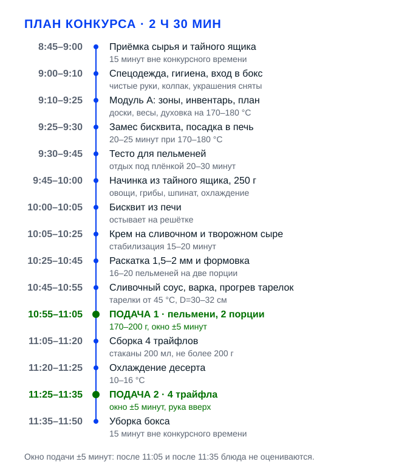
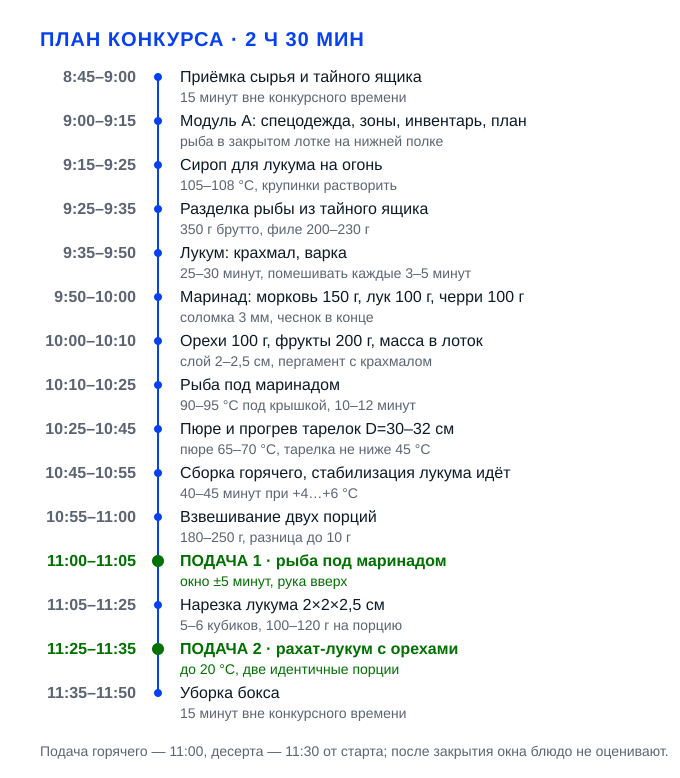

Кулинарное дело (Р)
Задания ниже — официальные файлы «Абилимпикс» (источник: abilympics-russia.ru), разложенные по категориям. Решения написаны по тексту задания, регламенту и критериям оценки; в них указано, что именно проверяет эксперт.
Школьник
14–16 лет, базовый уровень заданияВыдержка из официального конкурсного задания: страницы, относящиеся к категории «Школьник» (стр. 7–11, 16–17 источника).
Пошаговое решение
Категория «Школьники» на «Кулинарном деле (Р)» — это два с половиной часа основного времени, с 9:00 до 11:30, и два блюда с двумя жёсткими подачами. В 11:00 в окно 10:55–11:05 уходят две порции горячего «Пельмени со сливочным соусом», в 11:30 в окно 11:25–11:35 — четыре порции трайфла «Красный бархат»; после закрытия окна блюда не оцениваются вообще. Начинку для пельменей и ягоды для декора выдаёт тайный ящик, по 250 г, остальное берётся из единого списка сырья: мука 400 г, сливки 33–35% 350 мл, яйца 4 штуки, кефир 200 мл, сливочный и творожный сыр. Горячее подают по 170–200 г на белых круглых плоских тарелках 30–32 см с температурой не ниже 45 °C, десерт — не более 200 г в прозрачных стаканах 200 мл при 10–16 °C. Модуль А, организация и уборка, вынесен за конкурсное время: пятнадцать минут до старта на приёмку сырья и пятнадцать после на уборку.

Задача 1. Организовать бокс и принять сырьё до стартаМодуль А · вне конкурсного времени, 15 минут до старта и 15 после
Модуль А по конкурсному заданию вынесен за пределы основных двух с половиной часов: участнику дают пятнадцать минут до старта на проверку и подтверждение качества и количества ингредиентов по перечню и ещё пятнадцать минут после сдачи на уборку бокса, причём кулинарная обработка продуктов в это время запрещена. Значит, все баллы этого модуля набираются не готовкой, а порядком: чистая спецодежда, вымытые руки, сверенное сырьё, разложенный по зонам инвентарь и понятный план на 2 часа 30 минут с двумя жёсткими точками — 11:00 и 11:30.
Действие 1.1. Войти в бокс по санитарным правилам
Шаг 1.1.1
Надеваем полный комплект: куртку или фартук поверх своей одежды, головной убор, закрытую обувь на нескользящей подошве. Колпак или косынку сажаем так, чтобы волосы были убраны и спереди, и на затылке, а длинные пряди дополнительно скалываем невидимками под ткань. Куртку застёгиваем на все пуговицы, рукава подворачиваем выше локтя: висящий рукав касается продуктов, цепляется за ручки кастрюль и тянет за собой посуду у плиты.
Внешний вид и спецодежда в модуле А прописаны отдельным требованием — «вы должны быть чистыми, опрятными и иметь презентабельный вид», и проверяется это до старта, пока руки ещё ничем не заняты. Формально выглядывающие волосы — нарушение санитарных норм, и оно фиксируется независимо от того, как в итоге получились пельмени и трайфл. Кроме того, опрятный вход задаёт тон: с первой минуты видно, что участник понимает, где он находится.
Отойдите к раковине или попросите волонтёра посмотреть со спины. Проверяем три вещи: волос не видно ни спереди, ни сзади; куртка застёгнута и не топорщится на груди; обувь закрытая и сухая. Рукав в опущенной руке заканчивается выше локтя, а не свисает до запястья.
Самая частая ошибка — надеть колпак «на макушку», оставив затылок открытым: спереди всё выглядит нормально, а сзади волосы выбиваются. Вторая — прийти в открытой обуви или футболке, рассчитывая надеть куртку «потом»: время уйдёт из модулей, а балл уже не вернуть.
Эксперт фиксирует соответствие спецодежды до старта, а затем следит, остаётся ли она чистой по ходу работы: пятна от соуса на груди и мука на рукавах к моменту первой подачи тоже считаются нарушением.
Шаг 1.1.2
Моем руки с мылом до запястий не меньше двадцати секунд, отдельно проходим большие пальцы, промежутки между пальцами и ногти, затем вытираем одноразовым полотенцем и сразу выбрасываем его. Повторяем это после каждой операции с сырым продуктом — после начинки из тайного ящика, после разделки овощей, после уборки и после того, как поправили колпак или лицо.
Гигиена рук в чек-листе модуля А названа прямо: руки моются в начале работы, в процессе заданий и в конце, после уборки. Логика не формальная: сырая начинка из тайного ящика и сырое тесто несут микрофлору, и если после них взяться за крем для трайфла, готовый десерт станет небезопасным. Оценивают не только вкус, но и соблюдение санитарных правил.
Руки сухие, полотенце использованное и выброшенное, а не брошенное на стол. Проверить себя просто: если вы только что держали начинку и собираетесь отсаживать крем, руки надо мыть, даже когда внешне они кажутся чистыми. Это правило «сырое — потом готовое» и есть главный чек-лист.
Классическая ошибка — протереть руки о фартук: визуально они сухие, но фартук становится переносчиком, и эксперт видит это сразу. Вторая — помыть руки один раз на входе и считать вопрос закрытым: оценивается процесс по ходу всех двух с половиной часов, а не стартовое состояние.
Эксперт смотрит на руки в течение всего конкурса, а не только на входе, и отдельно отмечает, меняются ли полотенца и моется ли инвентарь после контакта с сырой начинкой. Замечание по гигиене он делает сразу, на месте, и оно идёт в протокол.
Шаг 1.1.3
Снимаем часы, кольца, браслеты и длинные серьги, ногти должны быть коротко подстрижены, без лака и покрытия. Если работаете в перчатках, надеваем их на сухие руки и меняем каждые двадцать-тридцать минут, а также сразу после сырой начинки: в перчатке рука потеет, и на поверхности быстро размножаются бактерии. Кольцо, которое снимается туго, лучше оставить дома — в боксе на это уйдёт минута из приёмки.
Под украшениями остаются загрязнения, которые не смываются обычным мытьём, а камень из кольца или звено браслета могут уйти в фарш или в крем. Для блюда, которое пробуют дегустаторы, посторонний предмет в тарелке — это не мелочь, а немедленное обнуление результата модуля и разговор с главным экспертом. Перчатки при этом не заменяют мытьё рук: они лишь дополняют его, если с ними удобнее работать.
Руки осмотрены: украшений нет, ногти короткие, покрытия нет, перчатки по размеру и не рвутся при натягивании. Если кольцо снимается тяжело — снимайте дома, а не в боксе за минуту до старта, когда каждая минута уже на счету.
Оставить обручальное кольцо «оно же не мешает» — самое частое. На категории «Школьники» это проверяют на входе, и объяснение «я привык» не принимается. Вторая ошибка — работать в одной паре перчаток весь конкурс, включая переход от сырой начинки к крему.
Отдельный пункт санитарного чек-листа: эксперт проверяет руки до старта, а дальше наблюдает, меняются ли перчатки при переходе между сырым и готовым продуктом.
Действие 1.2. Принять сырьё и тайный ящик
Шаг 1.2.1
Берём перечень сырья и идём по нему сверху вниз, отмечая карандашом каждую позицию: мука пшеничная 400 г, сливки 33–35% 350 мл, сливочное масло 100 г, яйца 4 штуки, кефир 2,5% 200 мл, молоко 100 мл, сливочный сыр 200 г, творожный сыр 300 г, сметана 20% 100 г, растительное масло 200 г. Отдельно принимаем две позиции тайного ящика: 250 г начинки для пельменей и 250 г ягод или фруктов для декора десерта. Сомнительные веса проверяем на весах сразу, они стоят на площадке.
Приёмка — единственный момент, когда недостающее ещё можно получить: после старта замена идёт только через главного эксперта и его заместителя, и только если причина признана уважительной. Пятнадцати минут до старта хватает, чтобы спокойно пройти по списку, но не хватает, чтобы сначала начать готовить, а потом спохватиться. Добавлять или убирать позиции из перечня запрещено, поэтому сверка идёт строго по документу.
Все строки списка отмечены, расхождения записаны точно: чего нет, сколько нет и в каком виде. Отдельно проверьте, что обе позиции тайного ящика на месте и закрыты так, как выданы, — их вес, 250 г и 250 г, заявлен на одного участника и заказывать их не нужно.
Начать с готовки, не сверив список, — потом в середине работы выясняется, что сливок меньше, чем нужно на соус и крем, и перекраивать план уже поздно. Вторая ошибка — увидеть недостачу и промолчать «обойдусь»: молчание фиксируется как согласие с набором продуктов.
Умение работать по перечню — часть критерия организации: эксперт видит, сверялся участник со списком или брал наугад. Приёмка идёт вне конкурсного времени, поэтому наблюдают за ней не все члены группы, но записи остаются.
Шаг 1.2.2
Проверяем каждый скоропортящийся продукт по трём признакам: температура на ощупь, запах и внешний вид. Сливки и молоко не должны быть тёплыми, упаковка — не вздутой и не подтёкшей; сливочное масло плотное, без желтизны по краю; яйца целые, без трещин; сливочный и творожный сыр однородный, без отслоившейся сыворотки; зелень и шпинат не вялые, без жёлтых листьев; шампиньоны светлые, без тёмных пластинок и слизи.
Из испорченного продукта безопасное блюдо сделать невозможно, а по чек-листу модуля А оценивается соблюдение санитарных норм и отсутствие брака в работе. Тайный ящик выдаётся один раз и в равном для всех количестве, поэтому испорченную позицию надо заменить до старта — после старта её просто не будет, и целый модуль может развалиться из-за одного компонента.
По каждому продукту проверены температура, запах и вид. Сомневаетесь — откладываете в сторону и идёте к эксперту, а не «перерабатываете» в блюдо. Отдельно посмотрите на ягоды из тайного ящика: мятые и подтекающие в десерт не годятся, но и выбрасывать их нельзя, пока не согласовали замену.
Самая опасная ошибка — взять тёплые сливки или мягкий сыр «на вид нормальные»: внешне они выглядят хорошо, но температурный режим уже нарушен, и крем потом не собьётся или отслоится. Вторая — выбросить испорченный продукт молча: его не заменят, и вы останетесь без ингредиента на середине работы.
Санитария и отсутствие брака в работе — отдельные пункты чек-листа модуля А; эксперт может подойти и посмотреть, как хранится сырьё, уже во время конкурса.
Шаг 1.2.3
Если чего-то не хватает, продукт испорчен или качество не соответствует заявленному, сразу подходим к главному эксперту или его заместителю — не позже чем за пятнадцать минут до старта. Говорим коротко и по делу: что именно, сколько и в чём проблема, например «сливок 250 мл вместо 350 и в двух яйцах трещины». Показываем продукт, не убирая его обратно в холодильник.
Позже претензию не примут: считается, что участник согласился с набором и с качеством. Кроме того, спокойное и точное обращение — часть оценки коммуникации: эксперт видит, умеет ли участник сформулировать проблему, а не паниковать. На категории «Школьники» к этому относятся мягко, но фиксируют факт обращения и его своевременность.
Факт обращения зафиксирован, и вы получили понятный ответ: замену, дополнение или объяснение, почему так и должно быть, например что часть продуктов лежит на общем столе. После ответа сразу отметьте позицию в списке, чтобы не возвращаться к ней второй раз.
Тянуть до последнего, а потом просить замену за минуту до старта: время приёмки уже вышло. Или наоборот — начать спорить и требовать, вместо того чтобы объяснить ситуацию и показать продукт: разговор затягивается, и остальные позиции списка остаются непроверенными.
Эксперт наблюдает за коммуникацией и за тем, насколько участник владеет ситуацией: называет ли он конкретные позиции и веса или говорит общими словами.
Шаг 1.2.4
Раскладываем сырьё по зонам и по температуре. Молочное и яйца — в холодильник, отдельно от овощей и зелени; начинку из тайного ящика ставим на нижнюю полку в закрытом контейнере, чтобы сок не капал на готовые продукты; муку и растительное масло оставляем в сухой зоне на столе. Всё, что вскрыто, закрываем плёнкой или крышкой и подписываем, если позиции похожи, например творожный и сливочный сыр.
По чек-листу модуля А в холодильниках должно быть организовано раздельное хранение сырья и полуфабрикатов, раковины и рабочие поверхности не должны быть загромождены, а все заготовки должны быть упакованы и тарированы. Разделение нужно и практически: сырая начинка рядом с кремом — это перекрёстное загрязнение, а перепутанные сыры дают разный результат при взбивании: творожный плотнее и держит форму хуже сливочного.
Холодильник открывается и проверяется: полки разделены по группам, всё закрыто, ничего не лежит навалом, поддон сухой. На столе свободна хотя бы половина поверхности — вам ещё предстоит раскатывать тесто, и места под доску должно хватать.
Сложить всё в холодильник одной кучей — потом искать нужное в спешке и путать сыры. Оставить открытую упаковку с начинкой на столе рядом с мукой — прямой риск перекрёстного загрязнения и замечание по санитарии.
Эксперт по технике безопасности и члены группы обходят боксы перед стартом; порядок в холодильнике и на столе — первое, что видно без всяких вопросов.
Действие 1.3. Развернуть рабочее место и расписать время
Шаг 1.3.1
Собираем рабочее место по зонам слева направо, как идёт работа: слева — разделочные доски для овощей и для начинки, ножи, толкушка и миски для фарша; в центре — доска для теста, скалка, стакан или вырубка для кружков; справа — весы, лопатки, шумовка и посуда под готовое. Отдельно ставим кондитерский мешок с насадкой и стаканы 200 мл для трайфла, чтобы они не искались в последние двадцать минут.
Рабочие поверхности по чек-листу не должны быть загромождены, а работа должна идти чисто, аккуратно и эффективно. Зоны важны и по времени: при двух подачах, в 11:00 и 11:30, любая перестановка посреди процесса отнимает минуты, которых нет. Когда доска для теста и доска для начинки разведены, вы не таскаете нож от одной к другой с грязными руками.
Проверьте себя по картинке: если встать в центре бокса и обвести рукой рабочую поверхность, каждая зона должна попадаться в том порядке, в котором вы будете к ней обращаться. На столе не остаётся ничего, что не понадобится до 11:35.
Разложить инвентарь «как получилось» — потом половину времени вы тратите на поиск крышки или ножа. Вторая ошибка — оставить на столе личные вещи, телефон и упаковку от продуктов: это и загромождение, и нарушение санитарии.
Организация рабочего места — название самого модуля А, поэтому эксперт смотрит на разложенный инвентарь целенаправленно, а не между делом. Он обходит боксы в первые десять минут после старта и отмечает, где лежат доски, ножи и весы.
Шаг 1.3.2
Проверяем и включаем то, что должно работать само: духовку ставим на 170–180 °C, чтобы она вышла на режим к моменту посадки бисквита, плиту оставляем чистой и готовой, весы обнуляем с точностью до грамма, ставим таймер на телефоне или на часах площадки. Рядом с весами держим миску тары: взвешивать начинку по 8–10 граммов на пельмень удобнее, когда тара уже под рукой.
Духовка выходит на режим десять-пятнадцать минут, и если поставить бисквит в холодную, он поднимется неровно и осядет в середине. Точные весы нужны по двум причинам сразу: масса порции горячего блюда по заданию 170–200 г, а вес трайфла — не более 200 г, и проверяют это на весах организатора. Таймер — потому что обе подачи привязаны к минутам, а не к «примерно готово».
Духовка показывает заданную температуру, весы обнуляются и повторяют показания при контрольном взвешивании, таймер идёт. Проверьте, что в боксе есть бумажные полотенца и хотя бы два чистых полотенца для посуды: их всегда не хватает к моменту подачи.
Начать с замеса, не включив духовку: бисквит потом садится в непрогретый объём и получается плотным. Вторая ошибка — работать «на глаз» без весов, а на подаче обнаружить, что порция весит 230 г вместо 200.
Организация и безопасность проверяются с первых минут: эксперт видит, прогрета ли духовка и стоят ли весы на нуле, когда участник уже начал работу. Отдельно фиксируется, пользуется ли участник таймером, а не «примерно помнит» про окна подачи.
Шаг 1.3.3
Расписываем время от старта в 9:00 до второй подачи в 11:30 и держим план в голове. Порядок такой: 9:00–9:10 вход и гигиена, 9:25–9:30 замес бисквита и посадка в печь на 20–25 минут, 9:30–9:45 тесто для пельменей и отдых под плёнкой, 9:45–10:00 начинка из тайного ящика, 10:00–10:25 крем, 10:25–10:45 раскатка и формовка, 10:45–10:55 соус и варка, 11:00 подача пельменей, 11:05–11:20 сборка трайфлов, 11:30 вторая подача.
Участник по заданию распределяет время между модулями самостоятельно, и это самое уязвимое место у школьников: бисквит должен остыть до сборки, крем — стабилизироваться в холодильнике, а пельмени варятся в последние десять минут перед подачей. Если поменять порядок и начать с пельменей, трайфл соберётся в спешке и поплывёт. Окна подачи жёсткие: 10:55–11:05 и 11:25–11:35, после них блюда не оцениваются.
План записан или проговорён вслух и сверен с часами площадки: на 9:30 у вас должен стоять бисквит в печи, на 10:45 — готовые пельмени на припылённой доске. В 10:40 проверьте, что соус уже варится, а тарелки прогреваются, иначе первая подача сорвётся.
Планировать «по ходу» и спохватываться в 10:50, что бисквит ещё не испечён: десерт не успеет остыть, крем потечёт. Вторая ошибка — отдать все силы пельменям и оставить на трайфл двадцать минут, хотя на четыре порции со сборкой нужно не меньше сорока.
Эксперт видит план по косвенным признакам: к 10:45 у участника уже стоит полуфабрикат десерта, а не начинается паника у печи. Планомерность входит в оценку организации.
Задача 2. Сделать пельмени: тесто, начинка из тайного ящика, формовкаМодуль Б · подача в 11:00, окно 10:55–11:05
Модуль Б — это две порции горячего блюда «Пельмени со сливочным соусом» в авторской импровизации. Начинка обязательно включает региональный ингредиент из тайного ящика, 250 г, и продукты из списка сырья; соус один, горячий, сливочный. Масса порции строго 170–200 г, температура тарелки от 45 °C, посуда — белая круглая плоская тарелка с бортом диаметром 30–32 см без декора. Заготовки заранее делать нельзя, поэтому тесто, фарш и лепка укладываются в те же часы, что и десерт.
Действие 2.1. Замесить тесто
Шаг 2.1.1
Просеиваем муку пшеничную, отмеренную на весах из расчёта примерно 300 г на 400 г общей нормы, и собираем горкой на доске или в широкой миске. В центре делаем воронку глубиной в два пальца: в неё пойдут яйца, тёплая вода и соль. Не высыпайте всю муку сразу в воду — половину оставьте на подсыпку, её количество зависит от влажности и от размера яиц. Проверьте, что доска сухая: на влажной мука схватывается комками ещё до замеса.
Тесто — основа формы: если пельмень разошёлся в кипятке, никакая начинка и никакой соус уже не спасут, а по критерию внешнего вида и аккуратности это сразу несколько потерянных позиций. Просеивание не ритуал: в муке попадаются комочки, и в готовом тесте они дают светлые плотные точки, которые видно на разрезе. Отдельная норма муки в списке — 400 г — рассчитана на два модуля, значит, остаток пригодится для подсыпки и для бисквита.
Мука просеяна, комочков нет, горка держит форму, а не расползается. Взвесьте отмеренную часть: для теста берём около трёх четвертей нормы, остальное оставляем сухим на подсыпку доски и раскатки. Проверьте, что рядом стоит миска для остатка — так мука не уходит в отходы.
Высыпать всю муку сразу и залить водой — тесто получится тугим, и раскатать его тонко не удастся: оно будет стягиваться назад. Вторая ошибка — взять муку из общей тары горстью, без весов, и потом досыпать «до нужной консистенции», теряя счёт продукту.
Чрезмерное расходование продуктов — отдельный пункт модуля А, и работа с весами вместо горстей видна эксперту сразу, особенно когда мука остаётся, а не уходит в отходы.
Шаг 2.1.2
Разбиваем в воронку два яйца, добавляем щепотку соли, сто миллилитров тёплой воды и сто миллилитров кефира 2,5% — он даёт тесту пластичность и лёгкую кислинку, которая хорошо держит вкус начинки. Замешиваем вилкой от центра, постепенно подбирая муку с краёв, затем переходим на руку и месим десять-двенадцать минут: тесто должно стать гладким, перестать липнуть к ладони и начать пружинить при нажатии пальцем.
Кефир и яйцо заявлены в перечне школьников, и именно они дают тот самый эластичный пласт, который не рвётся при защипе. Десять минут замеса — не преувеличение: за это время развивается клейковина, и тесто потом раскатывается до двух миллиметров без разрывов. Недомешенное тесто рвётся по краю, фарш вытекает в воду, и блюдо приходит к эксперту с пустыми лопнувшими пельменями.
Тесто гладкое, однородное, не липнет к сухой ладони, при нажатии пальцем ямка медленно выравнивается. Если липнет — добавьте столовую ложку муки и помесите ещё минуту; если крошится — чайную ложку воды.
Месить три минуты и остановиться, как только мука собралась в шар: тесто кажется готовым, но при раскатке стягивается и рвётся по кромке. Вторая ошибка — налить воды «на глаз» и получить липкий ком, который приходится забивать мукой до состояния плотного камня.
Консистенцию теста и его эластичность эксперт оценивает уже по готовому изделию: по толщине кромки и по тому, держит ли пельмень форму после варки. Но подходит он к боксу и во время замеса, чтобы посмотреть на руки и на количество муки.
Шаг 2.1.3
Собираем тесто в шар, заворачиваем в пищевую плёнку и убираем в холодильник на двадцать минут, максимум на тридцать. Пока тесто отдыхает, занимаемся начинкой и бисквитом: клейковина расслабляется, и пласт перестаёт стягиваться. Достаём тесто ровно тогда, когда начинка уже охлаждена, иначе оно полежит лишние полчаса и начнёт сереть по поверхности. Плёнку берите пищевую, а не пакет: она плотнее прилегает и не даёт тесту заветриться.
Отдых теста — это не пауза, а технологическая операция: без неё раскатанный пласт самопроизвольно сжимается, кружки получаются овальными, а защип — толстым. Двадцать минут можно потратить с пользой, потому что бисквит и начинка в этот момент всё равно требуют внимания, а время до подачи в 11:00 идёт непрерывно.
Тесто после отдыха мягкое, но не липкое, раскатывается без усилия и не тянется назад. Проверьте пальцем: след вдавливания почти не виден, поверхность матовая, без серых пятен. Плёнка снята целиком, кусочков на шаре не осталось.
Оставить тесто лежать на столе открытым: поверхность заветривается и покрывается корочкой, которая потом идёт в пласт жёсткими вкраплениями. Вторая ошибка — передержать тесто в холодильнике сорок минут и больше, а потом обнаружить, что оно стало серым и менее эластичным.
Наблюдательный эксперт замечает, когда именно участник снял тесто с отдыха: по планомерности работы видно, продуман ли процесс. Отдельно оценивается, не лежит ли тесто открытым на столе — это нарушение технологии.
Действие 2.2. Приготовить начинку из тайного ящика
Шаг 2.2.1
Раскрываем тайный ящик и оцениваем региональный ингредиент, 250 г: смотрим структуру, влажность, размер куска. Дальше решаем, как с ним работать: мясо или птицу режем мелким кубиком 3–4 мм либо рубим ножом, рыбу разбираем на волокна и убираем кости, овощную или грибную основу режем так же мелко. Если структура продукта незнакома, сначала пробуем маленький кусочек на вкус и только потом строим начинку.
Начинка из тайного ящика — обязательное условие модуля Б, и региональный компонент должен читаться во вкусе, а не теряться за специями. Кусок 250 г рассчитан на две порции с запасом, но не позволяет выбрасывать обрезки: всё, что осталось после разбора, идёт в фарш. Крупно нарезанная начинка рвёт тонкое тесто при защипе, поэтому размер кубика здесь не вкусовая прихоть, а вопрос целостности изделия.
Начинка разобрана: костей, плёнок и жёстких частей нет, кусочки одинакового размера, общий вес на весах совпадает с исходным за вычетом отходов. Отходы взвешены и лежат отдельно — так видно, что продукт израсходован разумно.
Нарезать ингредиент крупно, «чтобы чувствовалось»: такой кусок не проваривается за две-три минуты и рвёт тесто при защипывании. Вторая ошибка — сразу залить незнакомый продукт специями, не попробовав: если он солёный или кислый, начинка уже не исправится.
Эксперт подходит к боксу, когда участник вскрывает тайный ящик: важно увидеть, как он обращается с незнакомым продуктом и не выбрасывает ли его целиком.
Шаг 2.2.2
Ставим сковороду на средний огонь, наливаем две столовые ложки растительного масла и пассеруем мелко нарезанный репчатый лук, около ста граммов по перечню, до прозрачности и мягкости — три-четыре минуты, без корочки. Затем добавляем морковь, нарезанную кубиком или натёртую на крупной тёрке, и готовим ещё три-четыре минуты, пока она не станет мягкой, но не начнёт карамелизоваться.
Лук и морковь в перечне есть, и они дают начинке сочность и сладость, которая связывает региональный ингредиент с остальными компонентами. Пассеровка без корочки важна потому, что подгоревший лук даёт горечь, а она в пельменях чувствуется сильнее, чем в открытом блюде. Одновременно это работа с плитой, где оценивают приёмы тепловой обработки и соблюдение техники безопасности.
Лук прозрачный и мягкий, морковь гнётся, но не рассыпается, масло в сковороде прозрачное, без коричневых вкраплений. Попробуйте на вкус: должно быть сладко, без горечи и без сырого лукового запаха. Если на дне скопилось много масла, слейте его, иначе начинка поплывёт.
Жарить на максимальном огне, чтобы быстрее: лук горит по краям, а внутри остаётся сырым, и в начинке появляется горечь. Вторая ошибка — налить масло «на глаз» и получить жирную овощную массу, которая потом отделит сок в фарш.
Приёмы тепловой обработки — отдельный критерий; эксперт смотрит на огонь, на количество масла и на то, не дымит ли сковорода. Подходит он к плите в первые минуты жарки, когда видно и настрой участника, и порядок на рабочем месте.
Шаг 2.2.3
К пассерованным овощам добавляем шампиньоны, около ста граммов, нарезанные пластинками, и готовим, пока не выпарится влага — четыре-пять минут. Затем кладём мелко нарезанный шпинат, двадцать граммов, и чеснок, около двадцати граммов через пресс, прогреваем тридцать секунд, снимаем с огня и соединяем с подготовленным региональным ингредиентом. Всё перемешиваем лопаткой, а не венчиком, чтобы не разбить кусочки в кашу.
Грибы и шпинат заявлены в перечне школьников и работают как вкусовой мост между региональным компонентом и сливочным соусом. Шпинат кладут в конце, потому что при долгой тепловой обработке он темнеет и теряет цвет; чеснок — тоже в конце, иначе он горчит. Соединение до охлаждения нужно для того, чтобы начинка была однородной по температуре и не отдавала воду в тесто неравномерно.
Влага из грибов выпарена, шпинат только потемнел и осел, чеснок не подгорел. Начинка однородная по цвету, кусочки распределены равномерно, лишней жидкости на дне сковороды нет. Попробуйте щепотку: грибы не скрипят на зубах, шпинат не горчит.
Добавить шпинат вместе с грибами и жарить десять минут: он превращается в тёмную массу и красит всю начинку. Вторая ошибка — оставить начинку мокрой: при лепке вода размягчает тесто изнутри, и пельмень разваливается в кипятке.
Вкус и текстура начинки — ключевая часть оценки модуля Б; эксперт пробует блюдо после подачи, но по виду сковороды и по обращению с продуктом он уже видит, насколько аккуратно велась работа.
Шаг 2.2.4
Перекладываем начинку в широкую миску и охлаждаем до тёплого состояния, не ниже комнатной температуры и не в холодильнике под крышкой: горячий фарш размягчит тесто. Солим и перчим умеренно, помня, что соус тоже солёный, и обязательно пробуем на вкус после охлаждения, а не сразу с плиты — горячее всегда кажется преснее. Если начинка кажется сухой, добавляем столовую ложку сливок или бульона, если жидкой — откидываем на сито.
Солить горячую начинку «на глаз» — типичная причина пересола всего блюда, потому что к соусу добавляется ещё и сыр. Баланс вкуса оценивают отдельно от внешнего вида, и пересол не исправить ни подачей, ни декором. Консистенция тоже важна: слишком жидкая начинка при защипе выдавливается наружу, и кромка не склеивается.
Начинка тёплая, держит форму горки, не растекается по миске и не выделяет сок на дне. На вкус соль чувствуется, но не перебивает сам продукт из тайного ящика; перец на грани, а не вперёд. Если на дне собралась жидкость, откиньте начинку на сито и дайте стечь.
Солить сразу и много, «чтобы наверняка»: потом соус на сливках и сыре добавляет соль, и блюдо уходит в пересол. Вторая ошибка — лепить пельмени горячей начинкой: тесто под ней преет, кромка не держится, и пельмень разваливается при варке.
Эксперт дегустирует блюдо уже после подачи, но консистенцию и цвет начинки видит в разрезе вместе с толщиной теста — это одна из самых показательных проб.
Действие 2.3. Раскатать тесто и слепить пельмени
Шаг 2.3.1
Делим тесто на две-три части, каждую раскатываем скалкой от центра к краям на припылённой мукой доске до толщины полтора-два миллиметра. Толщина проверяется на просвет: пласт должен слабо пропускать свет, но не рваться при подъёме за край. Кружки выдавливаем стаканом или вырубкой диаметром 55–60 мм, обрезки не выбрасываем, а собираем в шар и раскатываем снова — иначе теста не хватит на две порции.
Толщина пласта — главный параметр, который определяет, будет ли пельмень «тестяным» или тонким: при двух миллиметрах кромка после защипа не превышает четырёх, и на разрезе видно соотношение теста и начинки. Кружок 55–60 мм при начинке 8–10 г даёт пельмень, который проваривается за две-три минуты и при этом не разваливается. Возврат обрезков в шар — не экономия ради экономии: теста по норме ровно столько, сколько нужно на две порции по 170–200 г.
Пласт просвечивает, но не рвётся, кружки ровные, одинакового диаметра, толщина по краю и в центре одинаковая. Проверьте край: он не должен быть заметно толще середины, иначе при защипе получится грубая мучная кромка.
Раскатать толсто, «чтобы не порвалось»: кромка становится мучной и непроваренной, и это сразу видно на разрезе. Вторая ошибка — сыпать муку на пласт щедро: излишек муки не даёт кромке склеиться, и пельмень раскрывается в кипятке.
Толщина теста оценивается на разрезе готового изделия; эксперт смотрит именно соотношение теста и начинки, а не общий вид. На раскатку он смотрит и раньше — в момент, когда участник работает скалкой, и отмечает, припылена ли доска.
Шаг 2.3.2
На каждый кружок кладём 8–10 граммов начинки, отмеряя ложкой с горкой, а первые несколько штук взвешиваем, чтобы поймать норму. Начинку ставим чуть ниже центра, а не по всей площади: верхний край должен остаться чистым, иначе он не склеится. Кружки с начинкой накрываем полотенцем — тесто на воздухе подсыхает за пять минут и перестаёт липнуть. Ложку держите одной рукой, а второй придерживайте кружок, чтобы он не сдвигался с места.
Ровная дозировка нужна по двум причинам: одинаковые пельмени провариваются одновременно, а вес порции в 170–200 г потом не приходится подгонять добавками. Если начинки больше нормы, при защипе она выдавливается на кромку и тесто там не схватывается — это самая частая причина лопнувших пельменей. Подсыхание теста тоже критично: подсохшая кромка не склеивается вообще, как её ни прижимай.
Все кружки с начинкой одинаковые на глаз, начинка не касается края, тесто под полотенцем остаётся эластичным. На весах контрольный пельмень весит примерно 12–14 г — значит, на порцию из восьми-десяти штук выходит около 100–140 г и соус добирает остальное до нужных 170–200 г.
Класть начинку «с горкой», чтобы было вкусно: кромка пачкается, защип не держится, и половина пельменей раскрывается в воде. Вторая ошибка — оставить кружки открытыми и заняться соусом: за десять минут кромка подсыхает и лепка превращается в мучение.
Аккуратность и правильность порционирования — часть оценки; эксперт видит одинаковость заготовок ещё до варки, когда обходит боксы. Он же проверяет, накрыты ли кружки полотенцем и не сохнет ли тесто на воздухе.
Шаг 2.3.3
Защипываем край: складываем кружок пополам, прижимаем середину, затем ведём от середины к одному углу, потом к другому, выдавливая воздух. Защип делаем узкий, три-четыре миллиметра, с плотным прижатием подушечкой пальца, а для надёжности проходим по нему второй раз «косичкой» или просто пережимаем ещё раз. Готовый пельмень сразу ставим на доску, припылённую мукой, не наминая форму.
Защип — самое слабое место изделия: именно по нему пельмень расходится в кипятке, и именно по нему судят о технике. Воздух внутри при варке расширяется, и если его не выдавить, он разрывает шов изнутри. Узкая кромка нужна, чтобы теста на краю было меньше и оно успевало провариться вместе с остальным. Форму не сминаем потому, что на подаче важна авторская подача, а мятый пельмень выглядит небрежно.
Шов плотный, без просветов и трещин, воздух внутри не гуляет, форма пельменя читается как «полумесяц с гребешком». Возьмите один пельмень за гребешок и подержите на весу — он не должен раскрыться под собственным весом.
Слепить «как получится», прижав край один раз: шов расходится при варке, и в кастрюле плавает фарш. Вторая ошибка — оставить внутри воздух, тогда пельмень раздувается и лопается по шву, а также слепить кромку слишком широкой: она не проваривается и остаётся мучной.
Техника лепки видна и на заготовке, и на разрезе готового пельменя: эксперт специально смотрит один пельмень из порции, чтобы оценить шов. Смотрит он и на гребешок: ровный защип читается как уверенная техника.
Шаг 2.3.4
Готовые пельмени укладываем в один слой на доску, припылённую мукой, и держим в холодильнике, но не больше тридцати минут до варки. Считаем их сразу: на две порции нужно примерно шестнадцать-двадцать штук, и лучше иметь два-три запасных, если один разойдётся. Заготовки заранее по правилам конкурса делать нельзя, поэтому всё, что слеплено, идёт в кастрюлю в тот же день и в те же часы.
Правило «не разрешается делать заготовки заранее» относится к работе до старта, но и внутри конкурса затягивать нельзя: тесто под начинкой постепенно намокает, и через сорок минут пельмень начинает «плыть». Счёт заготовок нужен, чтобы в 10:45 не выяснилось, что до нужного веса порции не хватает двух штук, а лепить их уже некогда — соус и прогрев тарелок занимают последние десять минут.
Заготовки лежат в один слой, не слиплись, доска припылена, швы целые. Пересчитайте их вслух и сравните с планом: минимум восемь штук на порцию при весе около 12–14 г каждая. Заготовки перед варкой должны быть прохладными, но не перемороженными.
Сложить пельмени горкой в миску: они слипаются в ком, и при разделении рвётся шов. Вторая ошибка — не считать заготовки и в последний момент обнаружить нехватку на целую порцию, когда лепить уже некогда.
Организация и планирование — часть модуля А, и запас в две-три заготовки читается как продуманность, а не как лишняя работа. Эксперт может пересчитать заготовки вместе с участником и уточнить, на сколько порций они рассчитаны.
Задача 3. Сделать сливочный соус, сварить пельмени и подать в 11:00Модуль Б · подача 11:00, окно подачи 10:55–11:05
Соус в этом модуле — обязательный компонент с отдельной оценкой вкуса: один, горячий, сливочный, из ингредиентов списка сырья, без добавок из тайного ящика. Подача идёт ровно в окно 10:55–11:05 на двух одинаковых белых круглых плоских тарелках с бортом диаметром 30–32 см, без несъедобных компонентов и без шпажек: одна тарелка идёт на оценку измеримых показателей и фотографирование, вторая — в дегустацию. Масса каждой порции 170–200 г, температура тарелки от 45 °C.
Действие 3.1. Сварить сливочный соус
Шаг 3.1.1
Ставим сотейник или широкую сковороду на средний огонь, растапливаем двадцать граммов сливочного масла — это примерно пятая часть от нормы в 100 г — и пассеруем нарезанный кольцами лук порей, около семидесяти граммов, две-три минуты до мягкости. Как только порей стал прозрачным, вливаем сливки 33–35%, примерно 200 мл из нормы 350, и увариваем на слабом огне, помешивая, пока объём не уменьшится примерно на треть.
Сливочный соус — единственный соус модуля, и по заданию он должен быть горячим; оценивают и вкус, и консистенцию. Порей даёт сладость и лёгкую луковую нотку, которая не спорит с начинкой. Уваривание нужно для густоты: жидкие сливки стекают с пельменя и растекаются по тарелке, пачкая край, а по критерию аккуратности подачи это отдельная потеря. Сливки жирностью 33–35% выбраны не случайно — менее жирные при нагреве расслаиваются.
Соус покрывает ложку и стекает медленно, тонкой лентой, а не струёй. Порей мягкий, не поджаристый. Попробуйте: сливочный вкус без горечи и без привкуса кипячёного молока, который появляется при сильном кипении.
Кипятить сливки на максимуме: они свёртываются хлопьями, и соус приходится выбрасывать, а второй порции сливок на площадке нет. Вторая ошибка — не уварить и получить жидкий соус, который заливает всю тарелку.
Приёмы тепловой обработки и качество соуса оцениваются отдельно; эксперт смотрит на цвет, на блеск и на то, как соус держится на пельмене. К сотейнику он подходит во время уваривания, чтобы увидеть огонь и помешивание.
Шаг 3.1.2
Снимаем сотейник с огня и вводим сливочный сыр, около ста граммов, размешивая до полного растворения — так соус получает тело и не расслаивается на тарелке. Затем возвращаем на минимальный огонь и прогреваем до 65–70 °C, не доводя до кипения. Если соус кажется густым, разводим двумя-тремя ложками молока из нормы 100 мл; если жидким — увариваем ещё две минуты, непрерывно помешивая.
Сыр в перечне есть в двух видах, и для соуса берём сливочный: творожный при нагреве ведёт себя иначе, он более зернистый и склонен к крупинкам. Температура 65–70 °C — рабочий диапазон: ниже соус уже не горячий, а при кипении сыр сворачивается и даёт хлопья. По консистенции соус должен обволакивать пельмень, а не лежать лужей, потому что на оценке смотрят и вкус, и то, как блюдо выглядит на тарелке.
Соус однородный, без крупинок и хлопьев, блестящий, тёплый на ощупь через стенку сотейника. Проведите ложкой по дну: след должен заплывать медленно, за две-три секунды. Если появились белые точки, огонь был слишком сильным — соус надо снять и пробить венчиком.
Довести соус до кипения с сыром: он свернётся, и на поверхности появятся белые хлопья, которые уже не размешать. Вторая ошибка — оставить соус на плите без присмотра и получить пригоревшее молочное дно с запахом горелого.
Соус входит в оценку вкуса и внешнего вида; эксперт берёт его ложкой вместе с пельменем, чтобы понять баланс. Отдельно он смотрит консистенцию: стекает ли соус с ложки лентой или льётся струёй.
Шаг 3.1.3
Доводим вкус: соль, немного белого перца, при желании несколько капель лимонного сока — лимон в перечне есть, около пятидесяти граммов, и кислота хорошо снимает жирность сливок. Пробуем соус именно с кусочком пельменя или с начинкой, а не отдельно: он должен дополнять блюдо, а не перекрывать региональный ингредиент. Готовый соус держим на водяной бане или на минимальном огне под крышкой, перед подачей размешиваем.
Правило сбалансированности вкуса здесь работает буквально: соус оценивают в паре с блюдом, и если он пересолен или слишком кислый, вкус пельменей уже не читается. Кислота лимона — не украшение, а технологический приём: жирные сливки без неё кажутся тяжёлыми, особенно в горячем виде. Держать соус тёплым нужно потому, что подача горячего блюда требует температуры тарелки от 45 °C, а холодный соус мгновенно снижает общее впечатление.
Соус на вкус солёный ровно настолько, чтобы пельмень не казался пресным, кислота чуть уловима, но не выходит вперёд. На поверхности нет плёнки — значит, температура держится правильная и соус не остыл.
Солить соус до конца, не пробуя с начинкой: вместе с солёным фаршем блюдо уходит в пересол. Вторая ошибка — оставить соус остывать на выключенной плите: через десять минут он загустеет плёнкой и потеряет блеск.
Вкус соуса — отдельная позиция дегустации; эксперт пробует его и отдельно, и вместе с пельменем. Если соус пересолен или слишком кислый, вопрос задают сразу: чем добивались баланса и что добавляли.
Действие 3.2. Сварить пельмени
Шаг 3.2.1
Ставим широкую кастрюлю с водой на сильный огонь, доводим до бурного кипения и солим из расчёта примерно десять граммов соли на литр. Воды должно быть не меньше трёх литров: пельмени должны плавать свободно, а не толкаться. Пока вода греется, готовим шумовку, глубокую тарелку и сливочное масло — после варки пельмени сразу смазываем, чтобы не слипались.
Объём воды и соль — не формальность: в тесной кастрюле температура резко падает после закладки, пельмени слипаются и рвутся, а в пресной воде тесто становится клеклым. Соль в воде частично уходит в тесто, поэтому соус потом солим осторожнее. Смазывание маслом нужно, потому что до подачи остаётся несколько минут, и за это время мокрые пельмени успевают слипнуться в ком.
Вода бурно кипит, соль растворена, шумовка и тарелка под рукой. Проверьте, что рядом стоит миска с холодной водой или ледяная баня, если понадобится остановить варку. Соли на литр нужно около десяти граммов — на вкус вода должна быть заметно солёной.
Солить воду «щепоткой» и варить в литре: пельмени слипаются, тесто получается пресным и клеклым. Вторая ошибка — закладывать пельмени в холодную воду и ждать, пока закипит: тесто размокает и изделия разваливаются ещё до закипания.
Соблюдение технологии варки и техника безопасности у плиты оцениваются по ходу работы; эксперт стоит рядом в момент закладки. Он же смотрит, не накрыта ли кастрюля крышкой и не выплёскивается ли вода на плиту.
Шаг 3.2.2
Закладываем пельмени партиями по восемь-десять штук, аккуратно, по одному, и сразу помешиваем шумовкой или ложкой у дна, чтобы не прилипли. После закладки огонь оставляем сильным, но следим, чтобы вода не выплёскивалась. Не накрываем кастрюлю крышкой плотно: пена поднимается и заливает плиту, а пельмени мнутся друг о друга. Шумовку держите наготове: первая партия варится быстрее, чем кажется по часам.
Партии по восемь-десять штук нужны, чтобы вода не остывала слишком сильно: при закладке сразу двух порций температура падает, и пельмени варятся дольше, тесто разбухает. Помешивание у дна — профилактика прилипания, из-за которого шов рвётся при отрыве. Крышка не нужна, потому что нам важно видеть момент всплытия, а он и есть основной ориентир готовности.
Пельмени не прилипли, вода снова закипела через полторы-две минуты, швы целые. Если видите, что один пельмень раскрылся, вылавливайте его сразу, чтобы фарш не мутил воду, и не подавайте его. Вода должна оставаться почти прозрачной.
Ссыпать все заготовки разом и отвернуться: вода останавливает кипение, пельмени слипаются в ком, и при размешивании рвутся. Вторая ошибка — мешать интенсивно круговыми движениями, разбивая изделия о стенку кастрюли.
Бережное обращение с продуктом и чистота на рабочем месте — часть оценки; разбитые пельмени и мутная вода видны сразу. Эксперт отмечает и то, помешивает ли участник аккуратно или размешивает изделия о стенку кастрюли.
Шаг 3.2.3
Варим две-три минуты после того, как пельмени всплыли, и снимаем шумовкой на подогретую тарелку. Готовность проверяем на одном пельмене: разрезаем и смотрим, что тесто не имеет мучного белого слоя, а начинка горячая по всей толщине. Сваренные сразу смазываем растопленным сливочным маслом, чтобы не слипались, и держим в тёплом месте, но не под крышкой — иначе тесто отсыреет.
Переваренные пельмени теряют форму и расползаются, недоваренные — имеют мучной привкус и плотную кромку: и то и другое снимает оценку за текстуру и готовность. Две-три минуты после всплытия — рабочий ориентир для теста толщиной до двух миллиметров. Масло защищает поверхность от слипания, а отсутствие крышки — от конденсата, который делает тесто липким и блестящим.
На разрезе контрольного пельменя нет белой мучной полосы, начинка горячая, шов целый. На ощупь пельмень упругий и не разваливается в руке. Вода в кастрюле осталась почти прозрачной — значит, ни один не разошёлся.
Варить «пока не всплывут» и сразу вынимать: у толстого пельменя кромка остаётся сырой. Вторая ошибка — оставить сваренные пельмени в воде «до подачи»: они разбухают, становятся клеклыми, и текстура уже не соответствует заданию.
Готовность и текстура — прямые критерии оценки; эксперт разрезает один пельмень из поданной порции. Смотрит он и на цвет теста: сероватый оттенок говорит о том, что пельмень переварен.
Действие 3.3. Оформить и подать горячее блюдо в 11:00
Шаг 3.3.1
Прогреваем две тарелки: ставим их в тёплое место, обдаём горячей водой или держим рядом с плитой, затем протираем насухо. Тарелка должна быть белой, круглой, плоской, с бортом, диаметром 30–32 см, без декора и рисунка. Проверяем на ощупь: горячая, но не обжигающая, поверхность сухая, без капель и разводов. Тарелки ставьте на стол только после выкладки, иначе они остынут, пока вы собираете композицию.
Температура подачи тарелки по заданию — от 45 °C и выше, и это измеряемый параметр, а не пожелание: на холодной тарелке горячее блюдо остывает за минуту, и эксперт фиксирует нарушение температурного режима. Размер и цвет посуды тоже оговорены жёстко — белые круглые плоские тарелки без декора 30–32 см, потому что оценивают именно блюдо, а не рисунок на тарелке. Капли воды под соусом дают разводы, которые видно на фотографии.
Тарелка горячая на ощупь, сухая, диаметр в пределах 30–32 см, на поверхности нет рисунка и посторонних предметов. Если остыла — прогрейте снова, это минута. Проверьте обе тарелки: они должны быть из одного набора, иначе разница в цвете белого будет заметна.
Подать на холодной тарелке: блюдо остынет, и температурный критерий провален. Вторая ошибка — взять первую попавшуюся тарелку с декором или меньшего диаметра: посуда не соответствует заданию, и порция на ней выглядит иначе.
Температуру тарелки проверяют пирометром или на ощупь в момент подачи; посуду оценивают визуально, и это первое, что видит дегустатор. Эксперт обращает внимание и на то, прогревал ли участник тарелки заранее или делал это в последний момент.
Шаг 3.3.2
Выкладываем по восемь-десять пельменей на порцию, укладывая их веером или полукругом так, чтобы каждый был виден. Соус наливаем рядом или частично поливаем сверху, оставляя читаемой форму изделий. Взвешиваем: масса порции должна быть 170–200 г. Край тарелки после выкладки протираем насухо бумажным полотенцем. Если пельмени скользят по тарелке, подмажьте под ними тонкую полоску соуса — так композиция удержится при переноске.
Масса 170–200 г — измеряемый показатель, и он проверяется на весах: слишком лёгкая порция выглядит пустой, слишком тяжёлая не предусмотрена заданием. Соус рядом, а не весь сверху, нужен для того, чтобы эксперт видел и пельмень, и соус отдельно. Чистый край — базовая аккуратность подачи: пятна соуса на борту читаются как небрежность, даже если блюдо вкусное.
Порция на весах в диапазоне 170–200 г, пельмени не наезжают друг на друга, соус не заливает борт, край сухой. Посмотрите на тарелку сверху: композиция должна читаться без объяснений. Соус не должен растекаться до борта при наклоне тарелки.
Полить всё соусом «чтобы было видно, что он есть»: блюдо превращается в массу, и оценить форму изделия уже невозможно. Вторая ошибка — не взвесить порцию и подать 230 г, что выходит за рамки задания по массе.
Соответствие массы и аккуратность подачи — отдельные пункты; эксперт взвешивает тарелку, предназначенную для измеримых показателей. Он же смотрит на чистоту борта: пятна соуса на краю читаются как небрежность.
Шаг 3.3.3
Делаем вторую тарелку точно такой же: столько же пельменей, столько же соуса, та же композиция, тот же чистый край. Одна тарелка по правилам идёт на оценку измеримых показателей и фотографирование, вторая — в дегустацию, и они должны быть идентичны. Ставим обе на поднос или рабочую поверхность рядом, не накрывая, но и не остужая на сквозняке. Вторую тарелку собирайте сразу за первой, по той же схеме, пока соус и пельмени ещё горячие.
Требование двух идентичных блюд прописано в задании прямо: одна порция для экспертной группы, одна — как выставочный вариант. Если тарелки отличаются, сравнение идёт не в вашу пользу, а фотография выставочной тарелки расходится с тем, что пробуют дегустаторы. Идентичность — это ещё и проверка техники: ровно дозировать и повторять композицию умеет тот, кто контролирует процесс.
На двух тарелках одинаковое количество пельменей, одинаковое количество соуса, одинаковое расположение. Поставьте их рядом и сравните на расстоянии вытянутой руки — разница не должна бросаться в глаза.
Подать одну тарелку красиво, а вторую «как получилось»: эксперты сравнивают и фиксируют разницу. Вторая ошибка — оставить вторую тарелку на столе без присмотра, где на неё попадают брызги от соуса или мука с доски.
Сравнение двух порций — стандартный приём при оценке подачи; главный эксперт может сфотографировать блюдо на рабочем столе и показать группе. Одинаковость порций он отмечает отдельно, потому что она говорит о владении техникой.
Шаг 3.3.4
Подаём в окно 10:55–11:05: сервисное окно открывается за пять минут до подачи и закрывается через пять минут после, а позже блюда не оцениваются. Перед выносом проверяем по короткому списку: тарелки горячие, порции идентичные, вес в норме, край чистый, на тарелках нет несъедобных компонентов и шпажек. Выносим и уведомляем экспертов поднятой рукой. Перед выходом посмотрите на обе тарелки сбоку: именно так чаще всего видно пятно на борту.
Время — жёсткий критерий: 11:00 плюс-минус пять минут, и после 11:05 блюдо не принимают вообще. Несъедобные компоненты, дополнительные аксессуары и вспомогательный инвентарь на тарелках запрещены отдельным пунктом задания, а деревянные шпажки разрешены только в процессе приготовления, но не при подаче. Поднятая рука — официальный сигнал «блюдо готово к оценке», без него эксперты могут не подойти вовремя.
Тарелки вынесены до 11:05, рука поднята, эксперты подошли. Часы на площадке сверены: разница с вашим телефоном не должна сбивать — ориентируйтесь на время площадки. После подачи сразу зафиксируйте в уме, что осталось сделать до второй подачи в 11:30.
Дотягивать декор до 11:06 и вынести блюдо вне окна: работа по модулю Б просто не оценивается. Вторая ошибка — вынести тарелки по одной, растянув подачу на несколько минут, когда одна порция уже остыла, а вторая ещё в руках.
Время подачи фиксируется по факту; эксперт отмечает и момент подачи, и момент уведомления. Если участник поднял руку, а тарелки ещё не вынесены, это тоже фиксируется как нарушение порядка подачи.
Задача 4. Собрать и подать четыре трайфла «Красный бархат»Модуль В · подача 11:30, окно 11:25–11:35
Модуль В — слоеный десерт в четырёх порциях: выпеченный бисквит и крем из ингредиентов списка сырья, декор из тайного ящика, 250 г региональных ягод или фруктов, плюс продукты из перечня. Подача строго в прозрачных стеклянных стаканах 200 мл, вес одной порции не более 200 г, температура десерта 10–16 °C. Две порции идут на оценку измеримых показателей и фотографирование, две — в дегустацию, все четыре должны быть идентичны. Окно подачи — 11:25–11:35, позже десерт не оценивается.
Действие 4.1. Испечь бисквит
Шаг 4.1.1
До замеса ставим духовку на 170–180 °C и даём ей выйти на режим десять-пятнадцать минут. Форму или противень застилаем пергаментом, борта не смазываем, если тесто будет подниматься по стенкам. На весах отвешиваем муку — примерно 150 г на один корж, это часть нормы в 400 г — и готовим миску для взбивания, венчик и лопатку. Всё это делаем до того, как разбиты яйца: взбитая масса ждать не может.
Бисквит — единственный выпеченный элемент модуля В, и от него зависит геометрия десерта: если корж не поднялся или осел, слои выходят плотными и тяжёлыми. Духовку прогревают заранее, потому что в холодной бисквит поднимается неравномерно и в середине образуется «горб», который срезают, теряя объём.
Духовка показывает нужную температуру, пергамент лежит ровно, мука отвешена, лопатка и миска под рукой. Проверьте, что форма по размеру соответствует количеству теста: тонкий слой на большом противне сохнет, толстый в маленькой форме не пропекается.
Начать взбивать яйца, не включив духовку: пока она греется, масса осядет, и бисквит получится плоским. Вторая ошибка — поставить тесто в форму без пергамента и потом вырезать корж, теряя половину объёма.
Готовность выпечки и порядок у печи эксперт видит, когда обходит боксы: важно, прогрета ли духовка и не открывается ли она в первые минуты. Отдельно отмечается, подготовлена ли форма: пергамент и ровный слой теста.
Шаг 4.1.2
Взбиваем два яйца с сахаром — сахар берём с общего стола, в личном перечне его нет — до светлой пышной массы, которая держит след венчика: примерно пять-семь минут миксером или заметно дольше венчиком. Затем вводим кефир 2,5%, около 150 мл из нормы 200 мл, с растворённой в нём содой, и перемешиваем лопаткой. Муку добавляем в два-три приёма, вмешивая движениями снизу вверх, а не круговым взбиванием.
Кефир — не случайный выбор: он даёт бисквиту ту самую мягкую, слегка влажную структуру, которая в трайфле хорошо пропитывается кремом. Сода в кефире гасится естественным образом, поэтому тесто не пахнет содой. Муку вмешивают аккуратно именно потому, что при энергичном перемешивании из взбитой массы выходит воздух, и корж получается плотным, как кекс. Если в тесте останутся мучные комочки, они потом попадутся в слоях.
Масса светлая, пышная, стекает с лопатки лентой, а не льётся струёй. Мучных комочков нет, тесто однородное по цвету. Объём массы после вмешивания муки уменьшился, но не осел вдвое. Если масса стала жидкой и блестящей, воздух вышел — корж будет плотным.
Взбивать муку вместе с яйцами миксером: клейковина развивается, и корж получается резиновым. Вторая ошибка — сыпать соду «на глаз»: её избыток даёт мыльный привкус и тёмные точки на срезе. Третья — не вмешать муку до конца: в корже остаются сухие комки, которые видны на срезе.
Структура бисквита оценивается по разрезу готового десерта: эксперт видит, пористый он или забитый. На замес он может посмотреть и раньше — по движениям лопатки понятно, вмешивают муку аккуратно или размешивают массу как тесто для блинов.
Шаг 4.1.3
Красный оттенок «бархата» в условиях конкурса получаем из региональных ягод: небольшую часть ягод из тайного ящика разминаем в пюре, протираем через сито и вмешиваем в тесто до однородного розово-красного цвета. Если главный эксперт до старта скажет, что тайный ящик предназначен только для декора, красим тесто соком с общего стола или оставляем натуральный цвет и переносим акцент на декор — это допустимая авторская импровизация. Выливаем тесто в форму слоем полтора-два сантиметра и ставим в духовку на 20–25 минут при 170–180 °C.
Название десерта отсылает к цвету, а набор продуктов у школьников ограничен перечнем, поэтому источник цвета — отдельное творческое решение, и его озвучивают эксперту до старта: так снимается вопрос о правилах использования тайного ящика. Тонкий слой теста пропекается равномерно и режется кубиком, не разваливаясь.
Корж равномерно окрашен, без светлых разводов. Готовность проверяем деревянной шпажкой или зубочисткой в центре: она выходит сухой или с одной-двумя крошками, но без следов сырого теста. Края отошли от бортов формы.
Открывать духовку в первые пятнадцать минут: корж оседает и больше не поднимается. Вторая ошибка — передержать бисквит до сухого состояния: он крошится, и в стакане слои рассыпаются в труху, а десерт выглядит неаккуратно.
Готовность выпечки — измеримый критерий; эксперт может подойти к печи и посмотреть, как участник проверяет корж: шпажкой, а не покачиванием формы. Цвет бисквита он оценивает уже в стакане, на просвет.
Шаг 4.1.4
Вынимаем корж из формы вместе с пергаментом и оставляем остывать на решётке пятнадцать-двадцать минут: на решётке снизу проходит воздух, и корж не отсыревает. Полностью остывший бисквит нарезаем кубиком полтора-два сантиметра, ровным ножом, без нажима, чтобы кубики не мялись. Обрезки не выбрасываем — они пойдут в нижний слой стаканов, где их всё равно закроет крем.
Тёплый бисквит нельзя резать: он крошится, а положенный в стакан с кремом, начинает отдавать влагу и размягчает крем, из-за чего слои «плывут». Ровный кубик нужен для читаемости слоёв — в прозрачном стакане видно каждую прослойку, и именно по этому признаку оценивают аккуратность сборки. Использование обрезков в нижнем слое — способ выполнить требование о недопустимости чрезмерного расходования продуктов.
Корж остыл до комнатной температуры, кубики одинакового размера, ровные, не раздавленные. На весах общий вес нарезки известен — это поможет выдержать порцию не более 200 г. Нижняя сторона коржа не влажная: если она липнет к пальцу, корж надо досушить.
Резать горячий бисквит и сразу собирать десерт: кубики мнутся, крем тает, и слои теряют форму. Вторая ошибка — нарезать крупными кусками, которые не помещаются в стакан 200 мл, и потом давить их ложкой.
Аккуратность нарезки и состояние коржа видны в слоях готового десерта; эксперт смотрит стакан на просвет. Он же обращает внимание, лежит ли бисквит в стороне от крема, а не размокает заранее.
Действие 4.2. Приготовить крем
Шаг 4.2.1
Достаём сливочный и творожный сыр заранее, чтобы они прогрелись до комнатной температуры: холодный сыр при взбивании даёт крупинки. На четыре порции по 200 г крема нужно примерно 120 г сливочного сыра из нормы 200 г и 180 г творожного из нормы 300 г. Складываем оба сыра в миску и пробиваем лопаткой или миксером на низких оборотах до однородности, добавляя сахарную пудру с общего стола по вкусу.
Крем — вторая обязательная составляющая десерта, и его текстура в трайфле критичнее, чем вкус: слишком жидкий крем стекает и размывает слои, слишком плотный не даёт нужной нежности. Комнатная температура сыров — условие однородности: на холоде масса идёт комками, которые потом не разбить. Соотношение двух сыров важно: сливочный даёт вкус и гладкость, творожный — тело, чтобы слои держались в стакане.
Крем гладкий, без комочков, держит форму при подъёме лопаткой. На вкус — умеренно сладкий, с ясным сливочным вкусом. Если чувствуются крупинки, прогрейте миску в тёплой воде и пробейте ещё раз; если крем слишком густой, добавьте ложку сливок.
Взбивать холодный сыр прямо из холодильника: масса идёт крупинками, и крем выглядит зернистым. Вторая ошибка — сыпать сахар «на глаз» и получить приторный крем, который перебивает ягоды. Третья — взбивать крем миксером на высоких оборотах: масса нагревается и теряет форму.
Вкус и текстура крема — часть дегустационной оценки модуля В. Эксперт смотрит и на то, как участник обращается с сыром: достал ли его заранее и не греет ли на плите, чтобы ускорить процесс.
Шаг 4.2.2
Сливки 33–35% охлаждаем и взбиваем отдельно до устойчивых пиков: примерно 150 мл из нормы 350 мл, миксером две-три минуты, начиная с низких оборотов. Затем вмешиваем взбитые сливки в сырную массу лопаткой, порциями, движениями снизу вверх. Если крем получился жидковатым, добавляем ложку сметаны 20% или стабилизируем его в холодильнике пятнадцать-двадцать минут.
Сливки взбивают отдельно потому, что вместе с сыром они не дают объёма: сырная масса утяжеляет и «садит» сливки. Аккуратное вмешивание лопаткой сохраняет воздух, и крем остаётся лёгким — именно этого ждут от трайфла. Сметана в перечне есть, и она работает как загуститель и одновременно добавляет лёгкую кислинку, которая хорошо сочетается с ягодами из тайного ящика.
Крем держит форму, ложка оставляет чёткий след, при переворачивании миски не течёт. Вкус сливочный, без кислого привкуса перебитых сливок. Если крем получился жидким, стабилизируйте его в холодильнике и только потом перекладывайте в мешок.
Взбивать сливки слишком долго: они превращаются в масло и дают крупинки, а крем расслаивается. Вторая ошибка — вмешивать сливки миксером, отчего масса оседает и становится плотной, как сырная паста. И ещё одна: не охладить сливки перед взбиванием — тёплые не держат пик вообще.
Консистенция крема видна при сборке: если он держит форму, слои в стакане остаются чёткими и на фотографии, и на разрезе. Эксперт проверяет и вкус — берёт ложку из миски, пока десерт ещё не собран.
Шаг 4.2.3
Убираем крем в холодильник на пятнадцать-двадцать минут, чтобы он стабилизировался, и за это время подготавливаем стаканы: четыре прозрачных стеклянных стакана объёмом 200 мл, вымытые, вытертые насухо и охлаждённые. Перекладываем крем в кондитерский мешок с широкой насадкой — так слои ложатся ровно и одинаково во всех четырёх порциях. Широкую насадку выбирайте под диаметр стакана: узкая даёт тонкую колбаску и рваные слои.
Стабилизация нужна потому, что десерт подают при температуре 10–16 °C: сразу после взбивания крем тёплый и текучий, а охлаждённый держит слои. Сухие стаканы обязательны — капли воды на стенке видно на просвет, и они портят вид десерта. Мешок вместо ложки даёт одинаковую толщину слоёв, а идентичность четырёх порций прописана в задании отдельным требованием.
Крем охлаждён и держит форму, стаканы сухие, без разводов и сколов, мешок наполнен без пузырей. Проверьте, что все четыре стакана одинаковые по объёму и форме. Борт каждого стакана должен быть чистым — до начала сборки.
Собирать десерт тёплым кремом: слои расплываются, и стакан выглядит неопрятно. Вторая ошибка — взять разные стаканы или стаканы с гранями, через которые слои не читаются, хотя по заданию посуда прозрачная и одинаковая.
Посуда для десерта оговорена в задании — прозрачные стеклянные стаканы 200 мл; несоответствие видно сразу и оценивается отдельно. Эксперт смотрит и на то, не налит ли крем в стаканы заранее, до охлаждения.
Действие 4.3. Собрать четыре порции
Шаг 4.3.1
Собираем слои по схеме: на дно — кубики бисквита в один слой, примерно 60 г, сверху крем из мешка слоем в полтора сантиметра, затем несколько ягод, и так повторяем три раза, заканчивая кремом. Каждый слой слегка прижимаем ложкой с плоским концом, но не утрамбовываем: придавленный крем выдавливает влагу из бисквита. Верхний слой крема разравниваем спатулой или ложкой до ровной поверхности.
Трайфл читается именно слоями, и в прозрачном стакане видно всё: ровные горизонтальные полосы выглядят как профессиональная работа, а «каша» — как небрежность. Три повтора нужны, чтобы десерт был высоким и при этом помещался в стакан 200 мл. Ягоды в середине — не только вкус, но и цветовой акцент, который подчёркивает идею «красного бархата». Уплотнение ломает структуру: бисквит отдаёт сок, и крем начинает течь.
Слои видны через стекло, границы ровные, крем не смешался с бисквитом. Высота десерта доходит до края стакана или чуть ниже, оставляя место под декор. Проверьте все четыре стакана на просвет: число слоёв должно совпадать.
Набить стакан плотно и до самого верха: при добавлении декора крем выйдет через край и запачкает стенки. Вторая ошибка — класть крем ложкой без разравнивания, тогда слои получаются волнистыми и разной толщины в четырёх порциях.
Правильность и аккуратность сборки — ключевой критерий модуля В; эксперт смотрит стакан на просвет и сбоку. Он же проверяет, прижимает ли участник слои ложкой: следы утрамбовки видны по выдавленному крему.
Шаг 4.3.2
Контролируем вес: каждая порция не более 200 г, и это верхняя граница, а не цель. Взвешиваем каждый стакан отдельно и, если порция тяжелее, убираем ложкой часть верхнего крема, а не нижние слои. Следим, чтобы все четыре стакана были одинаковыми по весу и по высоте слоёв — тогда порции действительно идентичны, как требует задание. Пустой стакан ставьте на весы до обнуления, иначе вес тары уйдёт в общий вес порции.
Вес одной порции не более 200 г — прямое требование задания, и оно проверяется на весах организатора. Разница в весе между порциями выдаёт небрежное порционирование, а на подаче четыре стакана стоят рядом, и отличие в высоте видно без измерений. Убирать лишнее сверху, а не снизу, нужно потому, что нижние слои уже собраны и при переделке смешаются.
Все четыре стакана весят 180–200 г, разница между ними не больше десяти граммов, слои заканчиваются на одной высоте. Весы обнулены с пустым стаканом той же серии. Высота десерта оставляет место под ягоды и кули.
Собирать «на глаз» и подать порции по 230–250 г: часть десерта не помещается в стакан, и это прямое нарушение требования по весу. Вторая ошибка — выравнивать вес, досыпая бисквит сверху, и портить вид десерта.
Измеримые показатели модуля В — вес и температура; их проверяют на двух порциях, предназначенных для оценки. Эксперт может взвесить стакан сразу после подачи, поэтому цифра должна быть точной, а не «примерно».
Шаг 4.3.3
Убираем собранные десерты в холодильник на десять-пятнадцать минут, чтобы они дошли до температуры 10–16 °C. Ставим их ровно, не наклоняя, на среднюю полку, подальше от сырой начинки из тайного ящика. Проверяем температуру термометром или на ощупь: стенка стакана должна быть заметно холодной, но не ледяной. Если в холодильнике тесно, ставьте стаканы на поднос — так их проще вынимать, не наклоняя.
Температура десерта от 10 до 16 °C — измеряемый параметр, и он указан в задании по подаче. Тёплый десерт выглядит осевшим, крем теряет форму и блеск, а холоднее 10 °C десерт кажется «мороженым» и не раскрывает вкус. Ровное положение важно, потому что за десять минут стоянки с наклоном слои смещаются и десерт выглядит перекошенным. Соседство с сырой начинкой недопустимо по санитарным правилам.
Температура в диапазоне 10–16 °C, слои не сместились, конденсата на стенках нет. Если стакан запотел, протрите его снаружи перед подачей — капли мешают видеть слои. Проверьте, что десерт не касается стенки холодильника, иначе один бок подмёрзнет.
Оставить десерт при комнатной температуре: крем осядет, а на фотографии десерт будет выглядеть тяжёлым. Вторая ошибка — убрать стаканы в морозилку «для быстроты»: крем застынет и потеряет текстуру. Третья ошибка — держать десерт в холодильнике дольше получаса: бисквит размокает и слои теряют чёткость.
Температуру подачи проверяют на порциях, предназначенных для измеримых показателей; отклонение фиксируется в протоколе. Эксперт смотрит и на то, как стаканы стоят в холодильнике: ровно или с наклоном.
Действие 4.4. Украсить и подать десерт в 11:30
Шаг 4.4.1
Готовим декор из тайного ящика: 250 г региональных ягод или фруктов моем, обсушиваем на полотенце и разбираем по размеру. Крупные ягоды режем на половинки или четвертинки, мелкие оставляем целыми, фрукты нарезаем тонкими ломтиками. Часть оставляем для верхнего слоя, часть используем внутри десерта, а из остатка делаем быстрый соус-кули: прогреваем с ложкой сахара и протираем через сито.
Декор — обязательная часть задания и единственная позиция, где заявлен региональный компонент, поэтому он должен читаться и по вкусу, и по виду. Крупная ягода на поверхности стакана 200 мл выглядит грубо, поэтому размер подбирают под диаметр. Кули из остатка добавляет цвет и позволяет использовать всю норму без отходов.
Декор подготовлен: ягоды сухие, без плодоножек и листьев, нарезка одинаковая, кули однородное по консистенции. На стакане нет потёков от ягод и сока. Пюре для цвета протёрто через сито, комочков и семечек в нём нет.
Поставить на десерт крупную ягоду целиком: она перевешивает композицию и падает при переноске. Вторая ошибка — не обсушить ягоды, тогда сок течёт по стенке, пачкает крем и размывает слои. Третья — сыпать декор с высоты: ягоды отскакивают и пачкают крем вокруг.
Декор оценивают вместе с подачей: важны и вкус, и сочетаемость с кремом, и аккуратность. Эксперт смотрит, из тайного ящика ли взяты ягоды, и спрашивает, что именно из них сделано.
Шаг 4.4.2
Украшаем все четыре стакана одинаково: одинаковое количество ягод, одинаковый рисунок кули, одинаковая высота. Проверяем каждый стакан сбоку на просвет и протираем борт сухим полотенцем, если на нём остались следы крема или сока. Несъедобных элементов — шпажек, зубочисток, бумаги, фольги — на стаканах быть не должно. Порядок украшения один и тот же для всех стаканов: сначала ягоды, потом кули, потом последний акцент.
Четыре порции по заданию делятся на две для экспертов и две как выставочный вариант, и они должны быть одинаковыми: по ним сравнивают работу, а выставочные фотографируют. Разный декор на одинаковых десертах выдаёт, что сборка шла в спешке. Шпажки и зубочистки разрешены только в процессе приготовления, но при подаче готовых блюд запрещены прямо, и это одна из самых частых потерь баллов на подаче.
Все четыре стакана идентичны, борта чистые, на поверхности только съедобные элементы. Поставьте их в ряд и посмотрите с расстояния вытянутой руки — разница не должна читаться. Декор держится на креме и не сползает при наклоне стакана.
Украсить по-разному «чтобы было интереснее»: идентичность — требование задания, а не пожелание. Вторая ошибка — оставить зубочистку, на которой держался декор, воткнутой в десерт. Третья ошибка — украшать стаканы в разное время: крем к моменту подачи подтаивает по-разному.
Подача оценивается отдельным блоком; эксперт сравнивает все четыре порции между собой. Он же проверяет, нет ли на стаканах несъедобных элементов — это одно из самых частых нарушений на десертах.
Шаг 4.4.3
Выносим десерт в окно 11:25–11:35, сервисное окно открывается за пять минут до подачи и закрывается через пять минут после. Ставим четыре стакана на поднос или разнос, держа их за основание, а не за борт, и выносим за один раз. Уведомляем экспертов поднятой рукой, называем блюдо и коротко говорим, что в нём авторского. Стаканы ставьте на поднос сразу после декора, а не за минуту до выхода: так декор оседает на месте.
Время второй подачи — 11:30, и после 11:35 десерт не оценивается: это то же правило, что и для горячего блюда. Выносить все четыре порции сразу нужно потому, что их оценивают вместе, и разнос по одному сбивает порядок. Поднятая рука — официальный сигнал готовности. Короткое объяснение авторской идеи помогает эксперту понять замысел, и это часть оценки коммуникации.
Все четыре стакана вынесены до 11:35, декор не сместился по дороге, температура сохранилась. После подачи сразу отметьте время — оно фиксируется в протоколе. Поднос забрали, стол освободили: бокс должен выглядеть так, будто работа закончена.
Выносить десерт без подноса, по одному стакану в руках: декор съезжает, а подача растягивается. Вторая ошибка — опоздать с последним штрихом декора и выйти за пределы окна, когда десерт уже не оценивается.
Время подачи и целостность композиции фиксируются в момент выноса; главный эксперт может сфотографировать десерт на вашем столе, чтобы показать группе.
Задача 5. Убрать бокс, сдать работу и объяснить замыселМодуль А · 15 минут после подачи, вне конкурсного времени
На уборку бокса по конкурсному заданию даётся пятнадцать минут после выполнения модулей, и это время вне конкурса. Убрать нужно по правилам: чистую посуду сложить на стеллаж, рабочий стол протереть, продукты убрать, мусор разделить. Здесь уже не готовят, но баллы за организацию и санитарию всё ещё можно как сохранить, так и потерять — просто потому, что бокс видно целиком.
Действие 5.1. Привести бокс в порядок
Шаг 5.1.1
Собираем посуду: грязную — в мойку, чистую — на стеллаж, стаканы и тарелки ставим так, чтобы они не соприкасались боками. Ножи моем отдельно и убираем на магнит или в подставку, разделочные доски — вымытые и вертикально, на ребро. Инвентарь раскладываем по местам, а не кучей на столе: у каждой группы предметов на площадке своя зона. Стеллаж загружайте снизу вверх и не ставьте тяжёлое на верхнюю полку: посуда может упасть.
По заданию после работы нужно сложить чистую посуду на стеллаж и протереть рабочий стол, и это буквальная формулировка, а не общее пожелание. Вертикальная сушка досок — требование санитарии: на горизонтальной поверхности под доской остаётся вода, и там размножаются бактерии. Ножи, оставленные в раковине или на краю стола, — это ещё и риск пореза при уборке, а техника безопасности оценивается отдельно.
Стол свободен от грязной посуды, раковина не переполнена, доски сушатся вертикально, ножи убраны. Пройдите по боксу взглядом эксперта: что бы вы отметили сами? Полотенца заменены на чистые, мусорное ведро закрыто.
Вымыть посуду, но оставить её в раковине — это не «убрано», а перенесено. Вторая ошибка — свалить инвентарь в кучу, рассчитывая, что «потом разберут»: бокс сдают в том виде, в каком он есть. Третья — оставить на столе доску с остатками теста: мука присохнет, и оттереть её будет уже нечем.
Уборка и организация — часть оценки модуля А, и её видно без всяких измерений: эксперт обходит боксы после подачи. Он отмечает и время: если уборка заняла больше пятнадцати минут, это тоже фиксируется.
Шаг 5.1.2
Протираем рабочие поверхности, плиту, весы и пол вокруг стола; тряпку меняем на чистую, как только она стала жирной. Разлитое вытираем насухо, а не оставляем «досохнуть». Мусор разделяем: органику — в один контейнер, упаковку — в другой, и не смешиваем их в последний момент, когда времени уже нет. Плиту мойте только после того, как она остыла: на горячей поверхности тряпка оставляет разводы и запах.
По чек-листу модуля А не должно быть никаких загрязнений, а раковины и рабочие поверхности не должны быть загромождены. Мокрый пол — это ещё и риск падения, то есть нарушение техники безопасности, которое фиксируется отдельно. Раздельный мусор — часть санитарных требований площадки, и его проверяют визуально, потому что смешанные отходы видны сразу.
Поверхности сухие и чистые, тряпка чистая, пол без пятен и луж, контейнеры не переполнены. Проверьте углы стола и место под досками — там чаще всего остаётся грязь. Плита должна быть чистой и выключенной, все конфорки холодными.
Оставить мокрый стол или пол «досохнуть»: баллы снимаются, а по технике безопасности это нарушение. Вторая ошибка — протереть стол той же тряпкой, которой вытирали пол, и разнести грязь по всей поверхности.
Санитария и безопасность — отдельные пункты чек-листа, и проверяют их после конкурса, когда участник уже не спешит. Эксперт по технике безопасности смотрит на пол и на плиту в первую очередь.
Шаг 5.1.3
Проверяем холодильник: остатки продуктов упакованы и закрыты, начинка из тайного ящика не лежит открытой, полки сухие. Считаем, что осталось от норм: мука, сливки, масло, сыры. Всё, что не использовано, оставляем в отведённом месте, а не выбрасываем: по правилам участник может убрать излишки на хранение, и чрезмерное расходование продуктов считается отдельным нарушением.
Требование «не должно быть чрезмерного расходования продуктов» прописано в чек-листе прямо, и остатки — его видимая часть: полная мусорка при пустом холодильнике читается хуже, чем аккуратно убранные излишки. Закрытая тара нужна по санитарии: продукты должны храниться отдельно, а заготовки — быть упакованы и тарированы. Сухие полки — профилактика плесени и посторонних запахов, которые к утру следующего дня чувствуются в боксе.
Холодильник закрыт, полки сухие, всё в закрытой таре, остатки посчитаны. Отдельно проверьте, что на столе не осталось продуктов без упаковки — это самое частое замечание. Начинка из тайного ящика должна лежать в закрытом контейнере, а не в миске под плёнкой.
Выбросить все остатки «чтобы было чисто»: это и есть чрезмерное расходование продуктов, за которое снимают баллы. Вторая ошибка — оставить открытую упаковку с начинкой в холодильнике рядом с молочным.
Эксперт может открыть холодильник после конкурса: порядок внутри — часть оценки организации хранения. Он же смотрит, не выброшены ли продукты, которые можно было оставить: это трактуется как чрезмерное расходование.
Действие 5.2. Сдать работу и объяснить замысел
Шаг 5.2.1
После уборки подходим к экспертам, уведомляем о завершении работы поднятием руки — это официальный сигнал, что блюдо готово к оценке, — и коротко рассказываем, что было авторского: какой региональный ингредиент использован в начинке, что дало красный цвет бисквиту, чем украшен десерт и почему выбрана такая композиция. Говорим по делу, три-четыре фразы, без пересказа всего процесса.
Авторская импровизация — условие обоих модулей, и эксперт должен понимать замысел: без объяснения региональный компонент в начинке может остаться незамеченным, а нестандартный цвет бисквита — непонятым. Кроме того, короткий и точный рассказ оценивается как коммуникация и показывает, что участник понимает, что именно он сделал и зачем. Поднятая рука при этом не формальность: по ней фиксируют момент готовности, и она же страхует от спора о времени.
Эксперты подошли, вас выслушали, вопросы заданы и закрыты. Вы можете назвать по памяти состав начинки и декора — это и есть проверка понимания. Если вопрос застал врасплох, отвечайте тем, что действительно делали, а не общими словами про авторскую подачу.
Молча уйти, ничего не объяснив: замысел остаётся нераскрытым, а часть критериев по авторской подаче — неоценённой. Вторая ошибка — рассказывать десять минут, перечисляя каждый шаг, когда эксперты ждут короткой сути.
Эксперт слушает и задаёт один-два вопроса по составу; по ответам видно, работал участник осознанно или по подсказке. Он же отмечает, уложился ли рассказ в минуту и были ли названы конкретные продукты и приёмы.
Шаг 5.2.2
Убираем за собой последние мелочи: полотенца в отведённое место, личные вещи собраны, спецодежда снята аккуратно. Если что-то сломалось или испортилось — говорим об этом сразу, до ухода из бокса, а не после. Уходим только тогда, когда убедились, что бокс в том состоянии, в котором его приняли, или лучше. Спецодежду складывайте, а не бросайте в сумку: к следующему конкурсу она должна быть чистой и целой.
Честный и точный отчёт о состоянии бокса — часть оценки организации и коммуникации: если испорченный инвентарь или продукт обнаружат после вас, объясняться будет сложнее, чем сказать сразу. Спецодежда, снятая аккуратно и убранная, тоже входит в общее впечатление, а личные вещи на столе — это загромождение, за которое снимают баллы. Уходить раньше времени нельзя: пятнадцать минут даются на уборку, и незаконченная уборка видна.
Бокс чистый, личных вещей нет, о проблемах сказано. Вы уходите с уверенностью, что вопросов к вам не осталось и возвращаться не придётся. Проверьте ещё раз стол, раковину и холодильник — три места, которые смотрят в первую очередь.
Уйти молча, оставив сломанный инвентарь или испорченный продукт: это фиксируется и переносится в личное дело участника. Вторая ошибка — покинуть бокс раньше, чем закончена уборка, решив, что «главное уже подано».
Организационные навыки и соблюдение регламента — часть общих критериев; эксперт отмечает и время ухода из бокса. Если участник ушёл раньше, чем закончилась уборка, это фиксируется отдельной строкой.
Студент
учащиеся колледжей и техникумовВыдержка из официального конкурсного задания: страницы, относящиеся к категории «Студент» (стр. 8–13, 16–17 источника).
Пошаговое решение
Конкурсное задание студенческой категории состоит из трёх модулей, связанных одним ограничением по времени. Модуль А — организация процессов приготовления, оформления и подготовки к реализации: санитарный вид, раздельное хранение сырья, свободные раковины, подобранный инвентарь и собственный план. Модуль Б — горячее блюдо «Рыба под-маринадом с гарниром картофельное пюре» в авторской импровизации: рыба из тайного ящика 350 г брутто, гарнир строго картофельное пюре, масса порции 180–250 г, тарелка не ниже 45 °C, диаметр 30–32 см. Модуль В — десерт «Рахат-лукум с орехами»: орехи 100 г и фрукты 200 г из тайного ящика, порция 100–120 г, температура до 20 °C. Подача горячего — через 2 часа основного времени, десерта — через 2,5 часа, обе с окном ±5 минут. Главный риск здесь не вкус, а арифметика: лукум варится 25–30 минут и стабилизируется ещё 40–45, поэтому решение построено как расписание.

Задача 1. Собрать бокс: допуск, приёмка сырья и план на 2 ч 30 минМодуль А · организация рабочего места
Модуль А оценивают не в конце, а всё время: за чистую спецодежду, раздельное хранение сырья, свободные раковины и работающий поминутный план дают баллы ещё до того, как в кастрюле что-то закипит. На приёмку сырья и тайного ящика отводят 15 минут до старта, и это время вне конкурса: работать с продуктами в нём нельзя, а сверить перечень, взвесить рыбу и найти несоответствия — обязательно. Готовый план должен укладывать две подачи в жёсткие отметки: горячее блюдо — через 2 часа основного времени, десерт — через 2,5 часа.
Действие 1.1. Войти в бокс по санитарным правилам
Шаг 1.1.1
Надеваем полный комплект санитарной одежды: куртку или фартук с нагрудником, головной убор, закрытую обувь на нескользящей подошве. Колпак садится так, чтобы волосы были убраны и спереди, и на затылке: именно сзади чаще всего остаётся открытая прядь, потому что в зеркало её не видно. Куртку застёгиваем на все пуговицы, рукава подворачиваем выше локтя, фартук повязываем так, чтобы завязки не свисали в зону конфорок. Обувь проверяем на сухость: пол в боксе будет мокрым уже через полчаса.
Санитарный вид — первый пункт модуля А, и его фиксируют до старта, а не в конце. Отдельно смотрят на три признака: чистая ли одежда, убраны ли волосы, закрыта ли обувь. Формально выбившаяся прядь — это нарушение, которое снижает оценку независимо от того, как приготовлена рыба, а мокрые руки в открытой обуви у горячей плиты — уже риск травмы, за который баллы снимают по блоку безопасности.
Отойдите на два шага и проверьте себя по отражению в стекле или попросите волонтёра посмотреть со спины: волос не видно ни спереди, ни сзади, куртка застёгнута, рукав не свисает ниже локтя, обувь закрытая и сухая. Завязки фартука заправлены, а не болтаются у колена.
Чаще всего колпак надевают «на макушку», оставляя затылок открытым: спереди всё аккуратно, а сзади волосы выбиваются, и эксперт видит это первым делом. Вторая ошибка — прийти в футболке и кроссовках, рассчитывая надеть куртку потом: время уйдёт из модулей, а балл за вид уже потерян.
Эксперт по санитарии смотрит участника на входе в бокс, а затем два-три раза в течение конкурса: пятна от маринада на груди и мука на рукавах к моменту подачи тоже считаются нарушением вида.
Шаг 1.1.2
Моем руки с мылом до запястий не меньше двадцати секунд, не забывая большие пальцы, межпальцевые промежутки и ногтевые ложа, затем вытираем одноразовым полотенцем и сразу выбрасываем его в контейнер для отходов. Повторяем это после каждой операции с сырой рыбой, после работы с мусором, после уборки и после того, как поправили колпак или коснулись лица. Если на площадке есть перчатки, меняем их с той же частотой, а не носим одну пару весь модуль.
Гигиена рук — сквозной критерий модуля А: смотрят и на старте, и в середине работы. Логика простая: рыба из тайного ящика и сырое яйцо несут микрофлору, и если после разделки взяться за шпинат или за уже готовое пюре, готовое блюдо станет опасным. На чемпионате это тем важнее, что дегустируют вашу еду живые люди, а нарушение санитарных норм разбирает главный эксперт.
Руки сухие, использованное полотенце уже в мусоре, а не лежит на столешнице рядом с доской. Проверить себя просто: если вы только что держали рыбу и собираетесь брать сливочное масло или зелень — руки надо мыть, даже когда внешне они чистые.
Самая частая ошибка — вытереть руки о фартук: визуально они сухие, но фартук становится переносчиком, и это видно по мокрым следам на ткани. Вторая — помыть руки один раз на входе и считать вопрос закрытым: оценивают процесс, а не стартовое состояние.
Эксперт следит за руками весь конкурс и отдельно отмечает, моется ли инвентарь и меняются ли полотенца после контакта с сырым продуктом; этот пункт легко потерять именно в спешке.
Шаг 1.1.3
Снимаем часы, кольца, браслеты, длинные серьги и пирсинг на виду. Ногти коротко подстрижены, без лака и без покрытия, потому что под ним остаются загрязнения, которые обычным мытьём не снимаются. Длинные волосы дополнительно закалываем под колпак: одного колпака на густые волосы иногда мало, и это нормально — лучше потратить минуту сейчас, чем ловить волос в дегустационной тарелке в конце.
Украшения — это посторонние предметы, и камень из кольца или звено браслета могут оказаться в рахат-лукуме или в маринаде. Для блюда, которое пробуют эксперты, это не мелочь: найденный предмет обнуляет модуль и требует объяснений у главного эксперта, а снятое кольцо не стоит ничего. Плюс к этому кольцо мешает работать с тестом и рыбой, цепляется за борта посуды.
Руки осмотрены: украшений нет, ногти короткие, покрытия нет, волосы убраны под колпак полностью. Проверьте ещё карманы: телефон и ручка в кармане фартука на конкурсе — лишний повод для замечания, а на столе они мешают работать.
Оставить обручальное кольцо «оно же не мешает» — самое частое нарушение: на приёмке его замечают и просят снять, но время уже потеряно. Вторая ошибка — снять украшения в боксе и положить их на столешницу рядом с разделочной доской.
Проверяют на входе, а затем при первой же работе с открытым продуктом: эксперт смотрит на руки, когда вы берёте рыбу или раскатываете массу для лукума.
Действие 1.2. Принять сырьё и тайный ящик за 15 минут
Шаг 1.2.1
Берём перечень сырья и идём по нему сверху вниз, отмечая карандашом каждую позицию: наименование, вес брутто, количество штук, целостность упаковки. Для студенческой категории ключевые позиции — рыба из тайного ящика 350 г, фрукты 200 г, орехи 100 г, сливки 350 мл, сливочное масло 100 г, яйцо 4 штуки, мука 400 г, растительное масло 200 г, морковь 150 г, лук 100 г, томаты черри 100 г, лимон 50 г, чеснок 20 г. Сверяем не «на глаз», а с весами: разница в 30–40 г на рыбе потом скажется на двух порциях по 180–250 г.
Приёмка — единственный момент, когда недостающее ещё можно получить: после старта замена идёт только через главного эксперта и только при уважительной причине. Пятнадцати минут хватает, чтобы пройти список спокойно, но не хватает, чтобы сначала начать готовить, а потом спохватиться. Кроме того, работа по списку — часть критерия организации: видно, планирует участник или импровизирует на ходу.
Все строки перечня отмечены, расхождения записаны: чего нет, сколько нет, в каком виде. Рыба взвешена отдельно, орехи и фрукты тоже — эти три позиции приходят из тайного ящика, и их вес проверяют первым делом, потому что от него зависит выход порций.
Начать с готовки, не сверив список, и обнаружить отсутствие ключевого продукта в середине модуля, когда менять план уже поздно. Вторая ошибка — увидеть, что орехов меньше 100 г, и промолчать «обойдусь»: на подаче не хватит обсыпки, и порция выйдет легче 100 г.
Умение работать по перечню входит в критерий организации; эксперт подходит к боксу во время приёмки и смотрит, сверяется ли участник со списком или разбирает корзину наугад.
Шаг 1.2.2
Проверяем качество каждой скоропортящейся позиции. Рыба: упругая, след от нажатия восстанавливается, жабры без серого налёта, запах свежий, температура на ощупь холодная. Орехи: без прогорклого запаха, не мягкие, без плесени в глубине пакета. Фрукты и ягоды: без подгнивших боков и плесени, упругие. Сливки и молоко: срок годности на упаковке, без вздутия, без хлопьев при взбалтывании. Яйца целые, овощи без вялых и тёмных участков.
Из сомнительного продукта безопасное блюдо не получится, а дегустация на конкурсе — это реальная еда для экспертов. Один подгнивший плод в лукуме даст брожение и кислый привкус во всей массе, а тёплая рыба потеряет упругость и развалится при обжарке. Проверка на приёмке — это ещё и страховка от порчи баллов по критерию санитарии.
Проверьте три признака по каждой позиции: температура на ощупь, запах, внешний вид. Сомнительное откладывайте отдельно, на край стола, и не путайте с рабочим набором: в спешке перепутать легко, а последствие — испорченное блюдо.
Опасная ошибка — взять тёплую рыбу «на вид нормальную»: внешне она выглядит хорошо, но температурный режим уже нарушен. Вторая — выбросить испорченный продукт молча: его не заменят, и вы останетесь без половины заявленного веса.
Оценивают отсутствие брака в работе и умение отличить годный продукт от сомнительного; эксперт может спросить, почему позиция отложена, и ждёт внятного ответа, а не «мне показалось».
Шаг 1.2.3
Если позиции не хватает, вес меньше заявленного или качество не соответствует, сразу идём к главному эксперту или его заместителю и говорим коротко и предметно: что именно, сколько, в чём проблема. Не «у меня всё плохо», а «рыба 280 г вместо 350, и на орехах плесень в глубине пакета». Формулировку продумываем заранее, чтобы не тратить минуты приёмки на объяснения вокруг да около.
Позже претензию не примут: считается, что участник согласился с набором. Спокойное и точное обращение — часть оценки коммуникации и организации: видно, умеет ли человек формулировать проблему, а не паниковать. Плюс к этому замена, полученная на приёмке, сохраняет весь технологический план, а замена в середине модуля его ломает.
Факт обращения зафиксирован, и вы получили ответ: замену, дополнение или объяснение, почему так и должно быть. Если ответ «докладывать нечем», скорректируйте план: уменьшите выход или перераспределите компонент, но не оставляйте вопрос открытым.
Тянуть до последней минуты, а потом просить замену за тридцать секунд до старта. Или наоборот — начать спорить и требовать, вместо того чтобы показать продукт и назвать вес: спор фиксируется как нарушение дисциплины.
Наблюдает за коммуникацией и за тем, насколько участник владеет ситуацией; точное обращение с весом и названием позиции эксперт отмечает отдельно как признак профессиональной речи.
Действие 1.3. Разложить зоны, инвентарь и посуду
Шаг 1.3.1
Делим бокс на зоны и держим их до конца конкурса: слева — сырьё и разделочные доски, в центре — плита и весы, справа — готовая продукция, гарнир и посуда для подачи. В холодильник складываем раздельно: рыбу на нижнюю полку в закрытом лотке, молочное и сливки выше, фрукты и орехи отдельно от сырого, готовое пюре и лукум — только в закрытых контейнерах. Раковину и рабочие поверхности не загромождаем: на мойке не должно быть ни коробок, ни тряпок.
Раздельное хранение сырья и полуфабрикатов — прямое требование конкурсного задания по модулю А: с него начинают осмотр бокса. Рыба на нижней полке нужна, чтобы сок не капал на молочное, а закрытые контейнеры — чтобы готовый лукум не впитал запах рыбы и маринада, что на дегустации читается как посторонний привкус и снимает баллы.
Проверьте глазами эксперта: на нижней полке закрытый лоток с рыбой, выше молочные продукты, фрукты и орехи в отдельном месте, готовые компоненты подписаны или хотя бы узнаваемы, мойка свободна, столешница пуста на треть — есть куда ставить горячее.
Сложить всё в холодильник одной кучей: тогда рыба лежит рядом с маслом и сливками, и это фиксируется как нарушение товарного соседства. Вторая ошибка — завалить раковину упаковкой и грязной посудой, которую потом некуда ставить.
Эксперт осматривает холодильник и поверхности в первые минуты модуля А и возвращается к ним после каждой подачи: порядок оценивают как состояние, а не как разовое действие.
Шаг 1.3.2
Подбираем инвентарь под задание и раскладываем его по местам: две разделочные доски с маркировкой (одна под рыбу, вторая под овощи и фрукты), ножи — филейный и овощной, ножницы для рыбы, пинцет для костей, овощечистка, венчик, силиконовая лопатка, кухонные весы, мерный стакан, две кастрюли (одна под пюре, вторая под лукум), сковорода с толстым дном, сотейник под маринад, лоток и пергамент под лукум.
Маркировка досок — санитарное требование: после рыбы на доске остаются бактерии, и резать на ней фрукты для десерта нельзя. Разложенный инвентарь экономит минуты: на конкурсе поиск венчика по всем ящикам стоит дороже, чем кажется, а конкурсное время идёт на подачу, а не на поиски. Это же оценивают по критерию организации процессов.
Проверьте, что доски разные и это видно по маркировке или цвету, ножи наточены и лежат ручкой к себе, весы включаются и показывают ноль с пустой чашей, пергамент нарезан под размер лотка. Всё, чем не пользуетесь, уберите со столешницы.
Взять одну доску на всё: рыба, потом на ней же фрукты — прямое нарушение санитарии, и его замечают сразу. Вторая ошибка — держать инвентарь в куче в углу: в горячей фазе вы будете искать лопатку мокрыми руками и терять по минуте на каждый поиск.
Наблюдает, как участник обходится с инвентарём в работе: берёт ли отдельную доску под рыбу, меняет ли нож, кладёт ли лопатку на подставку, а не на столешницу.
Шаг 1.3.3
Готовим посуду для подачи заранее: две белые круглые плоские тарелки с бортом диаметром 30–32 см без декора — под горячее, и ещё две такие же под десерт, потому что подач две и обе оценивают отдельно. Тарелки для горячего ставим в тёплое место или прогреваем горячей водой и протираем насухо перед выкладкой. Рядом держим кухонное полотенце для протирки края и пару чистых тряпок для столешницы.
Диаметр 30–32 см и белый цвет без декора — жёсткое требование задания: на другой тарелке блюдо могут не оценивать вовсе, а рисунок или цветная кайма мешают оценке цвета продукта. Прогретая тарелка нужна потому, что температура подачи горячего блюда должна быть не ниже 45 °C, и на холодной тарелке этот параметр проваливается за минуту.
Проверьте: тарелки белые, круглые, плоские, с бортом, диаметр в пределах 30–32 см (приложите линейку или сверьтесь с маркировкой), на поверхности нет сколов и рисунка. Прогретая тарелка — горячая на ощупь через полотенце, но сухая, без капель.
Взять тарелки «какие дали» с рисунком или меньшего диаметра: работу могут не принять к оценке подачи. Вторая ошибка — прогреть тарелки и оставить их остывать на столе за полчаса до подачи. Тарелка со сколом у борта тоже недопустима: её отставляют сразу, а замены на площадке ждать долго.
Эксперт по подаче проверяет посуду в момент выкладки: смотрит на диаметр, цвет, отсутствие декора и на температуру тарелки, которую может измерить пирометром.
Действие 1.4. Составить план и снять риски безопасности
Шаг 1.4.1
Пишем план на бумаге или на доске, по минутам, с двумя жёсткими точками. От отметки 0:15 — организация; 0:30 — разделка рыбы и закладка картофеля; 0:45 — маринад; 1:00 — рыба под маринадом на слабом огне; 1:10 — сироп и крахмал для лукума; 1:20 — пюре; 1:35 — лукум в лоток на стабилизацию; 1:50 — сборка горячего; 2:00 — подача горячего; 2:15 — нарезка лукума; 2:30 — подача десерта. Каждую точку пишем с запасом в 5 минут.
Задание прямо разрешает участнику самому распределить время между модулями, и это не свобода, а ответственность: подача горячего — через 2 часа основного времени, десерта — через 2,5 часа, обе с окном ±5 минут, потому что сервисное окно открывается за 5 минут до подачи и закрывается через 5 минут после. План с двумя точками — единственный способ не оказаться с недоваренным лукумом на отметке 2:20.
План висит на виду, и вы сверяетесь с ним каждые 15–20 минут. Проверка простая: на отметке 1:00 у вас уже стоит рыба под маринадом, а на 1:10 в кастрюле кипит сироп — если отставание больше 10 минут, сокращайте декор, а не время варки.
Планировать «по ощущениям» и вспоминать о десерте в 2:10: рахат-лукум варится 25–30 минут и ещё 40–45 минут стабилизируется, из этого срока ничего не выжать. Вторая ошибка — ставить обе подачи вплотную: если горячее выйдет в 2:05, десерт уже не успеет, а окно закроется.
Эксперт подходит и спрашивает план на модули; внятный ответ по минутам и по последовательности операций входит в оценку организации процессов. Ответ «как пойдёт» здесь не принимается.
Шаг 1.4.2
Проверяем безопасность до первого касания продукта: плита чистая, конфорки сухие, ручки кастрюль повёрнуты внутрь, рядом с плитой нет полотенец и бумаги, сковорода для обжарки стоит на устойчивой подставке. Масло для обжарки наливаем только в сухую сковороду, воду в горячее масло не добавляем. Дополнительное оборудование, если привезли своё, показываем эксперту по технике безопасности до старта — задание разрешает его только после согласования.
Блок безопасности оценивают отдельно, и нарушения вроде полотенца над конфоркой или кастрюли с ручкой над проходом фиксируют сразу. Обвар кипящим сиропом или брызги масла — это не только потеря баллов, но и остановка работы: ожог руки означает, что ни лукум, ни пюре уже не будут доделаны, а медицинская помощь прерывает конкурсное время.
Проверьте по трём пунктам: у плиты сухо и нет горючего рядом, ручки внутрь, ничего не стоит на краю стола над полом. Своё оборудование согласовано и отмечено экспертом — если нет, оно убирается, и лучше узнать это до старта.
Принести свою горелку или блендер и включить без согласования: это нарушение, и оборудование уберут в самый неподходящий момент. Вторая ошибка — ставить кастрюлю с кипящим сиропом так, что ручка торчит в проход: её задевают локтем, и кипяток уходит на пол.
Эксперт по технике безопасности проходит по боксу до старта и затем наблюдает работу у плиты: как снимается горячая посуда, чем берут сковороду, куда отставляют кипящее.
Задача 2. Модуль Б: рыба под маринадом с картофельным пюре, две порцииМодуль Б · горячее блюдо, подача через 2 ч 00 мин
Модуль Б — горячее блюдо «Рыба под маринадом с гарниром картофельное пюре» в авторской импровизации. Рыбу берём из тайного ящика: региональный компонент весом 350 г брутто, из него нужно выйти на две порции массой 180–250 г каждая. Гарнир строго картофельное пюре, маринад — овощная база из перечня сырья, оформление на выбор участника, но декор только из продуктов списка. Подача — на белых круглых плоских тарелках с бортом диаметром 30–32 см, температура тарелки не ниже 45 °C, две идентичные порции в окне 1:55–2:05.
Действие 2.1. Разделать рыбу из тайного ящика
Шаг 2.1.1
Достаём рыбу из холодильника за 25–30 минут до разделки и даём ей отойти до состояния, когда нож идёт ровно, а мякоть ещё холодная. Осматриваем: определяем вид, размер, направление чешуи, плотность брюшка, состояние жабр. Если рыба целая, промываем под холодной водой, обсушиваем полотенцем и только потом кладём на доску для рыбы. Вес фиксируем: из 350 г брутто после разделки реально остаётся 200–230 г филе.
От веса брутто зависит, хватит ли на две порции по 180–250 г: если из 350 г получить два куска по 90 г, пюре придётся давать больше, и порция уйдёт в верхнюю границу. Холодная рыба держит форму при нарезке, а тёплая разваливается под ножом. Вид рыбы определяет и способ тепловой обработки: плотная речная рыба держит обжарку, нежная разваливается, и её лучше доводить под маринадом коротким прогревом.
Филе на доске: кожа снята или оставлена по вашему решению, но кости выбраны, куски одинаковой толщины 1,5–2 см, поверхность сухая. Если после разделки выход меньше 180 г, пересчитайте порции сразу, а не в момент выкладки.
Начать разделку с тёплой рыбы: мякоть рвётся, филе получается рваным, а на обжарке куски разваливаются в сковороде. Вторая ошибка — не взвесить брутто и не посчитать выход: к подаче выясняется, что на вторую тарелку рыбы не хватает.
Эксперт подходит в начале модуля и смотрит, как участник обращается с рыбой: на отдельной доске, с правильным ножом, без лишних движений и без потерь мякоти.
Шаг 2.1.2
Разделываем: снимаем чешую от хвоста к голове короткими движениями ножа или специальной тёркой, поддеваем кожу у хвоста и снимаем её, придерживая лезвием. Вскрываем брюшко от анального отверстия к голове, вынимаем внутренности, удаляем тёмную плёнку и жабры, промываем холодной водой. Срезаем филе с хребта, проходим пинцетом по линии рёбер и вынимаем мелкие кости с усилием вдоль волокна.
Тёмная плёнка и жабры дают горечь, которая в маринаде не маскируется, а читается на дегустации как посторонний привкус, и это снимает оценку по вкусу. Оставленная кость — риск для эксперта, который пробует блюдо: такой случай разбирают отдельно и он перечёркивает всю работу. Аккуратная разделка без разрывов даёт ровные куски и предсказуемый выход, а значит и одинаковые порции.
Проведите пальцем поперёк филе: кости не цепляются, кожа снята ровно, брюшко чистое, на срезе мякоть упругая и влажная. Промокните филе полотенцем — поверхность должна быть сухой, иначе панировка ляжет комками.
Оставить кожу на филе, а потом обжаривать кожей вниз на среднем огне: кожа сморщивается, стягивает кусок в лодочку, и порция выглядит деформированной. Вторая ошибка — торопиться и не пройти пинцетом: одна кость стоит дороже, чем две минуты работы.
Смотрят на чистоту разделки и на отсутствие костей: эксперт проверяет филе пальцем и на разрезе, а также на дегустации, где кость означает серьёзное замечание по качеству.
Шаг 2.1.3
Порционируем филе на куски по 80–90 г — примерно 7×10 см при толщине 1,5–2 см. Куски подравниваем так, чтобы они были одинаковыми по размеру: на двух тарелках эксперт сравнивает их напрямую. Обсушиваем каждый кусок бумажным полотенцем, солим и перчим за 5–7 минут до обжарки, но не раньше: соль тянет влагу, и через пятнадцать минут на поверхности появится жидкость.
Одинаковые куски нужны не для красоты: две порции должны быть идентичными, это прямое требование задания, и разница в размере читается как небрежность. Солят рыбу непосредственно перед обжаркой, потому что ранняя соль вытягивает сок, и на сковороде кусок начинает тушиться в собственной жидкости вместо того, чтобы схватываться корочкой.
Куски одного веса, при нажатии пружинят, поверхность сухая, соль и перец распределены равномерно. Проверьте на весах хотя бы один кусок: если он тяжелее 95 г, вторая порция выйдет за 250 г вместе с пюре и маринадом.
Нарезать куски на глаз: один 60 г, второй 110 г — и порции перестают быть идентичными. Вторая ошибка — посолить рыбу заранее, «чтобы пропиталась»: на обжарке из неё выйдет вода, масло начнёт пениться, корочки не будет.
Оценивают точность порционирования и подготовку к тепловой обработке: ровные куски одного размера — признак, по которому эксперт понимает уровень участника ещё до подачи.
Шаг 2.1.4
Панируем куски в муке: насыпаем муку в плоскую тарелку слоем 3–4 мм, обваливаем кусок со всех сторон и обязательно стряхиваем излишек — на куске должен остаться тонкий ровный слой, а не комок. Сковороду с толстым дном разогреваем на среднем огне, наливаем растительное масло слоем 8–10 мм и ждём, пока оно заблестит. Обжариваем по 3–4 минуты с каждой стороны при температуре масла 170–180 °C, не переворачивая лишний раз.
Тонкая панировка держит сок и даёт корочку, излишек муки в горячем масле горит и оставляет на куске тёмные пятна с горьким вкусом. Недогретое масло впитывается в муку, и рыба получается жирной и бледной, перегретое — дымит и пригорает. Ровная золотистая корочка — это и внешний вид, и текстура, то есть два критерия дегустационной оценки сразу.
Корочка золотистая и ровная, кусок держит форму, при нажатии лопаткой пружинит, на разрезе мякоть белая и слоистая, у позвоночника не сырая. Масло после обжарки светлое, без чёрного осадка — признак правильной температуры.
Жарить на максимальном огне «чтобы быстрее»: снаружи мука горит, внутри рыба остаётся сырой, и под маринадом это уже не исправить. Вторая ошибка — плотно уложить куски: между ними не остаётся масла, и обжарка превращается в тушение.
Эксперт по тепловой обработке смотрит на цвет корочки и на готовность внутри, а также на то, как участник держит масло: не дымит ли оно, не льётся ли через край.
Действие 2.2. Сделать маринад и довести рыбу
Шаг 2.2.1
Морковь 150 г чистим и режем соломкой 3–4 см длиной и 3 мм сечением — не трём на тёрке, потому что тёртая морковь в маринаде превращается в кашу. Репчатый лук 100 г режем полукольцами толщиной 3–4 мм, лук порей 70 г — кольцами. В сотейнике разогреваем 30–40 г растительного масла и пассеруем лук 2–3 минуты до прозрачности, затем добавляем морковь и готовим ещё 5–6 минут на среднем огне, помешивая.
Соломка держит форму и в готовом блюде, и в маринаде: по ней видно, что овощи нарезаны, а не разварены, а это и текстура, и внешний вид. Пассеровка убирает сырой вкус лука и даёт маринаду сладость, которая уравновешивает кислоту лимона. Перечень сырья строгий: добавление продуктов вне списка запрещено, поэтому всё построено на моркови, луке, томатах, чесноке и лимоне.
Лук прозрачный, но не жареный до коричневого, морковь гнётся, но не ломается, масло в сотейнике прозрачное. Если морковь начала темнеть по краям — огонь слишком сильный, убавьте и добавьте ложку воды.
Тереть морковь на крупной тёрке: маринад получается мутным и однородным, как соус, и теряет вид. Вторая ошибка — пассеровать всё сразу на сильном огне: лук горит, пока морковь ещё сырая, и в маринаде появляется горечь.
Проверяют нарезку и последовательность закладки: ровная соломка и прозрачный лук — то, что видно и в сотейнике, и в готовом блюде, и то, что эксперт отмечает по критерию техники приготовления.
Шаг 2.2.2
Томаты черри 100 г режем пополам и добавляем к овощам, прогреваем 3–4 минуты, пока они не начнут отдавать сок. Чеснок 20 г (это 4–5 зубчиков) рубим мелко и кладём в конце, за минуту до снятия: в горячем масле он мгновенно отдаёт аромат и так же быстро горчит, если передержать. Лимон 50 г используем как кислоту: снимаем цедру тонкой стружкой и выжимаем 1–2 столовые ложки сока, добавляем в маринад, солим и перчим по вкусу.
Кислота в маринаде — обязательный элемент: она размягчает волокна и создаёт тот самый вкус «под маринадом», ради которого блюдо и заявлено. Лимон в перечне есть, поэтому кислоту берём именно из него, а не из уксуса, которого в списке нет. Чеснок и цедра дают аромат, но их избыток перебивает рыбу, а дегустация оценивает в первую очередь вкус основного продукта.
Маринад на вкус: кислота ощущается, но не щиплет, сладость моркови и лука уравновешивает её, соль чувствуется в меру. Жидкости в сотейнике примерно на треть высоты овощей — если сухо, добавьте 2–3 ложки горячей воды.
Положить чеснок в начале вместе с луком: он сгорает за две минуты и даёт горький, резкий привкус, который потом не убрать. Вторая ошибка — лить кислоту «на глаз»: перекисленный маринад закрывает вкус рыбы полностью.
Эксперт пробует маринад отдельно, если успевает подойти, и оценивает баланс: кислое, сладкое и солёное должны читаться вместе, а не по очереди. Если баланс не тот, эксперт говорит об этом до подачи.
Шаг 2.2.3
Выкладываем обжаренные куски рыбы в сотейник к маринаду в один слой, кожей или корочкой вверх, и заливаем горячим маринадом так, чтобы овощи легли сверху, а жидкость доходила до половины высоты куска. Накрываем крышкой и прогреваем на слабом огне 10–12 минут, не давая закипеть: при 90–95 °C рыба доходит равномерно, а не разваривается. Если маринада мало, добавляем 2–3 ложки горячей воды, но не холодной.
Рыба уже обжарена до корочки, и её задача — пропитаться маринадом и дойти до полной готовности, оставаясь сочной. Бурное кипение разрывает волокна, кусок разваливается, и на тарелку выкладывать уже нечего. Горячий маринад нужен, чтобы температура внутри не падала: холодная заливка означает, что блюдо придётся разогревать, а это второй нагрев и потеря текстуры.
Кусок при прокалывании шпажкой или ножом входит мягко, мякоть на разрезе белая и расслаивается на хлопья, маринад покрывает рыбу, а не лежит отдельно. Температура внутри не ниже 70 °C — проверьте щупом, если он есть.
Держать на сильном огне «чтобы быстрее пропиталось»: рыба разваливается на волокна, и порция теряет форму. Вторая ошибка — залить холодным маринадом и оставить остывать: к подаче блюдо будет тёплым, а не горячим.
Оценивают готовность и сочность: эксперт смотрит на разрез и пробует, отмечая, не пересушена ли рыба и не разварена ли она в маринаде. Отдельно смотрят, не развалился ли кусок при перекладывании.
Шаг 2.2.4
Снимаем сотейник с огня и даём блюду постоять 5–7 минут под крышкой: за это время маринад впитается, а температура выровняется. Пробуем маринад ещё раз и, если нужно, досаливаем или добавляем лимонного сока — но только до подачи и только в сотейник, а не в тарелку. Держим рыбу в тёплом месте при 60–65 °C, не на открытом огне, до момента сборки. Крышку сдвигаем в сторону, а не снимаем резко: пар идёт в лицо.
Выдержка нужна, чтобы вкус собрался: сразу после прогрева рыба ещё «пустая» внутри, а маринад отдельно острый. Пять минут под крышкой дают тот самый вкус, который оценивают на дегустации. Досаливать в тарелке нельзя: соль не разойдётся равномерно, и в одном куске будет пресно, в другом пересолено.
Рыба пропиталась, маринад не отделился от овощей, вкус сбалансирован. Проверьте температуру перед сборкой: если блюдо остыло ниже 60 °C, прогрейте 2 минуты на слабом огне под крышкой. Проверьте и то, что куски держат форму при перекладывании.
Оставить рыбу на выключенной плите «она ещё тёплая»: через пятнадцать минут температура уйдёт ниже 45 °C, и подача провалится по температурному критерию. Вторая ошибка — досаливать уже выложенное блюдо прямо на тарелке.
Пробуют именно на этом этапе, если эксперт проходит мимо: оценивают баланс маринада и то, насколько рыба им пропиталась, а не только внешний вид. Вопрос «как добивались вкуса» задают именно здесь.
Действие 2.3. Приготовить картофельное пюре
Шаг 2.3.1
Картофель из обязательного набора чистим, нарезаем кусками примерно одного размера 3–4 см, заливаем холодной водой так, чтобы она покрывала его на 2–3 см, и ставим на сильный огонь. После закипания солим из расчёта 1 чайная ложка на литр, убавляем огонь до среднего и варим 20–25 минут под крышкой, не перемешивая. Сливаем отвар в отдельную посуду и оставляем 100–150 мл: он понадобится для консистенции.
Равные куски варятся одновременно, и пюре получается однородным без комков: крупный кусок останется сырым внутри, а мелкий разварится в кашу. Солить после закипания, а не сразу, — так картофель варится быстрее и не разваливается. Отвар нужен потому, что пюре на горячем отваре держит текстуру лучше, чем на холодном молоке, если молока не хватило.
Нож или шпажка входит в кусок без усилия, кусок разламывается, но не рассыпается в воде, поверхность матовая. Отвар прозрачный или слегка мутный, без запаха подгоревшего. Проверьте крайние куски: они варятся быстрее и могут развалиться.
Резать картофель крупно и варить «пока не покажется готовым»: внутри кусок остаётся плотным, и при пробивании в пюре остаются крупинки. Вторая ошибка — не солить вовсе и досолить готовое пюре: соль ложится неровно.
Смотрят на готовность и на ровность нарезки, а также на то, слит ли отвар и не осталось ли картофель плавать в воде до самого пробивания. Смотрят и на то, не осталось ли картофель в воде до пробивания.
Шаг 2.3.2
Сливаем отвар, оставляя 100–150 мл, и подсушиваем картофель 30 секунд на слабом огне без крышки, чтобы ушла лишняя влага. Пробиваем толкушкой или насадкой-венчиком сразу горячим: вводим 30–40 г сливочного масла, вливаем 60–80 мл горячего молока или сливок 33–35% и растираем до однородности. Если пюре плотное, добавляем горячий отвар по ложке, а не холодную воду.
Горячий картофель принимает масло и молоко без комков; если он остыл, крахмал связался и пюре получится клейким, как клейстер. Жир нужен не только для вкуса: он обволакивает крахмальные зёрна, и текстура остаётся бархатистой. Холодное молоко в горячее пюре даёт серый оттенок и водянистость — это видно на тарелке.
Пюре однородное, без комков, держит форму на ложке и не стекает струёй, на вкус сливочное, но не жирное. Проведите ложкой по поверхности: след остаётся ровный, а не заплывает за секунду. Пюре не должно отдавать крахмалом на вкус.
Пробивать холодное молоко и холодное масло: пюре сереет и становится клейким. Вторая ошибка — лить молоко «на глаз» целым стаканом: пюре поплывёт, и его придётся выпаривать, теряя время. Частая ошибка рядом — пробивать пюре блендером на высокой скорости: масса становится клейкой.
Пробуют пюре отдельно от рыбы: оценивают текстуру, отсутствие комков и вкус, а не только то, как оно выглядит на тарелке. Отдельно отмечают, нет ли комков у стенок кастрюли.
Шаг 2.3.3
Доводим консистенцию и держим температуру: пюре должно быть таким, чтобы ложка стояла под углом и масса сползала медленно. Перекладываем его в кастрюлю с толстым дном или в миску на водяную баню и держим при 65–70 °C под крышкой, периодически помешивая, чтобы не образовалась корочка. Перед сборкой ещё раз пробуем и корректируем соль. Если пюре густеет, разводим горячим отваром, а не молоком.
Горячее пюре на тарелке держит температуру блюда целиком: если гарнир остыл, общая температура порции уходит ниже 45 °C, и это фиксируют по критерию подачи. Плотная консистенция нужна для формы: жидкое пюре расползается под рыбой и маринадом, и композиция теряет читаемость.
Пюре держит форму кольца или ложки, не растекается по тарелке, температура при касании пальцем через полотенце — горячая. Комков нет ни в центре, ни у стенок кастрюли. При помешивании ложка идёт мягко, без сгустков.
Держать пюре на сильном огне без крышки: оно сохнет, темнеет по краю и покрывается коркой. Вторая ошибка — приготовить пюре за час до подачи и оставить его остывать. И ещё одна ошибка — оставить пюре без крышки: по краю образуется плотная корочка.
Оценивают температуру и текстуру гарнира в момент подачи: эксперт проверяет, не поплыло ли пюре по тарелке и не остыло ли оно раньше рыбы. Пробуют пюре вместе с маринадом: гарнир не должен теряться.
Действие 2.4. Собрать, взвесить и подать горячее
Шаг 2.4.1
За 15 минут до подачи прогреваем две тарелки: ставим их в тёплое место, обдаём горячей водой или держим над паром, затем протираем насухо полотенцем. Тарелка должна быть горячей на ощупь через полотенце, но сухой: капли воды под рыбой дают серый след и портят вид. Рядом готовим сухое полотенце для протирки края и чистые салфетки. Полотенце под тарелку не подкладываем: оно удерживает влагу.
Требование задания — температура подачи тарелки от 45 °C и выше: на холодной тарелке горячее блюдо остывает за минуту, и это фиксируют пирометром. Сухая прогретая тарелка нужна ещё и для вида: вода под пюре размывает контур порции, а грязный край читается как небрежность.
Тарелка горячая и сухая, без разводов, край чистый. Проверьте обе тарелки одновременно: греть одну и забыть вторую — типичная ситуация в спешке. Держите тарелки стопкой на тёплой поверхности, а не на холодном металле.
Подать на холодной тарелке: температура порции падает ниже нормы, и балл по этому критерию теряется независимо от вкуса. Вторая ошибка — прогреть тарелку и оставить её остывать за двадцать минут до выкладки.
Эксперт по подаче проверяет тарелки перед выкладкой, а температуру может измерить прибором в момент подачи, поэтому «была горячей» не считается. Тарелка с каплями воды считается непрогретой по виду.
Шаг 2.4.2
Выкладываем пюре первым: ложкой или через кулинарное кольцо формируем круг диаметром 8–9 см со смещением от центра, чтобы осталось место под рыбу и маринад. Сверху укладываем кусок рыбы корочкой вверх, рядом или частично на пюре — выкладываем овощи маринада так, чтобы они читались, а не растеклись. Декор — только из продуктов перечня: веточка шпината, половинка черри, тонкая стружка лимона или цедры. Край тарелки оставляем чистым, без капель.
Композиция оценивается отдельно от вкуса, и правило здесь одно: рыба — главное, пюре — гарнир, маринад — связка. Если всё залить маринадом, блюдо выглядит как тушёнка, а корочка рыбы размокает. Несъедобные компоненты, шпажки и аксессуары на тарелке запрещены прямым требованием задания, поэтому декор только съедобный и только из списка сырья.
Посмотрите на тарелку сверху и с уровня глаз: рыба видна, пюре образует опору, маринад не заливает край, декор не закрывает основное. Порции на двух тарелках должны совпадать по расположению элементов.
Разложить всё по отдельности, как на витрине: блюдо перестаёт читаться как одно целое. Вторая ошибка — украсить зеленью, которой нет в перечне, или воткнуть шпажку для устойчивости: это прямое нарушение и повод не оценивать подачу.
Эксперт по оформлению смотрит тарелку сверху и под углом, фотографирует её на демонстрационном столе и на фото проверяет чистоту края и читаемость композиции.
Шаг 2.4.3
Взвешиваем каждую тарелку на весах: масса порции должна быть в пределах 180–250 г. Раскладка, которая укладывается в норму: рыба 80–90 г, пюре 100–120 г, овощи маринада 30–40 г, декор не более 5 г. Если порция тяжелее 250 г — убираем излишек пюре, а не рыбу; если легче 180 г — добавляем пюре и маринад. Записываем вес каждой тарелки, чтобы вторая совпала с первой.
Масса 180–250 г — измеримый параметр задания, его проверяют весами, и здесь нет «примерно». Две порции должны быть идентичными: одна идёт на оценку измеримых показателей и на фотографирование, вторая — в дегустацию, и разница между ними читается как небрежность. Заодно взвешивание ловит ошибку раскладки: перевес почти всегда идёт за счёт пюре, а не рыбы.
Обе тарелки в диапазоне 180–250 г, разница между ними не больше 10 г, пропорции одинаковые. Проверьте и то, что при перевешивании не осталось лишнего пюре на краю тарелки. Сверьте вес после выкладки декора: он тоже входит в массу.
Подать порцию на 300 г «чтобы наелись»: это выход за верхнюю границу, и параметр не засчитывается. Вторая ошибка — не взвешивать вовсе и обнаружить перевес на весах эксперта уже после подачи, когда исправить нельзя.
Эксперт взвешивает тарелку, предназначенную для оценки измеримых показателей, и сверяет с коридором 180–250 г; несоответствие фиксируется сразу. Проверяют именно ту тарелку, что пойдёт на фотографирование.
Шаг 2.4.4
Подаём в окно 1:55–2:05, обе тарелки одновременно, с поднятой рукой: этим жестом участник подтверждает, что блюдо готово к оценке. Перед выходом проверяем по короткому списку: температура тарелки выше 45 °C, масса в коридоре, край чистый, декор на месте, лишних предметов на тарелке нет. Выносим на разносе или в руках, держа за край, а не за рабочую поверхность.
Сервисное окно открывается за 5 минут до подачи и закрывается через 5 минут после — это требование задания, и опоздание означает, что блюдо не оценивают. Одновременная подача нужна потому, что обе тарелки оценивают как одну работу. Поднятая рука — обязательный сигнал готовности, без него эксперт может не понять, что работа завершена.
Часы показывают время в пределах 1:55–2:05, обе тарелки на столе для оценки, рука поднята. Проверьте, что на тарелках нет ваших пальцев, брызг и крошек: их видно на фотографии крупным планом. Проверьте, что тарелки не сместились на разносе по дороге.
Донести последний штрих декора и опоздать на три минуты: окно закрывается, и модуль по подаче теряет оценку. Вторая ошибка — вынести тарелки по одной: вторая приходит, когда первую уже начали оценивать.
Эксперт фиксирует время подачи по часам и осматривает обе тарелки до начала дегустации, а одну из них оставляет на демонстрационном столе для фотографий.
Задача 3. Модуль В: рахат-лукум с орехами, две порцииМодуль В · десерт, подача через 2 ч 30 мин
Модуль В — десерт «Рахат-лукум с орехами» в авторской импровизации, две порции. Орехи и фрукты приходят из тайного ящика: 100 г орехов и 200 г фруктов, это и есть региональный компонент, который нужно проявить во вкусе, а не просто положить в массу. Подача — на белых круглых плоских тарелках с бортом диаметром 30–32 см, вес порции 100–120 г, температура десерта не выше 20 °C, обе порции идентичные, подача в окне 2:25–2:35. Главный риск модуля не вкус, а время: масса варится 25–30 минут и ещё 40–45 минут стабилизируется.
Действие 3.1. Подготовить орехи, фрукты и формы
Шаг 3.1.1
Орехи из тайного ящика (100 г) перебираем: убираем скорлупки, перегородки и тёмные кусочки, которые дают горечь. Прогреваем на сухой сковороде 5–7 минут на среднем огне, помешивая, до появления запаха, затем ссыпаем на тарелку остывать. Половину (50–60 г) рубим ножом на кусочки 3–4 мм, оставшиеся оставляем целыми для обсыпки и верха порции. Сковороду для прогрева берём сухую, без капли масла.
Прогрев убирает влагу и усиливает аромат: в готовой массе орех должен звучать, а не быть мокрым и безвкусным. Крупные куски читаются в разрезе лукума, и это плюс к внешнему виду, а целые орехи дают фактуру сверху. Региональный компонент из тайного ящика оценивают по вкусу, поэтому орех должен быть узнаваемым, а не растворённым в сладкой массе.
Орехи пахнут жареным, но не горят, на сковороде нет тёмного налёта, кусочки при разломе светлые внутри. Целые орехи отложены отдельно от рубленых и не смешались с крошкой. Проверьте, что целые орехи не смешались с крошкой.
Держать орехи на огне до тёмного цвета: они горчат, и эта горечь в лукуме не маскируется сахаром. Вторая ошибка — рубить в крошку: в разрезе десерт выглядит однородной массой, и региональный компонент не читается.
Смотрят на подготовку компонентов и на то, проявлен ли орех во вкусе: на дегустации его должно быть слышно, а на разрезе — видно. Просят назвать, какие орехи пришли в тайном ящике.
Шаг 3.1.2
Фрукты из тайного ящика (200 г) перебираем, удаляем плодоножки, косточки и подгнившие места, промываем и обсушиваем. Мягкие плоды пробиваем блендером в пюре, плотные нарезаем кусочками 5–7 мм и припускаем 5 минут с ложкой воды, чтобы размягчились. Если пюре жидкое, увариваем его на слабом огне 5–8 минут до густоты сметаны — иначе оно разжижит массу и лукум не встанет.
Фрукты дают кислоту и аромат, которые уравновешивают сладость сахара: без них десерт получается приторным, и по вкусу это первое замечание. Лишняя влага — главная причина, по которой рахат-лукум не держит форму: варка идёт по определённой влажности, и водянистое пюре ломает весь расчёт времени.
Пюре держится на ложке и не стекает струёй, кусочки мягкие при нажатии. Общий вес подготовленных фруктов — около 200 г до уваривания; если пюре получилось жидким, уварите его и взвесьте снова. Проверьте, что масса не горчит и не отдаёт косточками.
Добавить фрукты в массу сырыми и с соком: лукум не схватится, придётся долго вываривать, и время подачи уйдёт. Вторая ошибка — не удалить косточки и жёсткие волокна: в десерте они попадаются на зуб. Ещё одна ловушка — недозрелые плоды: они дают мало кислоты и почти не пахнут.
Пробуют фруктовую часть отдельно: оценивают кислоту и аромат, а также отсутствие лишних включений вроде косточек и плодоножек. Спрашивают, как проявляли кислоту фруктов.
Шаг 3.1.3
Готовим форму заранее: лоток или противень с бортом 3–4 см выстилаем пергаментом так, чтобы он свисал с двух сторон и потом можно было вытянуть пласт, и щедро присыпаем дно и борта крахмалом слоем 2–3 мм. Рядом ставим плоскую тарелку с крахмалом и сахарной пудрой для обсыпки, лопатку, смоченную водой, и нож. Сахар и крахмал берём из обязательного набора, выданного на бокс.
Лукум — клейкая масса, и без подготовки формы она прилипает к дну и рвётся при вынимании, а это и потеря вида, и потеря времени, которого на десерт остаётся немного. Крахмал на пергаменте работает как разделитель и заодно даёт ту самую бархатную поверхность, за которую лукум ценят. Готовая форма позволяет переложить массу за одну минуту, пока она не начала схватываться.
Пергамент лежит ровно, без складок по дну, края свисают, дно покрыто крахмалом без проплешин. Лопатка рядом, нож наточен, тарелка для обсыпки под рукой — всё в одном шаге от плиты. Проверьте, что пергамент не выступает выше борта лотка.
Выложить массу в неподготовленный лоток: она прилипает, верх рвётся, пласт приходится собирать руками. Вторая ошибка — сыпать крахмал только на дно: борта остаются липкими, и при вынимании пласт деформируется.
Смотрят на подготовку рабочих мест и на аккуратность: чистая форма, разложенный инвентарь и отсутствие суеты у плиты — часть оценки организации. Отмечают, подготовлена ли форма до начала варки.
Действие 3.2. Сварить сироп и загустить массу
Шаг 3.2.1
В кастрюлю с толстым дном наливаем 150–180 мл воды, всыпаем 300–350 г сахара и ставим на средний огонь. Помешиваем до полного растворения крупинок, затем прибавляем огонь и варим 5–7 минут, не мешая, до температуры 105–108 °C. Пену снимаем шумовкой: она мутная и мешает видеть готовность сиропа. Кастрюля должна быть большой — масса при варке поднимается в два раза.
Нерастворённые крупинки сахара на стенках дают кристаллизацию, и сироп засахаривается прямо в кастрюле — тогда масса не станет гладкой. Кипение без помешивания нужно, чтобы сироп не схватился в комки, а 105–108 °C — это та концентрация, при которой крахмал потом загустеет равномерно, без комков. Большая кастрюля — страховка от выплёскивания кипящей массы.
Сироп прозрачный, слегка тягучий, капля на холодной тарелке держит форму шарика и не растекается мгновенно. Крупинок на дне и на стенках нет, ложка идёт по дну с лёгким сопротивлением. Проверьте, что капля сиропа не тянется нитью длиннее сантиметра.
Варить сироп на сильном огне до тёмного карамельного цвета: получается карамель с горьким оттенком, и лукум выходит тёмным, а вкус — жжёным. Вторая ошибка — маленькая кастрюля: масса при вводе крахмала поднимается и уходит через край на плиту.
Проверяют цвет и прозрачность массы: лукум должен быть светлым, с оттенком от фруктов, а не тёмно-коричневым от перегретого сахара. Смотрят, не потемнел ли сироп от перегрева.
Шаг 3.2.2
Крахмал (100 г кукурузного) разводим в 150 мл холодной воды до состояния однородного молочка без комков и обязательно процеживаем через сито. Вливаем в кипящий сироп тонкой струйкой, непрерывно помешивая венчиком по дну и стенкам, и снижаем огонь до слабого. Мешать нужно именно по дну: там масса пригорает первой, и запах горелого потом не убрать ничем.
Крахмал в холодной воде — единственный способ ввести его без комков: в горячем сиропе сухой крахмал мгновенно схватывается в клейкие шарики, которые потом не разбить. Процеживание убирает случайные комочки. Постоянное помешивание по дну — защита от пригара, а пригоревшая масса означает, что десерт придётся выбросить: на дегустации горечь чувствуется сразу.
Масса однородная, без комочков, цвет ровный, у дна ничего не липнет. Проведите лопаткой по дну: если чувствуется шероховатость или слышен скрип пригара — сразу переложите массу в чистую кастрюлю, не дожидаясь конца варки.
Всыпать сухой крахмал прямо в сироп: получаются комки, которые не разбиваются и остаются в готовом десерте. Вторая ошибка — мешать только по центру: у стенок масса пригорает, и весь объём приобретает запах жжёного.
Смотрят на однородность массы и на цвет: комки и тёмные вкрапления фиксируют как дефект приготовления, а не как «авторскую особенность». Комки в массе эксперт ищет и на дне кастрюли.
Шаг 3.2.3
Варим на слабом огне 25–30 минут, помешивая каждые 3–5 минут по дну и стенкам; к концу варки масса густеет, темнеет и начинает отставать от стенок. Готовность проверяем пробой: каплю массы кладём на холодную тарелку и через 20–30 секунд смотрим — она должна держать форму горки, а не расплываться лужицей. В это время кастрюлю не накрываем: конденсат возвращает влагу, и варка затягивается.
Именно эти 25–30 минут превращают жидкую смесь в лукум: крахмал клейстеризуется и связывает воду, а испарение доводит массу до нужной плотности. Если снять раньше, десерт не встанет и не нарежется кубиками, если передержать — станет резиновым и потеряет нежность, за которую его оценивают. Проба на тарелке — единственный надёжный способ поймать момент, потому что по виду масса обманчива.
Капля на холодной тарелке держит форму, при наклоне тарелки не течёт, масса отстаёт от стенок кастрюли единым пластом, а лопатка оставляет чистую дорожку на дне. Вкус — сладкий, без крахмального привкуса.
Варить «пока не покажется густым» и снять раньше времени: масса не схватится, и нарезать её будет невозможно. Вторая ошибка — не мешать: у дна образуется слой пригара, а верх остаётся жидким. И ещё одна ошибка — убавить огонь слишком сильно: масса не доварится.
Эксперт смотрит на консистенцию массы в кастрюле и на срез готового десерта: ровный, плотный, без расслоения и крахмальных сгустков. Готовность он проверяет той же пробой на холодной тарелке.
Шаг 3.2.4
В готовую массу вводим фруктовое пюре (150–180 г) и рубленые орехи (50–60 г), перемешиваем 1–2 минуты на слабом огне, чтобы всё прогрелось, и снимаем с плиты. Пробуем на соль и кислоту: если приторно — добавляем лимонный сок по чайной ложке, если пресно — щепотку соли, которая раскрывает вкус. Сразу переходим к перекладке: масса остывает быстро и густеет на глазах.
Фрукты и орехи вводят в конце, чтобы они не разварились и сохранили фактуру: проваренные орехи теряют хруст, а фрукты — аромат. Щепотка соли — приём, который делает сладкое вкуснее и не читается как солёное. Лимонный сок убирает приторность, которая на дегустации первое, что замечают в лукуме.
Орехи распределены по всей массе равномерно, а не собрались у стенок, цвет ровный, вкус сбалансирован: сладость, кислота и орех читаются вместе. Масса тянется за лопаткой и медленно стекает. Проверьте, что масса не расслоилась на сироп и фрукты.
Ввести фрукты раньше и варить их вместе с крахмалом: аромат уходит, цвет становится тусклым. Вторая ошибка — перемешать орехи одним движением: они окажутся в одном углу, и в нарезке часть кубиков будет без ореха.
Пробуют массу до формовки, если эксперт рядом: оценивают баланс и то, насколько региональный компонент проявляется во вкусе. Спрашивают, чем уравновешивали сладость.
Действие 3.3. Заформовать, стабилизировать и нарезать
Шаг 3.3.1
Перекладываем горячую массу в подготовленный лоток одним движением, помогая себе лопаткой, смоченной водой, и разравниваем слоем 2–2,5 см: ровнее слой — ровнее кубики. Работаем быстро, пока масса тёплая и пластичная. Сверху разравниваем мокрой ладонью в перчатке или лопаткой, стараясь не тянуть массу, а распределять. Лоток ставим на ровную полку, чтобы пласт не поплыл набок.
Толщина 2–2,5 см задаёт размер будущего кубика: при таком слое порция 100–120 г — это 5–6 кусочков, и они выглядят одинаково. Ровный слой нужен не для педантичности: при нарезке неровного пласта кубики выходят разного размера, и две порции перестают быть идентичными, а это прямое требование задания. Горячую массу разравнивают сразу, потому что остывая она липнет и тянется за лопаткой.
Слой ровный, без впадин и наплывов по краям, толщина одинаковая в центре и у бортов — проверьте зубочисткой или линейкой в двух-трёх точках. Поверхность гладкая, без пузырей. Проверьте, что лоток стоит ровно и не наклонён к одному краю.
Разравнивать остывающую массу: она тянется, поверхность получается волнистой, и нарезка выходит кривой. Вторая ошибка — налить слой 4 см: кубики получаются огромными, порция выходит за 120 г. Отдельная ошибка — разравнивать массу холодной лопаткой: она липнет и тянется за ней.
Смотрят на ровность пласта и толщину: это видно и в лотке, и на срезе готового десерта, и на фотографии порции. Отмечают и то, насколько ровно распределены орехи по слою.
Шаг 3.3.2
Ставим лоток в холод на 40–45 минут: при температуре +4…+6 °C масса стабилизируется и держит форму при нарезке. Накрываем плёнкой или пергаментом, чтобы поверхность не заветрилась. За это время занимаемся горячим блюдом и подачей — стабилизация идёт без нашего участия, это и есть тот запас, который заложен в план. Лоток ставим на среднюю полку, а не на дверцу холодильника.
Без охлаждения лукум остаётся мягким и при нарезке мнётся под ножом: края кубиков получаются рваными, крахмал липнет к лезвию. Холод нужен ещё и потому, что десерт подают с температурой до 20 °C, то есть охлаждённым, а не тёплым. Сорок минут — минимальный срок, за который масса набирает нужную плотность в слое 2–2,5 см.
Пласт упругий: при нажатии пальцем ямка почти не остаётся, край ровный, поверхность не липнет к сухой ладони. Проверьте на углу лотка — если масса продавливается легко, дайте ещё 10 минут. Проверьте, что поверхность не заветрилась под плёнкой.
Поставить лоток в тепло или на стол «пусть дойдёт»: масса не стабилизируется, и нарезка превращается в мучение. Вторая ошибка — держать в холоде час с лишним: поверхность заветривается и покрывается сухой коркой.
Проверяют плотность пласта до нарезки: эксперт может подойти к лотку в этот момент и посмотреть, держит ли масса форму. Смотрят, закрыт ли лоток и не стоит ли он у дверцы.
Шаг 3.3.3
Нарезаем пласт ножом, смоченным водой и вытертым, на кубики 2×2×2,5 см: сначала полосами через 2 см, затем поперёк. Режем одним уверенным движением сверху вниз, не пиля, и протираем нож после каждого второго рядов. Кубики перекладываем в тарелку с крахмалом и аккуратно обваливаем со всех сторон, стряхивая излишек через сито. Крахмал насыпаем в широкую тарелку, чтобы кубик обваливался целиком.
Ровные кубики — это оформление, а значит отдельная оценка: по срезу видно, как легли орехи и фрукты, и это самая выигрышная часть десерта. Обсыпка крахмалом убирает липкость и не даёт кубикам слипнуться на тарелке, а также даёт тот матовый вид, который отличает лукум от желе. Лишний крахмал снимают, потому что на языке он чувствуется как сухость.
Кубики одного размера, срез чистый, орехи видны, поверхность матовая и не липнет к пальцам. Разница между кубиками не больше 2–3 мм — проверьте на линейке, если сомневаетесь. Проверьте, что на срезе не осталось крахмальных полос.
Резать тёплым ножом и с нажимом: кубики мнутся, края рвутся, крахмал налипает на лезвие и выносит массу за собой. Вторая ошибка — обвалять в крахмале с избытком: десерт выглядит как обсыпанный мелом. И ещё одна ошибка — нарезать пласт прямо в лотке, не вынув его на доску.
Смотрят на геометрию и чистоту среза: ровные грани и видимые орехи читаются на фотографии порции, которую делает главный эксперт. Проверяют, одинаковы ли кубики по размеру и по весу.
Действие 3.4. Оформить и подать десерт
Шаг 3.4.1
Достаём лоток из холода и даём десерту постоять 10–15 минут при комнатной температуре: за это время он перестаёт быть ледяным, но остаётся ниже 20 °C, как требует задание. Проверяем температуру щупом или на ощупь — кубик прохладный, но не обжигает холодом. В это же время протираем насухо две тарелки диаметром 30–32 см: они белые, круглые, плоские, с бортом, без декора.
Десерт с температурой выше 20 °C потечёт и потеряет форму, а слишком холодный не отдаёт вкус: орехи и фрукты читаются только в прохладном, но не ледяном состоянии. Диаметр и цвет тарелки — требование задания, а сухая поверхность нужна, чтобы кубики не прилипли и не оставили мокрых следов.
Температура в пределах до 20 °C, кубики держат форму, на тарелке нет конденсата и капель. Проверьте край тарелки — он должен быть чистым до выкладки, потому что потом его трогать нельзя. Проверьте, что тарелки не стоят под кондиционером и не остыли.
Подать десерт прямо из холода: кубики запотевают, на тарелке появляется вода, и вид портится. Вторая ошибка — передержать при комнатной температуре: масса размягчается и оседает. И здесь же частая ошибка — держать десерт под потоком воздуха: поверхность сохнет коркой.
Температуру десерта проверяют прибором или на ощупь в момент подачи, а коридор до 20 °C заявлен в задании прямо. Смотрит на конденсат: запотевшая тарелка выдаёт нарушение температуры.
Шаг 3.4.2
Выкладываем на каждую тарелку 5–6 кубиков общим весом 100–120 г: например, три в ряд с небольшим смещением и два сверху, либо кольцом вокруг центра. Добавляем декор только из продуктов перечня: орех из тайного ящика, тонкая стружка цедры лимона или апельсина, несколько крошек фруктов. Между кубиками оставляем воздух, чтобы они не слиплись. Шпажки, зубочистки, бумага и любые несъедобные элементы на тарелке запрещены.
Порция 100–120 г — измеримый параметр, и он проверяется весами, а лёгкая порция на вид кажется обделённой. Две порции должны быть идентичными: одна идёт на оценку измеримых показателей и на фотографирование, вторая в дегустацию. Декор из перечня — тоже требование: всё, что не из списка продуктов, считается нарушением, а шпажки при подаче запрещены отдельным пунктом.
Обе тарелки в диапазоне 100–120 г, раскладка повторяется, декор съедобный и из списка. Посмотрите на тарелки рядом: они должны выглядеть как две копии одной работы, а не как две разные порции. Проверьте, что кубики не касаются края тарелки.
Выложить кубики вплотную друг к другу: они слипаются в один блок и выглядят как неаккуратный кусок. Вторая ошибка — украсить веточкой мяты или ягодой, которой нет в перечне: подачу могут не оценить. И ещё одна ошибка — ставить кубики на мокрое место от предыдущей порции.
Эксперт по оформлению смотрит на композицию сверху, на чистоту края и на то, нет ли на тарелке посторонних предметов. Отдельно отмечает, симметричны ли две порции по раскладке.
Шаг 3.4.3
Подаём в окно 2:25–2:35, обе тарелки одновременно, с поднятой рукой — это сигнал, что десерт готов к оценке. Перед выходом проверяем: вес в коридоре, температура до 20 °C, край тарелки чистый, декор на месте, кубики не поехали. Одну тарелку после оценки измеримых показателей выставят на демонстрационный стол для фотографирования, вторую отправят в дегустацию.
Сервисное окно открывается за 5 минут до подачи и закрывается через 5 минут после: опоздание означает, что десерт не оценивают. Одновременная подача и поднятая рука — обязательные формальности, без которых эксперт может не зафиксировать готовность. Помните, что фотография вашей тарелки попадёт к тем, кто оценивает оформление, поэтому чистый край важнее последнего штриха.
Время в пределах 2:25–2:35, обе тарелки на столе, рука поднята, на тарелках нет следов пальцев и крошек по краю. Сверьтесь с часами до выхода, а не после. Проверьте, что кубики не осели и не дали сок на тарелку за минуту.
Нести десерт медленно и поправлять кубики на ходу: они съезжают, композиция ломается, а время уходит. Вторая ошибка — вынести одну тарелку и вернуться за второй: первая уже стоит под оценкой, и разница во времени фиксируется.
Эксперт фиксирует время подачи и осматривает тарелки до дегустации, а одну из них фотографирует на демонстрационном столе. После подачи тарелки уже не поправить: всё решает момент.
Задача 4. Убрать бокс и подтвердить готовность работыМодуль А · уборка и коммуникация с экспертами
После второй подачи у участника есть 15 минут вне конкурсного времени на уборку бокса: чистую посуду складывают на стеллаж, рабочий стол протирают, остатки убирают, мусор разделяют. Эти минуты не влияют на время подачи, но влияют на оценку организации: бокс осматривают и после конкурса. Здесь же участник подтверждает готовность работы поднятой рукой и коротко объясняет эксперту, в чём состояла его авторская импровизация.
Действие 4.1. Привести бокс в порядок
Шаг 4.1.1
Моем посуду и раскладываем её сушиться: тарелки на стеллаж, кастрюли вверх дном на решётку, инвентарь на места. Доски моем отдельно, сушим вертикально и ставим на ребро, а не плашмя. Ножи промываем, вытираем насухо и убираем в подставку или на магнит. Стол протираем чистой тряпкой, отдельно проходим по углам и по месту, где стояли весы. Тряпку после протирки сразу относим в отведённое место.
Уборка — прямое требование алгоритма работы из конкурсного задания: чистую посуду складывают на стеллаж, рабочий стол протирают. Доска, высушенная плашмя, оставляет под собой воду, в которой размножаются бактерии, и на осмотре это видно как нарушение санитарии. Порядок в конце — последнее, что запоминает эксперт, и он же переносит впечатление на оценку организации в целом.
Стол пустой или с минимальным набором, поверхности сухие, посуда на стеллаже, доски сушатся вертикально, ножи убраны. Пройдите по боксу глазами эксперта: что бы вы отметили сами, если бы зашли впервые?
Вымыть посуду и оставить её в раковине — это не «убрано»: раковина должна быть свободной. Вторая ошибка — смахнуть крошки и очистки на пол и считать уборку законченной. И ещё одна ошибка — оставить полотенца на столе: их относят в отведённое место.
Эксперт проходит по боксу после подачи и фиксирует состояние поверхностей, раковины и мест хранения: уборка входит в оценку модуля А. Отдельно отмечают, свободна ли раковина и сухие ли поверхности.
Шаг 4.1.2
Проверяем холодильник и остатки: закрываем контейнеры, убираем рыбу и молочное в холод, фрукты и орехи — в отведённое место. Мусор разделяем: органику в один контейнер, упаковку в другой. Пролитое вытираем насухо, а не оставляем досыхать. Если что-то испортилось или сломалось — говорим об этом сразу, до ухода из бокса, и показываем, что именно. Крышки от контейнеров промываем отдельно, иначе в желобах остаётся масса.
Раздельное хранение и отсутствие загрязнений — требования модуля А, и их проверяют в конце. Мокрый пол — это ещё и риск падения, то есть нарушение по безопасности, которое оценивают отдельным блоком. Честный доклад об испорченном продукте или сломанном инвентаре экономит силы: если это обнаружат после вас, объясняться придётся в другой ситуации.
Холодильник закрыт, внутри порядок, контейнеры подписаны или узнаваемы, пол сухой, мусор разделён, остатки посчитаны. Проверьте зону под столом и место у мусорных контейнеров — там чаще всего остаётся грязь.
Оставить мокрый стол и пол «досохнуть»: баллы снимаются, а по технике безопасности это нарушение. Вторая ошибка — уйти молча, оставив испорченный продукт: это фиксируется и переносится в личное дело участника.
Смотрят на санитарное состояние и на честность: эксперт задаёт вопрос об остатках и ждёт точного ответа, а не общих слов. Спрашивают про остатки: точный ответ засчитывается в плюс.
Действие 4.2. Подтвердить готовность и объяснить свою работу
Шаг 4.2.1
После каждой подачи и в конце работы поднимаем руку и ждём, пока эксперт подойдёт: это установленный сигнал готовности блюда к оценке. Говорим коротко и по делу: что подано, какие две порции, что в них авторского. Если эксперт задаёт вопросы — отвечаем сразу, не отходя от тарелки и не начиная новую операцию, чтобы не потерять нить и не задерживать оценку.
Поднятая рука — не формальность, а условие задания: без сигнала эксперт может не понять, что работа завершена, и подача выпадет из окна. Спокойный, точный ответ на вопросы входит в оценку коммуникации: видно, понимает ли участник, что и зачем он сделал. Заодно это страховка от недопонимания: если эксперт сомневается в составе, вы объясняете сразу, а не после конкурса.
Рука поднята, эксперт подошёл, время подачи зафиксировано, вопросы закрыты. Проверьте, что в этот момент на тарелках ничего не меняется: поправлять композицию после сигнала нельзя. Проверьте, что рука поднята, а не просто отведена в сторону.
Молча выставить тарелку и уйти к плите: эксперт может не увидеть подачу вовремя. Вторая ошибка — начать объяснять длинно и сбивчиво, теряя нитки объяснения и время. И ещё одна ошибка — отойти от тарелки, пока эксперт её осматривает.
Эксперт оценивает и саму подачу, и то, как участник держится: уверенно, спокойно, с пониманием собственного блюда. Отмечают и то, не пришлось ли эксперту ждать сигнала.
Шаг 4.2.2
Готовим короткое объяснение авторской импровизации по двум блюдам: что взяли из тайного ящика, как это проявили и почему именно так. Формулируем в три предложения: например, что региональную рыбу разделывали на филе и держали под маринадом из моркови, черри и лимона, а в лукум добавили орехи и фрукты из тайного ящика, поэтому десерт получился с местным характером. Продумываем ответ заранее, пока идёт стабилизация десерта.
Авторская импровизация — обязательная часть задания: и горячее, и десерт заявлены «в авторской импровизации», и использование регионального компонента из тайного ящика прописано отдельно. Эксперт оценивает, есть ли осмысленное решение или это просто набор продуктов. Внятное объяснение помогает и в спорных моментах: если что-то в подаче выглядит нестандартно, вы сразу объясняете логику.
Объяснение занимает не больше минуты, звучит связно, называет конкретные продукты и приёмы. Проверьте себя: если из ответа убрать название блюда, всё равно понятно, что и зачем сделано. Проверьте, что в ответе звучат названия продуктов, а не только приёмы.
Отвечать «ну я импровизировал, как получилось»: это читается как отсутствие замысла, и часть оценки за авторскую часть теряется. Вторая ошибка — перечислять всё, что делали по шагам: эксперту нужен замысел, а не протокол.
Вопрос об авторской части задают почти всегда, и оценивают именно способность объяснить решение, а не заученный текст. По ответу видно, был ли у блюда замысел или он собрался случайно.
Специалист
работающие профессионалыВыдержка из официального конкурсного задания: страницы, относящиеся к категории «Специалист» (стр. 8–9, 13–27 источника).
Пошаговое решение
Категория «Специалисты» — это 2,5 часа основного времени и три модуля, которые оцениваются отдельно: организация процессов на 36 баллов, горячее блюдо «Веллингтон с рыбой, гарнир из овощей» на 25 и десерт «Пирожное моти с начинкой» на 25. Ещё 14 баллов даёт вариативная часть — региональный компонент: рыбу, овощи для гарнира, ягодное пюре для начинки и орехи вы получаете в «тайном ящике» и обязаны приготовить так, чтобы их вкус читался. Подача горячего — через 2,0 часа, десерта — к 2,5 часам, сервисное окно открывается за 5 минут до подачи и закрывается через 5 минут после. Порция горячего весит от 180 до 250 граммов, тарелка греется не ниже 45 °C, десерт весит 100–120 граммов и подаётся не теплее 20 °C; обе позиции — на белых круглых плоских тарелках без декора диаметром 30–32 сантиметра, по две идентичные порции. Решение ниже разложено по шагам в том порядке, в котором их удобно выполнять, с цифрами из конкурсного задания и указанием, за что именно начисляются баллы.

Задача 1. Собрать бокс до старта: гигиена, сырьё, допускМодуль А · 36 баллов · 0:00–0:15
Модуль А стоит дороже любого блюда: за организацию дают 36 баллов из 100, тогда как горячее и десерт вместе тянут 50. Внутри этих 36 сидят спецодежда, техника безопасности, гигиена, чистота поверхностей, холодильник, цветовая маркировка досок, взвешивание, борьба с расточительностью и отсутствие брака. Ни один из этих пунктов нельзя «добрать» в конце: эксперт фиксирует их по ходу работы, а часть — ещё до старта, на приёмке сырья. Поэтому первые пятнадцать минут вне конкурсного времени и первые минуты после старта решают, с каким запасом вы вообще войдёте в готовку.
Действие 1.1. Войти в бокс по форме и без рисков
Шаг 1.1.1
Надеваем полный комплект из перечня: белый китель с логотипом «Абилимпикс» и вашей фамилией на груди слева, поварские брюки чёрного или синего цвета, белый фартук, белый колпак и закрытую профессиональную обувь с зафиксированной пяткой и нескользящей подошвой. Рукава подворачиваем выше локтя, китель застёгиваем полностью, колпак садим так, чтобы волосы были убраны и спереди, и на затылке, длинные пряди дополнительно закалываем. Резиновые сабо и «кроксы» на площадку не пропускают — это прописано в требованиях к спецодежде отдельной строкой.
Спецодежда — первый пункт модуля А на 3 балла, и оценивают её по признакам, а не «в целом»: чистота, застёгнутость, убранные волосы, закрытая обувь. Белый китель нужен не для красоты: на нём сразу видно пятно от рыбного сока, и эксперт понимает, работает человек чисто или нет. Обувь на нескользящей подошве — вопрос не баллов, а сохранности: пол в боксе мокрый, а падение с ножом в руке заканчивает конкурс раньше времени.
Проверьте себя по трём точкам: волос не видно ни спереди, ни со спины; китель застёгнут, фартук завязан и не свисает ниже колена; обувь закрытая, сухая, пятка зафиксирована. Попросите волонтёра или соседа посмотреть на вас сзади — именно там чаще всего остаётся открытый затылок.
Самая частая ошибка — надеть колпак «на макушку» и оставить затылок открытым: спереди картинка идеальная, а сзади выбиваются волосы, и 3 балла уходят в первые секунды. Вторая — прийти в удобных открытых кроссовках, рассчитывая, что «никто не заметит»: эксперт по технике безопасности проверяет обувь на входе и вносит нарушение в протокол.
Эксперт осматривает участника до старта, а дальше следит за формой по ходу: пятна рыбного сока на груди к середине второго часа читаются как небрежность.
Шаг 1.1.2
Моем руки с мылом не меньше двадцати секунд, до запястий, прорабатывая большие пальцы, промежутки между пальцами и ногти, затем вытираем одноразовым бумажным полотенцем и обрабатываем антисептиком. Повторяем это после каждой операции с сырой рыбой или яйцом, после уборки, после того как поправили колпак, и перед тем как браться за тесто для моти. Перчатки берём одноразовые неопудренные, размер по руке, и меняем их после сырого продукта, а не вытираем о фартук.
Персональная гигиена и внешний вид — 4 балла, самый весомый пункт санитарного блока модуля А. Логика жёсткая: в одном боксе готовятся и рыба, и десерт, который потом пробуют без термической обработки, поэтому перекрёстное обсеменение здесь не абстракция, а прямое нарушение. Нормы конкурсного задания прямо требуют мыть руки в начале работы, в процессе и после уборки, и эксперт смотрит именно на процесс, а не на стартовое состояние.
Руки сухие, полотенце сразу выброшено, а не положено на стол; перчатки целые, без муки и рыбного сока внутри. Работает простое правило «сырое — потом готовое»: если вы только что разделывали рыбу и тянетесь к рисовой муке, руки моются заново, даже если внешне они чистые.
Классика — протереть руки о фартук: визуально сухо, но фартук стал переносчиком, и эксперт это видит. Вторая ошибка — надеть перчатки один раз утром и работать в них весь конкурс: внутри перчатки рука потеет, а снаружи накапливается рыбный сок, и десерт получает то, чего в нём быть не должно.
Эксперт наблюдает за руками весь конкурс, отдельно отмечает смену перчаток после сырого продукта и то, моется ли инвентарь между рыбой и тестом.
Шаг 1.1.3
Перед стартом проходим по боксу и снимаем очевидные риски: проверяем, что шнур от блендера не лежит поперёк прохода, ручки кастрюль повёрнуты к центру плиты, ножи лежат на магните или в подставке, а не в раковине и не на краю стола, полотенца сухие и висят, а не брошены у конфорки. Духовку включаем только с открытой дверцей при осмотре, горячий противень вынимаем сухими рукавицами и ставим на подставку, а не на мокрую тряпку.
Техника безопасности — 3 балла, и это тот пункт, где нарушения фиксируют сразу и без обсуждения: нож в раковине, ручка сковороды над проходом, мокрая тряпка под горячим противенем — всё это видно эксперту по охране труда, который проходит по площадке. Кроме баллов есть второй слой: порез или ожог в середине конкурса означает остановку на обработку, а потерянные десять минут из ста пятидесяти уже не вернуть.
Проверьте три вещи: ножи вне раковины и вне зоны мойки, ручки посуды не торчат в проход, полотенца и рукавицы сухие. Отдельно убедитесь, что розетка, к которой подключён блендер, не мокрая и что провод не тянется через рабочую поверхность, где вы режете.
Частая ошибка — оставить нож в раковине «помыть потом»: вода мутная, лезвие не видно, и порез получают именно там. Вторая — схватить горячий противень влажным полотенцем: пар мгновенно проходит через ткань, и ожог кисти выбивает вас из работы на двадцать минут.
Эксперт по технике безопасности смотрит на рабочие приёмы в динамике — как вы переносите нож, как открываете духовку, как ставите горячую посуду.
Действие 1.2. Принять сырьё за пятнадцать минут до старта
Шаг 1.2.1
За пятнадцать минут до старта, пока идёт время вне конкурса, раскладываем сырьё по перечню и сверяем каждую строку: рыба из «тайного ящика» — 350 г, овощи из «тайного ящика» — 150 г, начинка для моти — 200 г, орехи — 100 г, слоёное бездрожжевое тесто — 250 г или одна упаковка, сливки 33–35% — 300 мл, сливочный и творожный сыр по 200 г, твёрдый сыр 70 г, масло сливочное 80 г, яйца 2 шт, молоко 150 мл, мука 100 г, картофель 400 г, морковь, баклажан, болгарский перец и цуккини по 150 г, лук порей 70 г, лук репчатый 100 г, томаты 200 г. Список берём в руки и отмечаем позиции карандашом, спорные веса проверяем на весах.
Приёмка — единственное окно, когда недостающее ещё можно получить: тайный ящик и обязательные региональные продукты выдают в равном количестве, а после старта замена идёт только через главного эксперта. Пятнадцати минут хватает на спокойный проход по списку, но не хватает на схему «сначала начну готовить, потом разберусь». Добавлять или убирать позиции из перечня запрещено, поэтому всё, что вы не используете, вы не выбрасываете, а убираете в отведённое место.
Все строки перечня отмечены, расхождения записаны точно: чего нет, сколько нет и в каком виде. Вес тайного ящика сверен на весах с допуском ±10 г, упаковки целые, сроки годности читаются. Если позиция вызывает сомнение, она отложена в сторону до разговора с экспертом.
Главная ошибка — начать с готовки, не сверив список: к середине работы выясняется, что нет, например, твёрдого сыра или части сливок, и менять композицию приходится на ходу. Вторая — увидеть недовес и промолчать «обойдусь»: недовес потом не восстановят, а блюдо уже спланировано под полный набор.
Эксперт видит, работает ли участник по перечню: 5 баллов за навыки измерения и взвешивания начисляются в том числе за то, сверялся ли человек со списком или действовал наугад.
Шаг 1.2.2
Проверяем качество каждой скоропортящейся позиции: рыба холодная, не выше 4 °C, упругая, след от нажатия пальцем восстанавливается, запах свежий, поверхность влажная, но не липкая; сливки и молоко не подтёкшие, упаковки не вздутые; сливочный и творожный сыр однородный, без отделившейся сыворотки; яйца целые и чистые; зелень не вялая, без жёлтых листьев; овощи плотные, без гнили и плесени. Слоёное тесто берём из морозильника в последний момент и размораживаем в холодильнике, а не на столе.
Из испорченного продукта безопасное блюдо не получается, а в этом конкурсном задании десерт вообще не проходит термическую обработку — моти формуют и подают холодными. Отсутствие брака в работе стоит 2 балла, но реальная ставка выше: посторонний запах в рыбе или заветренный сыр в начинке слышны на дегустации мгновенно и стоят ещё и баллов за вкус.
По каждой позиции проверяем три признака: температура на ощупь, запах, внешний вид. Рыба должна быть ощутимо холодной, зелень — сухой и упругой, у теста не должно быть тёмных пятен от повторной заморозки. Сомневаетесь — откладываете в сторону и идёте к эксперту, а не пускаете в блюдо.
Опасная ошибка — взять рыбу «на вид нормальную», не проверив температуру: внешне она может выглядеть хорошо, но если продукт полежал на столе, бактериальная картина уже другая. Вторая — разморозить тесто на тёплом столе: слои слипаются, масло вытекает, и Веллингтон получается плоским и жёстким.
Качество принятого сырья эксперт оценивает вместе с вашим умением его проверять: в критериях это часть блока санитарии и подготовки ингредиентов.
Шаг 1.2.3
Если позиция отсутствует, недовешена или испорчена, идём к главному эксперту или его заместителю сразу и говорим коротко и предметно: что именно, сколько, в чём проблема. Формулировка вроде «нет твёрдого сыра, вместо 70 граммов лежит 40» работает, а «у меня всё не так» — нет. Обращаться нужно до старта, пока действует окно приёмки, и лучше один раз с полным списком претензий, чем трижды с одной и той же позицией.
Позже претензию не примут: считается, что участник согласился с набором, и дальше это ваша ответственность, а не организаторов. Кроме того, спокойное и точное обращение — часть оценки коммуникации, которая в критериях подачи вынесена отдельным пунктом: эксперт видит, умеет ли человек формулировать проблему, а не паниковать.
Факт обращения зафиксирован, ответ получен: вам либо выдали замену, либо объяснили, почему набор такой. После разговора план модулей скорректирован под фактическое сырьё, а не под воображаемое.
Тянуть до последней минуты, а потом просить замену, когда все уже разошлись по боксам. Или наоборот — начать спорить и требовать, вместо того чтобы назвать позицию, вес и проблему: время уходит, а результат нулевой.
Эксперт оценивает, насколько участник владеет ситуацией: точность формулировки и готовность менять план видны сразу.
Задача 2. Спланировать 150 минут и разложить всё по правиламМодуль А · организационные навыки 5 баллов
Основное время — 2,5 часа, и внутри них две жёсткие точки: горячее блюдо подаётся через 2,0 часа, десерт — к 2,5 часам, сервисное окно открывается за пять минут до подачи и закрывается через пять минут после. Значит, план строится не «сверху вниз, как удобно», а обратным счётом от двух подач. Параллельно с планом решается второй слой — где что лежит: полки холодильника по товарному соседству, шесть цветов разделочных досок, два контейнера для отходов. Это те баллы модуля А, которые набираются не усилием в конце, а привычкой в начале.
Действие 2.1. Построить сетку времени от двух подач
Шаг 2.1.1
Ставим на стол часы или таймер и пишем сетку на бумаге: 0:00–0:15 организация, 0:15–0:30 разбор тайного ящика и рыбы, 0:30–0:45 тесто и начинка для моти, 0:45–1:10 сборка Веллингтона и холод, 1:10–1:30 гарнир и соус, 1:30–1:52 запекание, 1:52–2:00 отдых, нарезка и подача горячего, 2:00–2:25 формовка моти, 2:25–2:35 подача десерта. Каждый блок получает верхнюю границу, а не «примерно», потому что именно верхняя граница включает следующее действие.
Организационные навыки и планирование — 5 баллов, и это единственный пункт модуля А, который невозможно «сделать руками»: он виден только в том, как устроен ваш день. Сетка с цифрами на бумаге нужна ещё и потому, что память под давлением отказывает: к сороковой минуте вы будете помнить, что рыба в холоде, но не будете помнить, сколько она там уже стоит.
Проверьте сетку арифметикой: сумма блоков равна 150 минутам, обе подачи попадают в свои окна, на запекание отведено не меньше 20 минут, а на отдых рулета — минимум 4. Если сумма больше 150, урезайте не запекание и не подачу, а декор и уборку.
Типичная ошибка — держать план в голове: тогда первым съедается самый интересный блок, а запекание начинается в 1:50, и на подачу вы выходите в 2:15, то есть за пределами окна. Вторая — не оставить времени на отдых рулета и резать его горячим.
Эксперт смотрит, есть ли у участника план в материальном виде, и сверяет фактические действия с заявленной сеткой.
Шаг 2.1.2
Считаем назад от подачи горячего: в 2:00 тарелка должна стоять в окне, значит в 1:52 рулет уже отдыхает, в 1:30 он должен быть в духовке, в 1:05 — собран и убран в холод, в 0:45 — готовы дюксель и обжаренная рыба, в 0:30 — рыба разделана и взвешена. Десерт считаем от 2:30: формовка занимает двадцать минут, значит в 2:05 тесто уже охлаждено и начинка готова, а самую первую операцию с рисом надо закончить до 0:45, пока духовка занята рулетом.
Обратный счёт — это единственный способ не потерять окно подачи: время подачи проверяется по факту и стоит 3 балла в каждом из модулей Б и В. Опоздание даже на десять минут означает, что тарелку не принимают в окно, а блюдо оценивают со снижением. Логика простая: сначала резервируем самое длинное и негибкое звено — запекание, потом всё остальное подгоняем под него.
Убедитесь, что у каждого негибкого звена есть запас: запекание 20–22 минуты плюс 5 минут отдыха, тесто моти 20 минут на пару плюс 10 минут на остывание, рулет 20 минут в холоде до запекания. Если хотя бы одно звено длиннее заложенного, пересоберите сетку сейчас, а не в 1:40.
Классическая ошибка — начать с десерта, потому что он «кажется быстрым»: рисовое тесто занимает руки целиком и не прощает пауз, и к моменту, когда пора собирать Веллингтон, вы ещё месите моти. Вторая — поставить рулет в духовку сразу после сборки, без охлаждения: тесто расползается.
Эксперт фиксирует, началось ли запечатывание рулета в заявленное время: это видимый признак работающего плана.
Шаг 2.1.3
Закладываем буфер десять минут на непредвиденное и правило переключения: если блок вышел за верхнюю границу больше чем на пять минут, вы бросаете декор и переходите к следующему обязательному шагу. За пять минут до подачи не начинается ничего нового — только выкладка, прогрев тарелок и контроль. Всё, что требует холода и времени, уходит в холод первым: рулет после сборки, тесто моти после вымешивания, кремовая начинка после взбивания.
Буфер — не роскошь, а страховка на случай, когда духовка греет слабее, чем кажется, или тесто рвётся на второй раскатке. Правило переключения спасает баллы: лучше подать чуть более простую композицию в окно, чем идеальную на десять минут позже, потому что время подачи — отдельный критерий на 3 балла и в горячем, и в десерте.
Перед каждой подачей проверьте по часам, что до окна осталось не меньше пяти минут, а обязательные элементы уже готовы. Если до окна две минуты — выкладывайте то, что есть, и не трогайте декор: аккуратная простая тарелка в срок всегда выигрывает у сложной и опоздавшей.
Ошибка — тянуть до последнего ради последнего штриха: соус, нанесённый в 2:04, стоит вам 3 баллов за время и ещё 2 за чистоту тарелки, потому что в спешке край обязательно запачкается. Вторая — не иметь буфера и лечить одну проблему за счёт другой.
Эксперт видит дисциплину времени по тому, выходит ли участник в окно спокойно или в последнюю секунду с трясущимися руками.
Действие 2.2. Разложить сырьё, доски и отходы по правилам
Шаг 2.2.1
Разгружаем холодильник по полкам сверху вниз ровно так, как предписано: на верхней — десерты, на второй — полуфабрикаты высокой степени готовности (дюксель, обжаренная рыба, собранный рулет), на третьей — гастрономия, молочные продукты и яйца, на четвёртой — сырые овощи, фрукты и зелень, на нижней — сырьё, то есть рыба. Каждую позицию ставим в гастроёмкость или контейнер с крышкой и подписываем: что это и во сколько поставлено. Рыбу кладём на поднос с бортом, чтобы сок не стекал на полку ниже.
Товарное соседство и чистота холодильника — 3 балла, и проверяются они простым взглядом: если рыба лежит выше овощей, это нарушение независимо от того, попал ли сок на продукт. Принцип один — сверху то, что уже готово или не будет обрабатываться, снизу сырьё, которое может течь. Десерт моти не проходит термическую обработку, поэтому его место на самом верху не обсуждается.
Проверьте три вещи: рыба на нижней полке в закрытой ёмкости, над ней нет ничего открытого, на каждой ёмкости есть подпись. Полки чистые и сухие, лужиц и крошек нет. Дверца закрывается, температура в камере не выше 4 °C.
Самая частая ошибка — поставить рыбу на среднюю полку, потому что так ближе тянуться: сок капает на молочные продукты, и весь блок санитарии теряет баллы, а дегустация становится лотереей. Вторая — хранить всё в открытой посуде: продукты заветриваются, запахи переходят.
Эксперт открывает холодильник в середине конкурса и смотрит расположение полок и наличие крышек — это одна из самых быстрых проверок на площадке.
Шаг 2.2.2
Раскладываем доски по цветам и не путаем их до конца конкурса: синяя — для сырой рыбы, зелёная — для сырых овощей и фруктов, белая — для гастрономии и кондитерских изделий, то есть для рисового теста и раскатки слоёного, коричневая — для готовой продукции и полуфабрикатов высокой готовности. Красная, жёлтая и зелёная для мяса и птицы в этом задании не нужны, но на площадке они есть, и брать их «под рыбу» нельзя. После работы доску моем, дезинфицируем и ставим сушиться вертикально на ребро.
Корректное использование разделочных досок — 4 балла, один из самых дорогих пунктов модуля А. Смысл в том, чтобы рыба и десерт физически не встречались на одной поверхности: в одном боксе готовятся холодные и горячие блюда, и цветовая маркировка — единственный быстрый способ показать, что вы это понимаете. Доска, вымытая после рыбы и сразу использованная под тесто, формально та же самая, и эксперту важно видеть и мытьё, и цвет.
Проверьте по ходу: под рыбой синяя, под овощами зелёная, под тестом и начинкой белая или коричневая. Доски сушатся вертикально, на столе нет доски «универсальной», а нож после рыбы вымыт до того, как им режут зелень для десерта.
Классика — резать зелень для моти на той же доске, где лежала рыба, «я же её протёр»: трение тряпкой не заменяет мойку, и 4 балла уходят. Вторая ошибка — сушить доски плашмя друг на друге: под ними остаётся вода, и к вечеру появляется запах.
Эксперт смотрит на цвет доски в момент работы, а не в конце: соответствие фиксируется по факту использования.
Шаг 2.2.3
Ставим два контейнера отдельно и сразу: в один идут пищевые отходы — кожура, обрезки рыбы, стебли зелени, в другой — непищевые, то есть плёнка, бумага, пергамент, упаковка от масла. Обрезки рыбы при этом не выбрасываем: голова, хребет и плавники идут в соус или бульон, а не в мусор, потому что в критериях есть отдельный пункт про отсутствие расточительности. Всё, что отвешивается, отвешивается на весах: соль, масло, сахар, крахмал — с точностью до грамма, а не «на глаз».
Раздельные контейнеры для пищевых и непищевых отходов — 2 балла, отсутствие расточительности — ещё 2, навыки измерения и взвешивания — 5, самый весомый пункт после организационных навыков. Логика взвешивания проста: рисовое тесто и слоёное не прощают импровизации в пропорциях, а пересоленный дюксель не исправить ничем. Расточительность видна по мусорному ведру: если в нём половина рыбы и целые пучки зелени, вопрос закрыт не в вашу пользу.
Проверьте: два контейнера стоят раздельно и подписаны, пищевые отходы не смешаны с плёнкой, обрезки рыбы ушли в соус, а не в ведро. На весах проверено не меньше пяти отвесов, и каждый отличается от расчётного не больше чем на 2 грамма.
Ошибка — один контейнер «потом разберу»: смешанные отходы сразу читаются как нарушение, а разбирать их в середине конкурса никто не будет. Вторая — сыпать соль и сахар на глаз: дюксель с двойной солью убивает вкус всего Веллингтона, а это 3 балла за вкус.
Эксперт заглядывает в контейнеры и в ведро в конце модуля, а взвешивание отмечает в процессе — по тому, пользуется ли участник весами.
Задача 3. Модуль Б: «Веллингтон с рыбой, гарнир из овощей»Модуль Б · 25 баллов · подача 2:00
Веллингтон — это блюдо, в котором всё решает порядок: сначала рыба, потом дюксель, потом тесто, и ни один слой нельзя поставить на место задним числом. Модуль Б стоит 25 баллов, из которых 9 приходятся на презентацию — внешний вид, текстуру и вкус, а ещё 14 баллов отдельно даёт вариативная часть за региональный компонент: рыбу и овощи вы получаете в «тайном ящике» и обязаны приготовить так, чтобы их вкус читался. Масса порции — от 180 до 250 граммов, тарелка греется не ниже 45 °C, и всё это нужно успеть к 2:00, потому что окно подачи ±5 минут.
Действие 3.1. Разобрать «тайный ящик» и подготовить рыбу
Шаг 3.1.1
Открываем «тайный ящик» с рыбой — там 350 граммов регионального продукта, и первое, что нужно сделать, это определить, что именно вам дали: судак, щука, форель, сом или что-то ещё. Смотрим на цвет мяса, плотность, запах и структуру: у щуки мясо светлое и суховатое, у форели розовое и жирнее, у судака плотное и слоистое. От этого зависит и время обжарки, и количество жира в дюкселе, и то, насколько сочным получится рулет. Замороженную рыбу размораживаем только в холодильнике при 4 °C, не в воде и не на столе.
Навыки и знания кулинарной обработки региональных продуктов — 3 балла в вариативном модуле Г, и ещё 2 балла в модуле Б дают за использование обязательных ингредиентов по заданию. Обязательность здесь буквальная: рыба из тайного ящика должна быть в блюде, а не «учтена» на разделочной доске. Понимание того, с каким продуктом вы работаете, определяет всю дальнейшую технику — сухую щуку нельзя пересушивать на сковороде, а жирную форель не нужно заливать маслом.
Проверьте: рыба холодная, упругая, запах свежий, кожа целая, чешуя снята или снимается легко. На весах — 350 граммов брутто, после разделки у вас должно остаться не меньше 200 граммов чистого филе на две порции.
Ошибка — размораживать рыбу в тёплой воде «чтобы быстрее»: поверхностные слои теряют белок, мясо становится водянистым, и рулет внутри получается рыхлым. Вторая — не определить вид рыбы и жарить всё одинаково по времени: щука к этому моменту уже сухая.
Эксперт смотрит, умеет ли участник работать именно с тем продуктом, который выдали, — это ключевая часть оценки регионального компонента.
Шаг 3.1.2
Разделываем рыбу на два филе: снимаем кожу движением ножа от хвоста к голове под углом примерно 30 градусов, срезаем рёберные кости, выбираем пинцетом мелкие. Получаем два пласта толщиной 1,5–2 сантиметра и весом по 90–110 граммов, чтобы на порцию после запекания пришлось около 80 граммов рыбы. Хвост, голова, хребет и плавники не выбрасываем, а складываем в отдельную ёмкость — они пойдут в соус. Обрезки филе подравниваем так, чтобы пласты были одинаковой толщины по всей длине.
Навыки кулинарной обработки продуктов — 3 балла в модуле Б, плюс отсутствие расточительности на 2 балла в модуле А. Ровный по толщине пласт — не эстетика, а технология: тонкий край приготовится за десять минут и станет сухим, пока середина ещё будет доходить. Именно из-за неровного филе Веллингтон чаще всего и получается с сухими концами и сырой серединой, а текстура всех компонентов — это 3 балла.
Проверьте филе на просвет: костей нет, кожа снята полностью, толщина одинаковая от края до края, вес каждого пласта в пределах 90–110 граммов. Обрезки и кости лежат отдельно, а не в мусорном контейнере.
Частая ошибка — оставить кожу: она не даст дюкселю схватиться с рыбой и создаст прослойку, из-за которой рулет при нарезке распадается. Вторая — выбросить хребет и голову вместе с отходами: соус потом делать не из чего, а расточительность фиксируется отдельно.
Эксперт проверяет филе пальцем на наличие костей и глазами на равномерность толщины — это делается быстро и прямо у рабочего места.
Шаг 3.1.3
Подсаливаем и подмариновываем филе на десять минут: соль из расчёта примерно 2 грамма на 100 граммов рыбы, свежемолотый перец, тёртая цедра лимона с половины плода, две-три веточки тимьяна, один зубчик чеснока из 20 граммов на весь бокс. Сок лимона выжимаем на рыбу не больше чайной ложки — кислота начинает «варить» белок, и через двадцать минут филе станет рыхлым. Накрываем плёнкой и держим в холоде, пока готовится дюксель.
Знание и применение приёмов приготовления и тепловой обработки региональных ингредиентов — 5 баллов, самый дорогой пункт вариативного модуля. Маринад здесь не украшение: он снимает болотный привкус у речной рыбы и уплотняет поверхностный слой, чтобы при обжарке филе не разваливалось. Десять минут — рабочий интервал: за это время соль успевает вытянуть часть влаги, но мясо не теряет сочности.
Проверьте: филе на ощупь плотнее, чем было, поверхность слегка блестит, запах лимона и тимьяна читается, но не перебивает рыбу. Надавите пальцем — след выравнивается, значит структура не разрушена кислотой.
Ошибка — залить рыбу лимонным соком «чтобы не пахло»: через пятнадцать минут белок денатурирует, и филе разъезжается под ножом. Вторая — пересолить: 4 грамма на 100 граммов вместо двух, и после запекания в тесте солить будет уже нечего.
Эксперт оценивает вкус регионального компонента отдельно — 3 балла: рыба должна читаться как рыба, а не как соль с лимоном.
Действие 3.2. Собрать рулет: дюксель, рыба, тесто
Шаг 3.2.1
Готовим дюксель: лук порей (70 граммов) режем тонкими кольцами и пассеруем на 20 граммах сливочного масла 3–4 минуты до прозрачности, добавляем шпинат (20 граммов) и держим на огне ещё 2 минуты, пока листья не осядут. Затем откидываем на сито, отжимаем руками как можно суше, рубим ножом мелко и соединяем с 100 граммами творожного или сливочного сыра комнатной температуры. Солим, перчим, добавляем щепотку мускатного ореха и убираем в холод минимум на десять минут.
Дюксель — это барьер между рыбой и тестом: он забирает лишнюю влагу и не даёт слоёному тесту раскиснуть снизу. Мокрая начинка — главная причина, по которой Веллингтон получается с сырым «пузырём» в основании, а текстура всех компонентов стоит 3 балла. Сыр в дюкселе работает и как вкус, и как клей: он схватывает слой при запекании, и при нарезке рулет не разваливается.
Проверьте дюксель на влажность: ложка массы, сжатая в кулаке, не даёт капель, а масса держит форму комка. На вкус — соль в норме, шпинат читается, сливочность есть, но не жирно. Масса холодная, не теплее 8 °C.
Ошибка — положить шпинат сырым, не отжав: в духовке из него выйдет столовая ложка воды, и низ рулета станет клеклым. Вторая — взять сливочный сыр прямо из холодильника: он не смешается однородно, останутся комки, которые прорвут тесто изнутри.
Эксперт смотрит на срез: слой дюкселя должен быть ровным и тонким, не более 5 миллиметров.
Шаг 3.2.2
Обжариваем подготовленное филе на растительном масле по 30–40 секунд с каждой стороны на сильном огне: нужна не готовность, а схватившаяся корочка, которая удержит сок внутри. Сковороду разогреваем до появления лёгкой дымки, рыбу кладём кожей вниз, если кожа осталась, и не двигаем первые двадцать секунд. Сразу перекладываем на тарелку и охлаждаем до комнатной температуры, не накрывая крышкой, иначе корочка отсыреет.
Приёмы тепловой обработки — часть 5 баллов за организационные навыки и знание приёмов, а готовность и сочность потом оценивают в критерии текстуры. Смысл короткой обжарки в том, что рыба доходит уже в тесте: если обжарить её полностью, в духовке она пересохнет, потому что снаружи её будет греть тесто, а внутри уже нечего сохранять.
Проверьте: корочка золотистая, но внутри на разрезе рыба ещё сырая, то есть прогрета примерно наполовину. Филе держит форму, не разваливается, на поверхности нет воды. Перед сборкой рыба не горячее 25 °C.
Ошибка — обжарить рыбу до полной готовности «на всякий случай»: после двадцати минут в духовке она станет сухой и волокнистой. Вторая — класть рыбу в холодное масло: она отдаст воду, начнёт тушиться и развалится прямо на сковороде.
Эксперт оценивает текстуру на дегустации: рыба должна расслаиваться на соковые пласты, а не крошиться.
Шаг 3.2.3
Раскатываем слоёное бездрожжевое тесто (250 граммов, одна упаковка) в прямоугольник примерно 24 на 30 сантиметров и толщиной 3–4 миллиметра. Работаем между двумя листами пергамента или плёнки, чтобы не подпылять мукой и не ломать слои, и катаем в одном направлении, от середины к краям. Тесто должно быть холодным, но не мёрзлым: если оно трескается по краям, дайте ему пять минут полежать при комнатной температуре.
Слоёное бездрожжевое тесто — отдельная позиция в перечне сырья, и его поведение определяет внешний вид блюда, а это 3 балла за презентацию. Слишком тонкая раскатка рвётся на начинке, слишком толстая не пропекается и остаётся сырой внутри. Толщина 3–4 миллиметра — компромисс, при котором тесто успевает подняться слоями и пропечься за 20–22 минуты.
Проверьте: пласт равномерный по толщине, края ровные, на поверхности видны слои, тесто холодное и не липнет к пергаменту. По размеру пласта должно хватать на то, чтобы закрыть рыбу с запасом 2–3 сантиметра с каждой стороны и на подгиб снизу.
Ошибка — раскатать тёплое тесто: масло между слоями размягчается, слои слипаются, и в духовке рулет почти не поднимается. Вторая — рвать пласт и лепить заплатки: в месте стыка тесто не пропечётся.
Эксперт смотрит на внешний вид готового рулета: чёткие слои и равномерный подъём — признак правильной работы с тестом.
Шаг 3.2.4
Собираем рулет: на тесто слоем 4–5 миллиметров кладём дюксель, оставляя по краям по 2 сантиметра, сверху укладываем филе, на него — тонкий слой дюкселя, чтобы рыба была закрыта со всех сторон. Сворачиваем плотно, подтягивая тесто к себе и прижимая, чтобы внутри не осталось воздуха, края смазываем яйцом и защипываем, шов укладываем вниз. Рулет убираем в холодильник на 20 минут, затем смазываем яйцом, делаем три косых надреза глубиной 0,5 сантиметра и вставляем деревянные шпажки, если без них рулет расползается.
Правильность сборки напрямую влияет на три критерия: внешний вид, текстура и масса. Плотный рулет без воздушных карманов при запекании не «вздувается» и не трескается, а холод перед духовкой нужен, чтобы тесто схватилось и держало форму первые минуты, пока не начнёт подниматься. Деревянные шпажки разрешены именно в процессе приготовления — на тарелке при подаче их быть не должно, это отдельное требование задания.
Проверьте: рулет держит форму на ладони, шов закрыт и снизу, воздушных пузырей под тестом нет, надрезы ровные и не доходят до начинки. После двадцати минут в холоде тесто плотное на ощупь и не липнет к пальцу.
Ошибка — перегрузить начинку: дюксель слоем в сантиметр и толстое филе дают рулет, который рвётся по шву и вытекает на противень. Вторая — забыть про надрезы: пар не выходит, тесто лопается в случайном месте, и внешний вид уже не спасти.
Эксперт осматривает собранный рулет до запекания, если проходит мимо, и обязательно оценивает шов на готовом изделии.
Действие 3.3. Запечь и довести до готовности
Шаг 3.3.1
Разогреваем духовку до 200–220 °C заранее, минимум за пятнадцать минут до закладки, режим — верх-низ без конвекции или с конвекцией на 190 °C. Противень застилаем пергаментом, рулет кладём швом вниз на расстоянии от стенок, чтобы воздух ходил вокруг. Если духовка в боксе одна и её придётся делить, договариваемся с соседом о времени заранее, а не в момент, когда рулет уже собран.
Приёмы тепловой обработки — часть 5 баллов, и температура здесь решающая: при 180 °C тесто не успевает подняться и получается плотным, при 230 °C верх горит, а низ остаётся сырым. Режим 200–220 °C даёт подъём слоёв в первые 8–10 минут и пропекание к двадцатой. Заранее разогретая духовка экономит те самые минуты, которых потом не хватает перед подачей.
Проверьте: индикатор показывает достижение температуры, пергамент не темнеет от жара, противень стоит на средней полке. Внутренний термометр духовки, если он есть, должен показывать не меньше 200 °C.
Ошибка — ставить рулет в непрогретую духовку: тесто начнёт плавиться раньше, чем схватится, масло вытечет, и слоистости не будет. Вторая — включать гриль сверху «для корочки» с самого начала: верх сгорит за десять минут.
Эксперт по технике безопасности отмечает, умеет ли участник обращаться с духовкой: рукавицы, открывание, постановка противня.
Шаг 3.3.2
Запекаем 20–22 минуты, не открывая дверцу первые пятнадцать: каждое открывание сбрасывает температуру и останавливает подъём теста. Готовность проверяем щупом в центре — внутри должно быть 65–70 °C, а сок, который выступает при проколе, должен быть прозрачным, не мутным. Если через двадцать минут верх уже тёмный, а щуп показывает меньше 60 °C, накрываем рулет фольгой и даём ещё 5 минут.
Готовность и температура — то, что оценивают и на разрезе, и на вкус; недопечённое тесто внутри рулета видно сразу и стоит баллов за текстуру. Ориентир 65–70 °C выбран потому, что рыба к этому моменту уже готова, а тесто пропеклось до сухого слоя. Мутный сок означает, что белок ещё не свернулся, и вынимать рано.
Проверьте три признака: тесто золотистое и сухое на ощупь, щуп в центре показывает 65–70 °C, на проколе выходит прозрачный сок. Постучите по низу — звук глухой, без «чавканья» сырого теста.
Ошибка — открывать дверцу каждые три минуты и смотреть: тесто оседает, слои слипаются, и рулет выходит плоским. Вторая — вынуть по времени, не проверяя щупом: у разных духовок разброс в пять минут, и этого хватает, чтобы получить сырой низ.
Эксперт при оценке текстуры смотрит на срез: тесто должно быть слоистым и сухим, без «закала» у основания.
Шаг 3.3.3
Вынимаем противень, ставим на подставку и даём рулету отдохнуть 4–5 минут: за это время соки перераспределяются, и при нарезке они не вытекают на тарелку. Затем убираем деревянные шпажки полностью — на тарелке при подаче их быть не может, это прямо запрещено заданием. Режем ножом с зубцами под углом 45 градусов на куски толщиной 2–2,5 сантиметра, каждый раз протирая лезвие, чтобы срез оставался чистым.
Отдых и нарезка — это одновременно вкус, текстура и чистота тарелки, то есть 3 плюс 3 плюс 2 балла. Горячий рулет, разрезанный сразу, отдаёт сок на тесто, и низ становится мокрым; пять минут отдыха решают эту проблему полностью. Косой срез нужен, чтобы был виден рисунок: тесто, дюксель, рыба — эксперту важно увидеть слои.
Проверьте: срез чистый, слои видны, на тарелке под куском нет лужицы сока, шпажек нет ни в рулете, ни рядом. Внутренняя температура куска перед выкладкой не ниже 60 °C, иначе к моменту подачи блюдо уйдёт ниже нормы 45 °C для тарелки.
Ошибка — резать сразу из духовки: сок вытекает, тесто размокает, срез рваный. Вторая, самая обидная — забыть шпажку внутри: посторонний предмет на тарелке обнуляет впечатление от всей работы, а по правилам аксессуары и вспомогательный инвентарь при подаче не допускаются.
Эксперт смотрит именно на срез и на отсутствие посторонних предметов — это первый визуальный контроль после подачи.
Действие 3.4. Приготовить гарнир из овощей и соус
Шаг 3.4.1
Овощи из «тайного ящика» (150 граммов) разбираем и моем, к ним добавляем морковь, цуккини, баклажан, болгарский перец и картофель из перечня — всего на гарнир нужно около 250–300 граммов брутто на две порции. Режем одинаковыми кусками примерно 1,5 на 1,5 сантиметра: так они приготовятся за одно время и будут выглядеть на тарелке как единая масса, а не как случайный набор. Картофель и морковь бланшируем в кипящей подсоленной воде 2 минуты и обсушиваем на полотенце.
Навыки кулинарной обработки региональных продуктов — 3 балла в модуле Г, и ещё подготовка ингредиентов стоит 3 балла в модуле Б. Одинаковая нарезка нужна не для красоты: при разном размере мелкие куски пережариваются в кашу, пока крупные остаются сырыми, и гарнир получается разным по текстуре на одной тарелке. Бланширование снимает крахмал с поверхности картофеля, и он потом не липнет к сковороде.
Проверьте: куски одного размера, поверхность овощей сухая, картофель по краю слегка прозрачный после бланширования. Овощи из тайного ящика определены и нарезаны вместе с остальными, ничего не лежит в стороне.
Ошибка — нарезать «как получится»: крупные куски не дойдут, мелкие превратятся в пюре, и гарнир на тарелке будет выглядеть небрежно. Вторая — не обсушить овощи после бланширования: на сковороде они начнут тушиться в воде, а не обжариваться.
Эксперт оценивает гарнир по внешнему виду и текстуре: овощи должны быть одинаковыми и сохранять форму.
Шаг 3.4.2
Разогреваем сковороду на среднем огне с 20 граммами сливочного масла и ложкой оливкового, сначала кладём картофель и морковь и держим 5–6 минут до золотистого края, затем добавляем цуккини, баклажан, перец и овощи из тайного ящика и обжариваем ещё 4–5 минут. В конце — соль, перец, раздавленный зубчик чеснока и веточка тимьяна, всё вместе ещё минуту. Овощи должны остаться чуть плотными в центре, с золотистыми гранями.
Применение различных методов тепловой обработки региональных ингредиентов — 5 баллов, самый дорогой пункт вариативного модуля, и одновременно внешний вид гарнира, который входит в 3 балла за презентацию. Смысл в том, чтобы региональный продукт не потерялся: сначала он обжаривается вместе со всеми, а солится в самом конце, потому что соль вытягивает влагу и не даёт корочке образоваться. Масло нужно и сливочное, и растительное — первое даёт вкус, второе не даёт ему гореть.
Проверьте: овощи с золотистыми гранями, но держат форму на вилке, не разваливаются; на дне сковороды нет лужицы; вкус сбалансирован, региональный овощ читается отдельно. Готовый гарнир держим в тёплом месте без крышки, чтобы не отсырел.
Ошибка — тушить овощи под крышкой: они отдают воду и получаются варёными, без корочки. Вторая — солить в начале: овощи теряют сок, жарятся в нём и становятся мягкими.
Эксперт пробует гарнир отдельно и оценивает, читается ли вкус регионального компонента — за это в модуле Г стоит 3 балла.
Шаг 3.4.3
Готовим соус на основе обрезков: голову, хребет и плавники заливаем 150 миллилитрами молока, доводим до кипения и варим 10 минут на слабом огне, затем процеживаем. В сотейнике растапливаем 20 граммов масла, добавляем столовую ложку муки, прогреваем минуту, вливаем рыбный настой и 100 миллилитров сливок 33–35%, увариваем 5–7 минут до состояния, когда соус покрывает ложку. В конце — соль, лимонный сок по каплям и немного рубленой зелени укропа.
Вкус всех компонентов блюда — 3 балла, и соус здесь полноценный компонент, а не украшение: он связывает рыбу, тесто и овощи в одно блюдо. Варка соуса на обрезках решает сразу две задачи — вкус и отсутствие расточительности (2 балла): в мусор уходит только то, что действительно несъедобно. Консистенция важна технически: слишком жидкий соус зальёт тарелку и испортит чистоту подачи, слишком густой ляжет комком.
Проверьте: соус стекает с ложки медленно, оставляя ровный след, на языке нет мучного привкуса, соль и кислота сбалансированы. Процеженный настой прозрачный, без мелких костей. Держим соус горячим, но не кипятим.
Ошибка — не процедить настой: в соусе остаются мелкие кости и чешуя, и блюдо становится опасным. Вторая — сыпать муку в кипящую жидкость: получаются комки, которые уже не разбить.
Эксперт оценивает вкус целиком: соус не должен перебивать рыбу, но обязан её поддерживать.
Задача 4. Модуль В: «Пирожное моти с начинкой»Модуль В · 25 баллов · подача 2:30
Моти — самый капризный модуль из трёх: рисовое тесто не прощает ни спешки, ни холода, а начинку вы получаете в «тайном ящике» и обязаны обыграть так, чтобы региональный вкус читался. Порция весит 100–120 граммов, температура десерта не выше 20 °C, тарелка та же — белая, круглая, плоская, 30–32 сантиметра. Двадцать пять баллов делятся почти ровно так же, как в горячем: подача, масса, чистота, внешний вид, текстура и вкус. Готовить моти лучше в два приёма — тесто и начинка утром, формовка за полчаса до подачи, — потому что собранные заранее пирожные заветриваются и теряют глянец.
Действие 4.1. Собрать начинку из «тайного ящика»
Шаг 4.1.1
Открываем «тайный ящик» с начинкой — 200 граммов ягодного или фруктового пюре, региональный компонент. Пробуем на вкус, чтобы понять кислотность и сладость: от этого зависит, сколько сахара и пектина пойдёт в уварку. Перекладываем в сотейник с толстым дном, добавляем 30 граммов сахара и 5 граммов пектина, перемешанного с ложкой сахара, доводим до кипения и увариваем 5–7 минут до объёма примерно в две трети. Горячую массу протираем через сито, если в пюре есть косточки или волокна, и охлаждаем до комнатной температуры.
Использование обязательных региональных ингредиентов — 3 балла, и вкус региональных компонентов — ещё 3: начинка должна читаться как конкретная ягода или фрукт, а не как «сладкое красное». Уваривание нужно для консистенции: жидкое пюре вытечёт из теста при формовке, а слишком густое не даст сделать аккуратный шарик. Пектин работает мягче желатина и не делает начинку резиновой.
Проверьте: ложка, проведённая по дну сотейника, оставляет след, который заплывает медленно; капля на холодной тарелке держит форму и не растекается. На вкус — кислотность на первом плане, сладость на втором, региональный компонент узнаётся сразу.
Ошибка — не уварить пюре: начинка вытекает при формовке, и на разрезе получается пустота. Вторая — переложить пектина: начинка становится мармеладной и текстура десерта оценивается ниже, а 3 балла за текстуру не восстанавливаются.
Эксперт пробует начинку в составе пирожного и оценивает, читается ли региональный ингредиент — это прямая формулировка критерия.
Шаг 4.1.2
Кремовую часть собираем отдельно: 100 граммов сливочного или творожного сыра комнатной температуры растираем лопаткой до гладкости, 100 миллилитров сливок 33–35% взбиваем холодными до устойчивых пиков и вмешиваем в сыр движениями снизу вверх в три приёма. Затем соединяем с остывшим уваренным пюре, перемешиваем до однородного цвета и убираем в холодильник на 15 минут, чтобы масса стабилизировалась и её можно было отсаживать.
Правильность подачи и текстура — по 2–3 балла, и кремовая часть отвечает за вторую половину текстуры: тесто даёт тягучесть, начинка — нежность. Взбитые сливки нельзя вмешивать миксером, иначе они осядут и начинка поплывёт. Холод нужен потому, что тёплая масса не держит форму шарика и при формовке расползается под пальцами.
Проверьте: масса однородная по цвету, держит форму при подъёме ложкой, не отделяет сыворотку. При отсаживании из мешка точка держится и не расплывается в течение минуты. Температура массы не выше 10 °C.
Ошибка — взбивать всё вместе миксером: сливки от контакта с сыром расслаиваются, масса становится зернистой. Вторая — использовать тёплый сыр: комки не разойдутся, и они потом чувствуются на языке.
Эксперт оценивает текстуру на разрезе: начинка должна быть однородной, без крупинок и пустот.
Шаг 4.1.3
Орехи из «тайного ящика» (100 граммов) подсушиваем на сухой сковороде 3–4 минуты до появления запаха, остужаем и рубим ножом неровным крошевом 3–5 миллиметров: часть пойдёт в начинку, часть — в декор. В начинку добавляем примерно 30 граммов, остальное держим в закрытой ёмкости. Перекладываем готовую начинку в кондитерский мешок с узкой насадкой и убираем в холод до формовки, отсаживая впоследствии порции по 15–18 граммов.
Знания об ингредиентах и использование обязательных региональных компонентов — по 2–3 балла: орехи в этом задании не гарнир, а такой же обязательный элемент, как ягодное пюре из тайного ящика. Подсушивание возвращает орехам хруст: в начинке они должны давать контраст тягучему тесту, а не размокать. Неровное крошево лучше ровного — оно чувствуется на языке и не проваливается в крем.
Проверьте: орехи пахнут, крошево не пылит, на вкус нет горечи. Начинка в мешке однородна, шарик 15–18 граммов держит форму на весах и не течёт.
Ошибка — смолоть орехи в пыль: в начинке они превращаются в пасту и перестают читаться. Вторая — положить орехи не подсушенными: за два часа в холоде они отсыревают и дают неприятную мягкость.
Эксперт оценивает вкус всех компонентов: орех должен ощущаться отдельным слоем вкуса, а не фоном.
Действие 4.2. Замесить и пропарить рисовое тесто
Шаг 4.2.1
Отвешиваем 150 граммов муки из клейкого риса — она стоит на общем столе и является основой моти, — добавляем 40 граммов сахарной пудры и щепотку соли, перемешиваем венчиком. Вливаем 180 миллилитров холодной воды и размешиваем лопаткой до состояния густой сметаны без комков, примерно 2–3 минуты. Массу переливаем в широкую миску или на тарелку с бортом слоем 2–3 сантиметра, чтобы она прогревалась равномерно.
Подготовка ингредиентов в модуле В стоит 3 балла, и рисовое тесто — тот случай, когда пропорции нельзя брать на глаз: воды меньше — тесто получится плотным и будет рваться при раскатке, больше — поплывёт. Клейкий рис не содержит глютена, поэтому тесто держится не сеткой белка, а крахмалом, и однородность смеси до пропаривания напрямую определяет, будут ли в готовом пирожном комки.
Проверьте: масса без комков, стекает с лопатки медленно, как сметана, на дне миски нет сухой муки. Слой ровный по всей площади — это важно для равномерного прогрева.
Ошибка — сыпать муку в воду и мешать венчиком: образуются комки, которые потом не разойдутся даже при вымешивании. Вторая — сделать слишком густую смесь: тесто при пропаривании не станет однородным и будет крошиться при формовке.
Эксперт смотрит на тесто в процессе: однородность массы видна сразу.
Шаг 4.2.2
Пропариваем массу на пару 20 минут под крышкой или, если на площадке проще, в микроволновке на максимальной мощности: 2 минуты, перемешать лопаткой, снова 1,5 минуты, перемешать, при необходимости ещё 1 минуту. Тесто готово, когда оно стало полупрозрачным, глянцевым и полностью утратило белизну; внутри температура около 80–90 °C. Горячее тесто перекладываем на стол, подпылённый кукурузным крахмалом, прямо в перчатках.
Приёмы тепловой обработки и текстура — 3 балла за текстуру в модуле В, плюс часть 5 баллов за знание приёмов. Именно на этом шаге решается, будет ли моти тягучим и нежным или резиновым: недогретое тесто остаётся мучнистым и рвётся, перегретое становится жёстким. Полупрозрачность — точный визуальный признак того, что крахмал клейстеризовался полностью.
Проверьте: тесто одного цвета по всей толще, без белых участков, тянется за лопаткой длинной нитью, глянцевое и липкое. На ощупь горячее, но не обжигает через перчатку. Если есть белые прожилки — верните на 1–2 минуты.
Ошибка — недогреть: в готовом пирожном чувствуется мучной привкус, а тесто ломается на сгибе. Вторая — греть слишком долго: тесто темнеет и твердеет, и раскатать его в тонкий слой уже не получится.
Эксперт оценивает текстуру на разрыве: тесто должно тянуться, а не крошиться.
Шаг 4.2.3
Вымешиваем горячее тесто на столе, подпылённом крахмалом, 3–5 минут: собираем в шар, оттягиваем, складываем, прижимаем ладонью и повторяем. Крахмала берём столько, чтобы тесто не липло к рукам, но не больше — избыток делает его сухим и матовым. Готовое тесто должно стать гладким, эластичным и слегка прохладным на ощупь, примерно 40–45 °C, потому что в процессе вымешивания оно активно отдаёт тепло.
Отсутствие брака в работе — 2 балла, и вымешивание — главная защита от него: плохо вымешанное тесто при раскатке рвётся по краям, а при формовке не защипывается. Вымешивание также распределяет влагу, и пирожное потом не «плачет» на тарелке. Перчатки нужны не только из гигиены: тесто при 80 °C обжигает кожу, а обожжённые пальцы не смогут аккуратно защипать шов.
Проверьте: шар гладкий, без трещин, тянется при оттягивании и не рвётся сразу, не липнет к сухой ладони. На срезе нет крахмальных комков, цвет равномерный. Температура теста позволяет работать без боли.
Ошибка — вымешивать мало: тесто остаётся комковатым, и при раскатке появляются разрывы, которые приходится лепить, а место стыка потом видно. Вторая — засыпать тесто крахмалом «чтобы не липло»: поверхность становится сухой, и защип не держится.
Эксперт смотрит, работает ли участник в перчатках и получается ли у теста гладкая поверхность.
Шаг 4.2.4
Заворачиваем тесто в пищевую плёнку, прижимая её прямо к поверхности, чтобы не образовалась корка, и держим при комнатной температуре 20–25 °C до формовки, но не дольше 40 минут. В холодильник тесто не убираем: при 4 °C рисовый крахмал ретроградирует, тесто твердеет и начинает крошиться, и вернуть ему пластичность уже нельзя. Если по плану формовка позже, лучше замесить тесто второй раз ближе к делу, чем реанимировать остывшее.
Организационные навыки — 5 баллов, и здесь они проверяются по-настоящему: порядок «тесто рано, формовка поздно» выглядит логично, но для моти он не работает. Свежесть теста — это и внешний вид (3 балла): полежавшее в холоде тесто теряет глянец и покрывается мелкими трещинами. Плёнка в контакт защищает от заветривания, которое начинается уже через десять минут на открытом воздухе.
Проверьте: тесто под плёнкой тёплое, эластичное, без затвердевшей корки по краям. Через 30 минут оно всё ещё тянется, а не рвётся. Если поверхность стала матовой и жёсткой — тесто уже не годится.
Ошибка — убрать тесто в холодильник «чтобы не сохло»: через полчаса оно станет плотным, и раскатать его в 3 миллиметра не получится без трещин. Вторая — оставить открытым: сверху образуется сухая корка, которая пойдёт хлопьями в готовое пирожное.
Эксперт оценивает внешний вид готового моти: глянцевая поверхность без трещин — признак свежего теста.
Действие 4.3. Сформовать пирожные
Шаг 4.3.1
Делим тесто на шарики по 30–35 граммов, каждый взвешиваем на весах: на две порции по 100–120 граммов нужно шесть-восемь пирожных, то есть по три-четыре на тарелку. Считаем заранее: если шарик весит 33 грамма и начинки в нём 16 граммов, пирожное выходит около 49 граммов, и три штуки дают порцию 147 граммов — это уже перебор, поэтому при таком весе на тарелку идёт два пирожных по 50–55 граммов. Разложенные шарики накрываем плёнкой, чтобы не заветрились, пока работаем с первым.
Масса блюда в соответствии с заданием — 2 балла, и вес порции строго 100–120 граммов: больше или меньше — потеря баллов независимо от вкуса. Считать нужно до формовки, а не после, потому что переделывать пирожное нельзя — тесто уже с начинкой. Одинаковый вес шариков даёт и одинаковый размер, а два блюда должны быть идентичными: одно идёт на оценку измеримых показателей, второе в дегустацию.
Проверьте арифметику на весах: суммарный вес готовых пирожных на тарелке попадает в 100–120 граммов с точностью ±3 грамма. Все шарики одинакового размера, разница в весе не больше 2 граммов. Начинки отсажено столько, чтобы хватило на все пирожные обеих тарелок.
Ошибка — делить тесто на глаз: пирожные выходят разного размера, и на тарелке это сразу читается как небрежность. Вторая — не считать итоговый вес: три крупных моти легко дают 150 граммов, и 2 балла за массу потеряны.
Эксперт взвешивает порцию на тарелке — это измеримый критерий, и он не обсуждается.
Шаг 4.3.2
Раскатываем каждый шарик между двумя листами плёнки в круг толщиной около 3 миллиметров и диаметром 8–9 сантиметров: тонкий край потом собирается в защип, и лишняя толщина там только мешает. Скалку и поверхность подпыляем кукурузным крахмалом, а не мукой, чтобы не оставалось мучных следов на глянцевой поверхности. Работаем быстро: тёплое тесто схватывается за минуту-полторы, и если круг начал садиться обратно, раскатываем заново.
Правильность подачи и внешний вид — по 2–3 балла: слишком толстое тесто даёт «резиновую» оболочку, слишком тонкое рвётся при защипе. Крахмал вместо муки нужен потому, что рисовая мука на поверхности остаётся белым налётом и делает пирожное мутным, а кукурузный крахмал впитывается и на вкус не влияет. Плёнка с двух сторон обязательна: без неё тесто липнет к скалке и рвётся.
Проверьте: круг ровный по толщине, 3 миллиметра, диаметр 8–9 сантиметров, края не рваные. Тесто не просвечивает настолько, чтобы была видна подложка. На ощупь круг мягкий и податливый, не затвердевший.
Ошибка — раскатать в 1–2 миллиметра «чтобы было нежнее»: при формовке тесто рвётся, начинка выходит наружу, и пирожное уже не спасти. Вторая — раскатывать без плёнки: тесто прилипает и рвётся по центру, где толщина минимальная.
Эксперт оценивает поверхность готового пирожного: она должна быть гладкой, без трещин и мучного налёта.
Шаг 4.3.3
Кладём на середину круга 15–18 граммов начинки из мешка, поднимаем края кверху и защипываем: сначала собираем тесто в складочки по кругу, затем сводим их в центр и прижимаем, формируя аккуратную «косичку» или ровный шов. Переворачиваем пирожное швом вниз, слегка приплющиваем ладонью до высоты 2,5–3 сантиметра и припудриваем крахмалом. Формуем сразу оба блюда, чтобы они были идентичными: три-четыре пирожных на первой тарелке и столько же на второй.
Внешний вид блюда, стиль и креативность — 3 балла, и шов — первое, что видно: разошедшийся шов означает, что начинка выйдет и на тарелке, и на дегустации. Плотный защип держит не только форму, но и влагу: если шов неплотный, крем подсохнет по краю и даст тёмное кольцо. Идентичность двух тарелок оценивают отдельно, потому что подаются два одинаковых блюда: одно для измерения и фото, второе в дегустацию.
Проверьте: шов закрыт полностью, начинка не выступает ни в одном месте, все пирожные одинаковой высоты и диаметра. Нажмите пальцем — тесто пружинит, начинка не выходит сбоку. Вес каждого 45–55 граммов.
Ошибка — положить начинки больше 18 граммов: шов не сходится, тесто рвётся, и половина пирожных идёт в брак. Вторая — защипнуть «как получится» и не проверить: к подаче часть швов расходится, и на тарелке видны потёки начинки, что сразу снимает баллы за чистоту.
Эксперт осматривает все пирожные на тарелке: одинаковость размера и аккуратность шва читаются с первого взгляда.
Действие 4.4. Стабилизировать, оформить и охладить
Шаг 4.4.1
Даём сформованным пирожным постоять 20–30 минут при комнатной температуре, накрыв их лёгкой салфеткой или плёнкой неплотно, чтобы тесто схватилось и начинка стабилизировалась. Холодильник на этом этапе не подходит: при 4 °C тесто затвердевает и теряет глянец, а начинка может дать конденсат под оболочкой. Если до подачи больше получаса, отправляем пирожные в самое прохладное место бокса, но не в холод, и держим их накрытыми до момента выкладки.
Текстура всех компонентов — 3 балла, и ровно на этом шаге она фиксируется: тесто должно остаться мягким и тягучим, начинка — нежной, но не текучей. Конденсат — главный враг: капля воды под оболочкой оставляет мутное пятно, которое видно на белой тарелке. Отдых нужен и для вкуса: за двадцать минут начинка отдаёт часть влаги тесту, и пирожное становится однородным на укус.
Проверьте: пирожное держит форму на ладони, не расплывается, шов не разошёлся, поверхность глянцевая и без капель. На разрезе одного контрольного пирожного начинка занимает примерно половину высоты и не вытекает.
Ошибка — убрать моти в холодильник для скорости: тесто твердеет, и на дегустации оно хрустит вместо того, чтобы тянуться. Вторая — накрыть плотно горячими: под плёнкой собирается конденсат, и поверхность пирожных становится липкой и мутной.
Эксперт оценивает текстуру на укусе: моти должно тянуться, а не разламываться.
Шаг 4.4.2
Оформляем десерт только продуктами из перечня: листик мяты (30 граммов в перечне), микрозелень, немного кокосовой стружки или кунжута, тонкая стружка подсушенных орехов, несколько точек уваренного пюре. Никаких шпажек на тарелке, никаких несъедобных элементов и вспомогательного инвентаря — это прямо запрещено заданием. Перед выкладкой проверяем температуру: десерт должен быть не выше 20 °C, поэтому пирожные держим в прохладе, а тарелку не греем.
Внешний вид, стиль и креативность — 3 балла, и декор здесь работает только как акцент: белая тарелка диаметром 30–32 сантиметра сама даёт воздух, и перегружать её нечем не нужно. Ограничение по декору — часть критерия правильности подачи на 2 балла: несъедобный элемент или деревянная шпажка в готовом блюде считаются нарушением. Температура десерта до 20 °C — отдельный измеримый критерий.
Проверьте: на тарелке только съедобное, шпажек нет, температура пирожных не выше 20 °C по щупу или пирометру, край тарелки чистый. Композиция читается сверху без объяснений: видно, что это моти, а не абстрактные шарики.
Ошибка — украсить десерт свежей зеленью «для объёма», не предназначенной для сладкого: вкус сбивается, и 3 балла за вкус уходят. Вторая — оставить шпажку от формовки: это нарушение с немедленной потерей баллов за правильность подачи.
Эксперт оценивает десерт визуально и на вкус, отдельно фиксируя температуру и отсутствие запрещённых элементов.
Задача 5. Подать обе позиции в свои окнаМодули Б и В · подача, масса, чистота · 2:00 и 2:30
Подача — это не вынос тарелки, а отдельный блок критериев: время, правильность подачи, температура тарелки, чистота тарелки, масса, внешний вид, текстура и вкус. В горячем блюде этот блок стоит 25 баллов, в десерте ещё 25, и почти половина из них теряется не на кухне, а на последних пяти минутах. Два идентичных блюда нужны потому, что одну тарелку оценивают на измеримые показатели и фотографируют, а вторую отправляют в дегустацию, — значит, разницы между ними быть не должно ни в грамме. Окно подачи ±5 минут, и опоздание не лечится ничем.
Действие 5.1. Подготовить тарелки и убрать всё запрещённое
Шаг 5.1.1
Берём белые круглые плоские тарелки с бортом диаметром 30–32 сантиметра, без рисунка и декора — по две на каждую позицию. Для горячего прогреваем тарелки до температуры не ниже 45 °C: держим их в тёплом шкафу, над плитой или обдаём кипятком и тут же вытираем насухо. Для десерта, наоборот, тарелки должны быть комнатными или прохладными, не теплее 20 °C, иначе моти начнут таять и поплывут. Протираем каждую тарелку насухо с обеих сторон — капля воды под блюдом выглядит как грязь.
Температура тарелки — 2 балла в каждом модуле, и проверяется она пирометром в момент подачи, а не «была горячей когда-то». На холодной тарелке Веллингтон остывает за минуту, и на дегустации он уже не тот; на тёплой тарелке десерт начинает подтаивать и теряет форму. Диаметр 30–32 сантиметра важен потому, что это критерий измеримый: тарелку меньшего размера просто не примут как соответствующую заданию.
Проверьте бесконтактным термометром: горячая тарелка показывает 45–55 °C, десертная — не выше 20–22 °C. Поверхность сухая, без разводов, борт целый, сколов нет. Тарелки стоят на чистом полотенце, а не на голом столе.
Ошибка — прогреть тарелки заранее и оставить на столе: через десять минут они холодные, и 2 балла потеряны. Вторая — вытереть горячую тарелку влажным полотенцем: на поверхности остаются разводы, и чистота тарелки оценивается ниже.
Эксперт измеряет температуру тарелки при подаче и осматривает борт на чистоту — это делается до дегустации.
Шаг 5.1.2
Проверяем тарелку на всё, чего на ней быть не должно: деревянных шпажек, зубочисток, формочек, бумаги, несъедобных элементов декора и любого вспомогательного инвентаря. В процессе готовки шпажки разрешены, при подаче — нет, и это одна из самых частых потерь баллов. Край тарелки протираем влажной салфеткой, а затем сухой, двигаясь по кругу и не задевая выложенное блюдо. Пятна соуса и капли крема убираем сразу, пока они не подсохли.
Чистота тарелки при подаче — 2 балла в каждом модуле, а правильность подачи по заданию — ещё 2. Требование про запрет несъедобных компонентов и аксессуаров в задании выделено восклицательными знаками, то есть нарушение здесь считается грубым. Практическая сторона тоже важна: пятно на белой тарелке видно издалека, и оно перетягивает внимание с самого блюда, каким бы удачным оно ни было.
Проверьте тарелку на просвет под углом: на белом видно каждую каплю. Проведите пальцем по борту — он должен быть сухим и гладким. Убедитесь, что в блюде не осталось шпажки, а рядом с тарелкой нет крышки, плёнки или полотенца.
Ошибка — оставить шпажку внутри рулета: посторонний предмет в тарелке перечёркивает впечатление от всей работы. Вторая — тереть край тарелки той же тряпкой, которой вытирали стол: разводы и запах остаются, и чистота оценивается как нарушение.
Эксперт осматривает тарелку целиком, включая борт, и фиксирует посторонние предметы.
Шаг 5.1.3
Готовим две идентичные тарелки на каждую позицию и раскладываем их одновременно, а не по очереди: сначала взвешиваем и выкладываем первую, затем повторяем ровно то же на второй, сверяя вес и расположение элементов. Одна тарелка пойдёт на оценку измеримых показателей и потом на демонстрационный стол и фотографирование, вторая — сразу в дегустацию. Разница в весе между ними не должна превышать 5 граммов, а композиция должна читаться как зеркальная копия.
В задании прямо сказано, что подаются два идентичных блюда, и на этом построена вся схема оценки: измеримые критерии (масса, температура, диаметр) снимают с одной тарелки, вкус и текстуру — со второй. Если тарелки разные, эксперт вправе оценивать по худшей, а внешний вид и стиль (3 балла) снижаются за небрежность.
Проверьте: вес двух тарелок совпадает с точностью до 5 граммов, элементы лежат в одинаковом порядке, соус нанесён одинаково. Обе тарелки прогреты (или охлаждены) одинаково и стоят рядом.
Ошибка — выложить первую тарелку красиво, а вторую «по остаткам»: разный вес и разная композиция видны сразу. Вторая — подать тарелки с интервалом в несколько минут: одна остывает, пока несут вторую.
Эксперт сравнивает тарелки между собой, и идентичность — часть оценки правильности подачи.
Действие 5.2. Выложить и подать горячее блюдо
Шаг 5.2.1
Собираем порцию по весу: Веллингтон нарезаем на два куска по 55–70 граммов, гарнир отвешиваем 60–80 граммов, соус — 20–30 миллилитров, итого порция попадает в требуемые 180–250 граммов. Взвешиваем каждую тарелку на весах, а не «на глаз»: разница между двумя тарелками допускается не больше 5 граммов. Если вес выше 250 граммов, урезаем гарнир, а не мясо, потому что именно гарнир чаще всего «утяжеляет» порцию и разваливает композицию.
Масса блюда в соответствии с заданием — 2 балла, и это чистый измеримый критерий без скидок на вкус. Нижняя граница 180 граммов существует потому, что порция должна выглядеть полноценной, верхняя 250 — потому что тарелка диаметром 30–32 сантиметра не должна быть завалена. Взвешивание защищает и от другой ошибки: на глаз всегда получается больше, потому что рука «жалеет» гостя.
Проверьте: на весах каждая тарелка в диапазоне 180–250 граммов, разница между ними не больше 5 граммов. На тарелке видны все три элемента: рулет, гарнир, соус. Кусок рулета держит форму и не разваливается при переносе.
Ошибка — положить гарнира «побольше, чтобы тарелка не выглядела пустой»: вес уходит за 250 граммов, и 2 балла потеряны, а композиция становится тяжёлой. Вторая — не взвешивать вторую тарелку вовсе.
Эксперт ставит тарелку на весы при подаче — это первое, что он делает с горячим блюдом.
Шаг 5.2.2
Выкладываем композицию: два куска рулета ставим срезом к эксперту под лёгким углом друг к другу, гарнир укладываем «гнездом» сбоку, а не кучкой поверх рулета, соус наносим под гарнир и рядом с рулетом широкой полосой или точками, но не заливаем блюдо целиком. Сверху допускается микрозелень и тонкая стружка твёрдого сыра из перечня. Следим, чтобы между элементами оставался воздух: на тарелке 30–32 сантиметра пустое пространство работает как рамка.
Внешний вид блюда, стиль и креативность — 3 балла, и это самая субъективная часть оценки, где выигрывает читаемость, а не сложность. Срез, повёрнутый к эксперту, показывает слои — то есть работу, которую вы сделали; соус, налитый поверх, скрывает и слои, и корочку теста. Воздух между элементами нужен потому, что на белой тарелке плотная куча читается как небрежность, даже если всё вкусно.
Проверьте композицию, отойдя на шаг и посмотрев сверху: видно три элемента, срез рулета читается, соус не подтёк к борту, зелень лежит осмысленно, а не рассыпана. Край тарелки чистый, ни одна капля не выходит за границу выкладки.
Ошибка — залить всё соусом «чтобы было видно, что он есть»: тесто размокает, срез теряется, и оценка падает сразу по двум критериям. Вторая — положить гарнир поверх рулета: гарнир сползает, и блюдо выглядит как остатки с раздачи.
Эксперт сначала смотрит на тарелку целиком, потом на срез — и только после этого пробует.
Шаг 5.2.3
Подаём горячее в окно 1:55–2:05: сервисное окно открывается за 5 минут до 2,0 часов и закрывается через 5 минут после, то есть у вас десять минут на обе тарелки. Выносим обе одновременно, ставим на сервисный стол, поднимаем руку и ждём подтверждения эксперта — поднятая рука и есть уведомление о готовности, отдельно звать никого не нужно. Перед выносом проверяем, что блюдо горячее, а тарелка не ниже 45 °C.
Время подачи — 3 балла, и оно фиксируется по факту, а не по вашему объяснению. Одновременная подача нужна потому, что обе тарелки оцениваются как одна работа: одна остывшая тарелка тянет вниз и температуру, и впечатление. Поднятая рука — обязательный элемент алгоритма из задания: без неё эксперты формально не знают, что блюдо готово к оценке.
Проверьте по часам: вы выходите в интервале 1:55–2:05, обе тарелки у вас в руках, температура тарелки 45 °C и выше, блюдо парит. Если до конца окна две минуты, а декор ещё не готов, выносите без декора — время дороже.
Ошибка — опоздать из-за последнего штриха: 3 балла за время уходят целиком, даже если блюдо идеальное. Вторая — вынести тарелки по одной: вторая приходит холодной.
Эксперт фиксирует время подачи по часам и проверяет обе тарелки одновременно.
Действие 5.3. Выложить и подать десерт
Шаг 5.3.1
Выкладываем моти так, чтобы суммарный вес порции был 100–120 граммов: при весе пирожного 45–55 граммов на тарелку идут два, при весе 33–40 граммов — три. Взвешиваем тарелку целиком на весах до выкладки декора, потому что стружка и пюре тоже добавляют вес, и учитываем это заранее. На двух тарелках раскладываем одинаковое количество пирожных одного размера, чтобы не было ситуации, когда на одной три штуки, а на другой две покрупнее.
Вес одной порции 100–120 граммов — прямое требование задания, и это измеримый критерий на 2 балла. Нижняя граница важна не меньше верхней: порция меньше 100 граммов выглядит как «проба», и подача оценивается как не соответствующая заданию. Разное количество пирожных на двух тарелках — это уже неидентичность блюд, за которую снимают баллы за правильность подачи.
Проверьте: вес каждой тарелки в пределах 100–120 граммов, число пирожных одинаковое, размеры совпадают. Пирожные держат форму, не прилипли друг к другу и не деформировались при переносе.
Ошибка — добрать вес третьим пирожным «чтобы было красивее»: порция уходит за 120 граммов, и 2 балла потеряны. Вторая — взвесить до декора и не учесть пюре и стружку: фактический вес оказывается на 10 граммов выше.
Эксперт взвешивает десерт так же, как горячее, — на весах при подаче.
Шаг 5.3.2
Строим композицию на белой тарелке: пирожные ставим по диагонали или дугой с равным шагом, между ними оставляем заметные промежутки, рядом кладём две-три точки уваренного пюре и маленький штрих крема, листик мяты или щепотку микрозелени — сверху или рядом, но не на каждом пирожном. Кокосовую стружку или кунжут распределяем по одному краю, а не по всей тарелке. Декор берём только из перечня сырья, ничего своего.
Внешний вид, стиль и креативность — 3 балла, и в десерте выигрывает не количество элементов, а ритм: одинаковые промежутки читаются как продуманная композиция, а случайно рассыпанный декор — как спешка. Декор только из перечня — это не придирка: список продуктов единый, добавлять позиции запрещено, и «свой» ингредиент на тарелке считается нарушением правил подачи (2 балла).
Проверьте, посмотрев на тарелку сверху: пирожные на равном расстоянии друг от друга, декор не перекрывает сами пирожные, борт чистый, композиция целиком помещается в центральные две трети тарелки. Ни одного элемента, которого нет в перечне сырья.
Ошибка — украсить каждое пирожное и добавить соус по всей тарелке: визуально шумно, а вкус сбивается, и 3 балла за вкус под угрозой. Вторая — положить декор так, что он закрывает глянцевую поверхность моти, то есть скрывает главный признак качества теста.
Эксперт оценивает композицию на фотографии: снимок делают как раз для того, чтобы решение можно было рассмотреть.
Шаг 5.3.3
Проверяем температуру десерта щупом или пирометром: она должна быть не выше 20 °C, поэтому пирожные держим в прохладном месте, а не у плиты, и выкладываем их на холодную тарелку непосредственно перед выносом. Подаём в окно 2:25–2:35: сервисное окно открывается за 5 минут до 2,5 часов и закрывается через 5 минут после. Выносим обе тарелки одновременно и снова поднимаем руку, уведомляя экспертов о готовности десерта.
Температура десерта до 20 °C и время подачи по 3 балла на каждую позицию — это два измеримых критерия, которые проверяют инструментом и часами. Моти при температуре выше 20 °C начинает терять форму: тесто размягчается, начинка проступает, и внешний вид, за который уже начислены баллы, разрушается прямо на глазах у эксперта. Окно подачи то же самое — ±5 минут, и оно не сдвигается.
Проверьте: температура пирожных не выше 20 °C, тарелка холодная и сухая, время на часах в интервале 2:25–2:35. Пирожные стоят устойчиво и не расплываются за те секунды, пока вы несёте тарелку.
Ошибка — держать готовые моти у тёплой плиты: через десять минут они поплывут, и подача получится неаккуратной. Вторая — вынести десерт раньше времени, «чтобы освободить стол»: окно ещё не открыто, и тарелку не примут.
Эксперт проверяет температуру и время, а затем оценивает внешний вид и разрезает пирожное для оценки текстуры.
Действие 5.4. Уведомить, сдать на фото и проконтролировать себя
Шаг 5.4.1
После подачи не отходим далеко: тарелку для оценки измеримых показателей эксперт осматривает и взвешивает, затем она выставляется на демонстрационный стол и фотографируется, а вторая уходит в дегустацию. Наша задача — вовремя поднять руку, назвать, что именно подано, и коротко ответить на вопросы: из какой рыбы сделано блюдо, что за начинка в моти, какие региональные ингредиенты использованы. Отвечаем спокойно и по существу, не оправдываясь и не пускаясь в длинные объяснения.
Навыки коммуникации работы с клиентами — отдельный пункт в критериях подачи, и в этой категории он оценивается не формально: эксперт задаёт вопрос о составе не из любопытства, а чтобы понять, знает ли участник, что и зачем он приготовил. Региональный компонент нужно назвать точно — за использование обязательных региональных ингредиентов дают 3 балла, и правильный ответ здесь работает как подтверждение.
Проверьте, что можете ответить на три вопроса без подготовки: какая рыба и почему выбрана такая обработка, из чего начинка моти, какие продукты из тайного ящика использованы и где именно. Рука поднята в момент подачи, тарелки стоят на сервисном столе, ничего не забыто на рабочем месте.
Ошибка — промолчать и уйти к столу: эксперты формально не уведомлены, и время подачи может быть зафиксировано позже. Вторая — начать оправдываться и объяснять, почему что-то не получилось: это читается как неуверенность, хотя баллы снимаются не за это, а за факт.
Эксперт оценивает коммуникацию в момент подачи и по ответам на вопросы о составе блюда.
Шаг 5.4.2
За две минуты до выноса прогоняем короткий чек-лист по каждой тарелке: масса в допуске, температура в норме, край чистый, шпажек и лишних предметов нет, обе тарелки идентичны, блюдо на нужной тарелке диаметром 30–32 сантиметра. Этот список занимает меньше минуты, но именно он ловит те ошибки, которые глаз «замыливается» не замечать после двух часов работы. Проверяем и своё состояние: руки чистые, форма в порядке, полотенце не в пятнах.
Самоконтроль — единственный способ не потерять баллы, которые уже заработаны: измеримые критерии подачи в сумме дают 8 баллов на модуль (время, правильность, температура, чистота, масса), и почти все они проверяются за минуту. Замыленный глаз — реальная проблема: после долгой работы пятно на борту просто не видно, а эксперт видит его первым.
Пройдите по чек-листу вслух или про себя, загибая пункты: вес, температура, чистота, отсутствие шпажек, идентичность, диаметр тарелки. Если хоть один пункт вызывает сомнение — исправляйте сразу, пока тарелка не ушла в окно.
Ошибка — выносить тарелку, не глянув на неё свежим взглядом: капля соуса на борту стоит 2 баллов, а исправляется одним движением салфетки. Вторая — проверять только первую тарелку, считая вторую копией.
Эксперт оценивает результат, а не процесс проверки, но следы самоконтроля видны: аккуратные тарелки говорят сами за себя.
Задача 6. Убрать бокс и сдать работуМодуль А · уборка и организация · 0:00–0:15 после финиша
На уборку даётся 15 минут после выполнения модулей, и это время вне конкурса: работать с ингредиентами в эти минуты уже нельзя, а привести бокс в порядок нужно. Баллы за рабочее место, холодильник, поверхности и разделочные доски входят в 36 баллов модуля А, и часть из них снимается именно здесь — за посуду, оставленную в раковине, грязные доски плашмя и мокрый стол. Уборка занимает десять минут, если делать её по зонам, и двадцать, если начать с самого неприятного.
Действие 6.1. Привести бокс в порядок по зонам
Шаг 6.1.1
Начинаем с посуды: чистые тарелки и миски складываем на стеллаж, грязную посуду моем и ставим сушиться, противень и сковороду отмываем от жира, пока он не застыл. Раковину освобождаем полностью — в ней не должно остаться ни посуды, ни ножей. Ножи моем, вытираем насухо и убираем на магнит или в подставку, а не оставляем в сушилке рядом с ложками.
Рабочее место и рабочие поверхности — 3 балла, и раковина с посудой — первое, что видит эксперт при финальном обходе. Задание прямо требует сложить чистую посуду на стеллаж и протереть рабочий стол, то есть уборка входит в алгоритм работы, а не является вежливостью. Ножи отдельно от общей посуды — вопрос безопасности: в мутной воде раковины лезвие не видно.
Проверьте: раковина пустая и чистая, посуда на стеллаже, ножи на магните или в подставке, противень без нагара. На столе нет ни одной ёмкости с остатками.
Ошибка — вымыть посуду и оставить её в раковине сушиться: формально она чистая, но визуально это «не убрано», и балл снимается. Вторая — оставить нож в раковине: это нарушение техники безопасности, которое фиксируется отдельно.
Эксперт обходит бокс после финиша и смотрит именно раковину и стеллаж.
Шаг 6.1.2
Протираем рабочие поверхности: сначала моющим средством, затем дезинфицирующим, которое не требует смывания и времени экспозиции — именно такие средства подходят для конкурса, где процесс нельзя прерывать. Доски моем, дезинфицируем и ставим сушиться вертикально на ребро, каждую на своё место по цвету. Полотенца меняем на чистые, использованные убираем, пол вытираем насухо, если что-то пролилось.
Чистота рабочего места и корректное использование досок — 3 и 4 балла, то есть семь баллов из тридцати шести, и все они снимаются визуально за полминуты. Дезинфекция после мойки нужна потому, что пищевые загрязнения остаются в микротрещинах стола, а правильная сушка досок вертикально не даёт воде задерживаться под поверхностью. Мокрый пол — ещё и риск падения, который оценивают как нарушение охраны труда.
Проверьте: поверхности сухие и без липкости, доски сушатся вертикально и каждая на своём месте, полотенца чистые, пол сухой. Проведите пальцем по углам стола и под досками — там чаще всего остаётся грязь.
Ошибка — протереть стол только водой: жир остаётся тонкой плёнкой, и поверхность выглядит липкой. Вторая — положить вымытые доски плашмя друг на друга: под ними стоит вода, и появляется запах.
Эксперт проверяет поверхности и доски при финальном обходе, иногда проводя рукой по столу.
Шаг 6.1.3
Закрываем холодильник в правильном состоянии: продукты в закрытых контейнерах и подписаны, полки по товарному соседству, разлитое вытерто, посторонних предметов нет. Остатки сырья убираем в отведённое место, а не выбрасываем: список продуктов единый, и неиспользованные позиции нужно вернуть. Мусорные контейнеры закрываем, пищевые и непищевые отходы остаются раздельными. Напоследок моем руки после уборки — это прямое требование санитарных норм задания.
Товарное соседство и чистота холодильника — 3 балла, раздельные контейнеры — 2, гигиена — 4. Финальное состояние холодильника оценивают наравне с рабочим: если рыба осталась на верхней полке или открытая, все три балла уходят. Мытьё рук после уборки — последний пункт санитарного блока, и он тоже входит в оценку, потому что порядок действий прописан в нормах, а не придуман.
Проверьте: холодильник закрыт, полки чистые, все ёмкости подписаны и закрыты, рыба на нижней полке. Контейнеры с отходами разделены и закрыты. Руки вымыты и вытерты одноразовым полотенцем.
Ошибка — закрыть холодильник «как есть», с открытой рыбой и лужей на полке: эксперт открывает его в конце, и 3 балла потеряны. Вторая — выбросить неиспользованное сырьё, чтобы «не возиться»: это фиксируется как расточительность (2 балла).
Эксперт открывает холодильник при финальной проверке и смотрит расположение продуктов и чистоту полок.